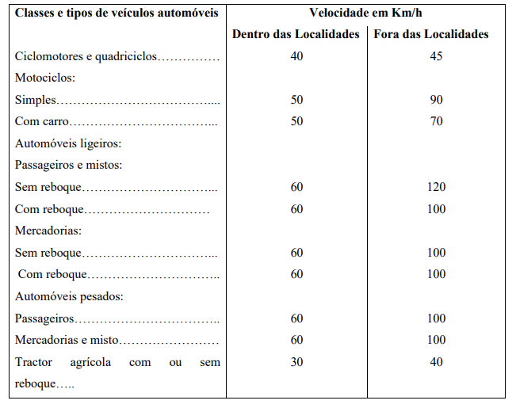
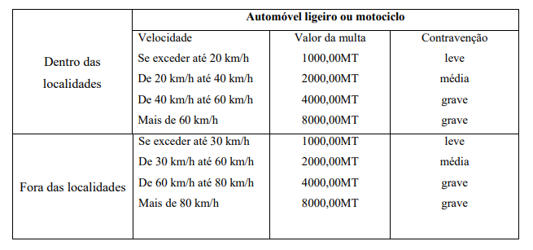
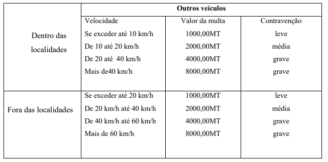
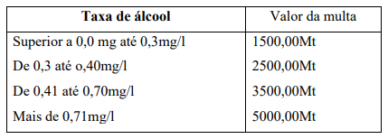

<!DOCTYPE html>
<html lang="pt">
<head>
  <meta charset="UTF-8">
  <meta name="viewport" content="width=device-width, initial-scale=1.0">
  <title>Código da Estrada - Conteúdo</title>
  <link rel="stylesheet" href="css/bulma.min.css" />
  <link rel="stylesheet" href="css/conteudo.css" />

  <link rel="stylesheet" href="css/navbar.css" />
  <script src="js/navbar.js"></script>

</head>
<body>

    <!-- Load an icon library to show a hamburger menu (bars) on small screens -->
    <link rel="stylesheet" href="https://cdnjs.cloudflare.com/ajax/libs/font-awesome/4.7.0/css/font-awesome.min.css">

    <div class="topnav" id="myTopnav">
      <a href="index.html" >Home</a>
      <a href="home.html"   class="active">Codigo de estrada </a>
      <a href="userTransgrecoes.html">Transgrecoes e Multas</a>
      <a href="userSimbols.html">Sinalizacao</a>
    
      <a href="indexQuiz.html">Quiz & Exames</a>
      <a href="favoritos.html "> Artigos Favoritos</a>
      <a href="javascript:void(0);" class="icon" onclick="myFunction()">
        <i class="fa fa-bars"></i>
      </a>
    </div>
     
  </div>

<div class="containerBody">

<header>
  <input type="text" id="search" placeholder="Pesquise por um termo..." oninput="filtrarConteudo()">
</header>

  <div id="conteudo-gerado">
    <div class="conteudo" id="disposições-gerais"><h2>Disposições Gerais</h2><div class="artigo" id="artigo-1"><h3>Artigo 1: </h3><pre style="white-space: pre-wrap;"><span class="artigoTitle">Definições</span>
    Os termos utilizados no presente Código da Estrada e legislação complementar têm o
    significado que consta do glossário que constitui Anexo I, o qual faz parte integrante do
    mesmo.
    </pre><div><button class="favorite-btn" onclick="adicionarFavorito('Artigo 1: Definições')">Favoritar</button></div></div><div class="artigo" id="artigo-2"><h3>Artigo 2: </h3><pre style="white-space: pre-wrap;"><span class="artigoTitle">Âmbito de aplicação</span>
    O disposto no presente Código aplica-se ao trânsito rodoviário nas vias de domínio
    público do Estado e nas vias de domínio privado quando abertas ao trânsito público em
    tudo o que não estiver especialmente regulado por acordo celebrado com os respectivos
    proprietários.
    </pre><div><button class="favorite-btn" onclick="adicionarFavorito('Artigo 2: Âmbito de aplicação')">Favoritar</button></div></div><div class="artigo" id="artigo-3"><h3>Artigo 3: </h3><pre style="white-space: pre-wrap;"><span class="artigoTitle">Liberdade de trânsito</span>
    1. Nas vias a que se refere o artigo anterior é livre a circulação, com as restrições
    constantes do presente Código e legislação complementar.
    2. As pessoas devem abster-se de actos que impeçam ou embaracem o trânsito ou
    comprometam a segurança ou a comodidade dos utentes das vias.
    3. Quem praticar actos com o intuito de impedir ou embaraçar a circulação de
    veículos é punido com multa de 3000,00 MT, se a sanção mais grave não for
    aplicável por força de outra disposição legal.
    </pre><div><button class="favorite-btn" onclick="adicionarFavorito('Artigo 3: Liberdade de trânsito')">Favoritar</button></div></div><div class="artigo" id="artigo-4"><h3>Artigo 4: </h3><pre style="white-space: pre-wrap;"><span class="artigoTitle">Colocação de obstáculos na via pública</span>
    1. É proibida a colocação de obstáculos que possam impedir ou embaraçar o trânsito
    e comprometer a segurança e comodidade dos utentes da via.
    2. A contravenção do disposto neste artigo é punida com a multa de 1000,00 MT.
    </pre><div><button class="favorite-btn" onclick="adicionarFavorito('Artigo 4: Colocação de obstáculos na via pública')">Favoritar</button></div></div><div class="artigo" id="artigo-5"><h3>Artigo 5: </h3><pre style="white-space: pre-wrap;"><span class="artigoTitle">Uso da via pública para outros fins</span>
    1. A utilização das vias públicas para realização de festas, cortejos, provas
    desportivas ou quaisquer outras actividades que possam afectar o trânsito normal
    carece de autorização do Governador da Província, nas estradas nacionais em que
    o evento se realizar e dos administradores distritais ou chefes do posto
    administrativo ou presidentes dos conselhos municipais, dentro das localidades,
    conforme cada situação.
    2. Compete ao Governo da Província em que estes eventos se realizarem promover o
    necessário policiamento.
    3. Compete ao INAV emitir parecer sobre a realização de provas desportivas nas
    vias públicas, nos aspectos atinentes ao fluxo do trânsito e segurança rodoviária.
    4. A contravenção do disposto no n.°
    1 deste artigo é punida com a multa de
    5000,00MT, devendo ainda o contraventor ressarcir o Estado por eventuais danos
    causados à via pública.
    </pre><div><button class="favorite-btn" onclick="adicionarFavorito('Artigo 5: Uso da via pública para outros fins')">Favoritar</button></div></div><div class="artigo" id="artigo-6"><h3>Artigo 6: </h3><pre style="white-space: pre-wrap;"><span class="artigoTitle">Suspensão do trânsito</span>
    1. A suspensão do trânsito é ordenada por motivos de segurança, de emergência grave
    ou de obras, ou com o fim de prover a conservação dos pavimentos, instalações e
    obras de arte e poder respeitar apenas à parte da via ou a veículos de certa espécie,
    peso ou dimensões, devendo, sempre que possível, estarem devidamente asseguradas
    as comunicações entre os locais servidos pela via.
    2. A suspensão do trânsito, nas estradas nacionais deve ser solicitada à ANE e, nas
    estradas locais, aos conselhos municipais.
    3. A entidade que ordenar a suspensão deve anunciá-la ao público com a antecedência
    mínima de três dias, indicando sempre a respectiva localização e a duração provável.
    4. Em casos determinados por motivos urgentes e imprevistos, pode ordenar-se a
    suspensão imediata, fazendo-se em seguida o anúncio ao público com a maior
    brevidade.
    5. Nenhuma via pavimentada pode ser entregue após sua construção, ou reaberta ao
    trânsito após a realização de obras ou de manutenção, enquanto não estiver
    devidamente sinalizada, vertical e horizontalmente, de forma a garantir as condições
    adequadas de segurança na circulação.
    6. É proibida a utilização das ondulações transversais e de sonorizadores como redutores
    de velocidade, salvo em casos especiais definidos pelo órgão ou entidade competente,
    nos padrões e critérios estabelecidos pelo INAV.
    </pre><div><button class="favorite-btn" onclick="adicionarFavorito('Artigo 6: Suspensão do trânsito')">Favoritar</button></div></div><div class="artigo" id="artigo-7"><h3>Artigo 7: </h3><pre style="white-space: pre-wrap;"><span class="artigoTitle">Proibição temporária ou permanente da Circulação de certos veículos</span>
    1. Sempre que ocorram circunstâncias anormais de trânsito, pode proibir-se
    temporariamente, por regulamento, a circulação de certas espécies de veículos ou de
    veículos que transportem certas mercadorias.
    2. Pode ainda ser condicionado por regulamento, com carácter temporário ou
    permanente, em todas ou apenas certas vias públicas, o trânsito de determinadas
    espécies de veículos ou dos utilizados no transporte de certas mercadorias.
    3. A proibição e o condicionamento referidos nos números anteriores são precedidos de
    divulgação através da comunicação social, distribuição de folhetos nas zonas
    afectadas, afixação de painéis de informação ou outro meio adequado.
    4. A contravenção do disposto nos n.ºs1 e 2 é punida com a multa de 1000,00MT, sendo
    os veículos impedidos de prosseguir a sua marcha até findar o período em que vigora
    a proibição.
    </pre><div><button class="favorite-btn" onclick="adicionarFavorito('Artigo 7: Proibição temporária ou permanente da Circulação de certos veículos')">Favoritar</button></div></div><div class="artigo" id="artigo-8"><h3>Artigo 8: </h3><pre style="white-space: pre-wrap;"><span class="artigoTitle">Regulamentação do trânsito</span>
    1. Compete ao Ministro que superintende a área dos Transportes aprovar os
    regulamentos necessários à boa execução deste código, excepto os aprovados pelo
    Governo.
    2. A regulamentação do trânsito no interior das localidades compete aos corpos
    administrativos ou aos conselhos municipais e é feita por meio de posturas de trânsito,
    que são publicadas após a aprovação dos respectivos projectos pelo INAV.
    3. Pode o INAV, ouvido o Conselho Municipal interessado, propor ao Ministro que
    superintende a área dos transportes as medidas que julgar necessárias para a
    regulamentação do trânsito dentro de qualquer localidade. O parecer do Conselho
    Municipal pode ser dispensado senão for dado no prazo de quarenta e cinco dias, a
    contar da data da remessa do ofício que o solicitar.
    </pre><div><button class="favorite-btn" onclick="adicionarFavorito('Artigo 8: Regulamentação do trânsito')">Favoritar</button></div></div><div class="artigo" id="artigo-9"><h3>Artigo 9: </h3><pre style="white-space: pre-wrap;"><span class="artigoTitle">Ordenamento do trânsito</span>
    1. O ordenamento do trânsito compete:
    a) Ao INAV, em todas as estradas;
    b) Aos corpos administrativos ou conselhos municipais, no interior das localidades.
    2. O INAV pode, no entanto, chamar a si o ordenamento do trânsito no interior das
    localidades em caso de festividades, manifestações públicas, provas desportivas ou
    outros acontecimentos que obriguem a adoptar providências excepcionais, cumprindo
    à PT participar na execução dessas providências, sempre que a sua colaboração for
    solicitada.
    </pre><div><button class="favorite-btn" onclick="adicionarFavorito('Artigo 9: Ordenamento do trânsito')">Favoritar</button></div></div><div class="artigo" id="artigo-10"><h3>Artigo 10: </h3><pre style="white-space: pre-wrap;"><span class="artigoTitle">Fiscalização do trânsito</span>
    1. A fiscalização do cumprimento das disposições deste Código e demais legislação
    sobre o trânsito incumbe sem prejuízo de outras entidades especialmente competentes:
    a) À polícia de Trânsito;
    b) Ao Instituto Nacional de Viação;
    c) À Administração Nacional de Estradas nas estradas nacionais; e
    d) Aos municípios nas estradas, ruas e caminhos municipais.
    2. Os agentes da PT devem estar identificados com o nome e número visíveis sobre o
    uniforme nos termos a serem regulamentados.
    3. As entidades mencionadas nas alíneas b), c) e d), em missão de serviço, devem ser
    portadoras de um cartão de identificação, segundo o modelo constante do Anexo II a
    este Código e têm direito a uso e porte de arma de defesa.
    4. As entidades referidas nas alíneas a), b), c) e d), quando em missão de serviço, têm
    direito a transitar, sem qualquer pagamento nos transportes públicos.
    5. As condições de utilização dos transportes privados pelas entidades referidas no
    número anterior serão fixadas em regulamento.
    6. Cabe ao CNV uniformizar e coordenar o exercício desta competência pelas entidades
    acima enumeradas, expedindo, para o efeito, as necessárias instruções
    </pre><div><button class="favorite-btn" onclick="adicionarFavorito('Artigo 10: Fiscalização do trânsito')">Favoritar</button></div></div><div class="artigo" id="artigo-11"><h3>Artigo 11: </h3><pre style="white-space: pre-wrap;"><span class="artigoTitle">Obediência aos agentes de fiscalização</span>
    1. Todos os condutores de veículos ou animais são obrigados a parar, sempre que uma
    autoridade policial ou seus agentes, devidamente uniformizados e identificados nos
    termos do n.° 2, do artigo anterior, lhes façam sinal para tal fim.
    2. Na ausência das autoridades ou agentes policiais, são competentes, para fazer o sinal
    de paragem, referido no número anterior, as autoridades que comandem forças
    militares na via pública, quando se desloquem em coluna militar, na medida do
    necessário para que essas forças transitem sem interrupção.
    3. A contravenção do disposto neste artigo é punida com a multa de 1000,00MT.
    Exceptua-se o caso de o contraventor cumprir tardiamente o sinal de paragem, em que
    a multa será de 500,00MT.
    </pre><div><button class="favorite-btn" onclick="adicionarFavorito('Artigo 11: Obediência aos agentes de fiscalização')">Favoritar</button></div></div><div class="artigo" id="artigo-12"><h3>Artigo 12: </h3><pre style="white-space: pre-wrap;"><span class="artigoTitle">Sinalização das vias públicas</span>
    1. As vias públicas devem ser convenientemente sinalizadas nos pontos em que o
    trânsito ou estacionamento estejam vedados ou sujeitos à restrições e, bem como,
    onde existem obstáculos, curvas encobertas, cruzamentos, entroncamentos e
    passagens de nível ou outras circunstancias que imponham aos condutores precauções
    especiais.
    2. A sinalização de carácter permanente compete à ANE nas estradas nacionais e aos
    conselhos municipais nas estradas, ruas e caminhos municipais do domínio privado,
    quando abertos ao trânsito público, em qualquer dos casos, mediante aprovação dos
    respectivos projectos pelo INAV.
    3. Os obstáculos eventuais devem ser sinalizados por aquele que lhes der causa, por
    forma a tornarem-se bem visíveis e a uma distância que permita evitar qualquer
    acidente. A contravenção do disposto neste número é punida com a multa de 10
    000,00MT.
    4. Nenhuma via pública poderá ser aberta ou reaberta sem que a respectiva sinalização
    tenha sido aprovada pelo INAV, podendo este ordenar a retirada ou alteração da
    sinalização que atente contra a segurança do trânsito.
    5. Quando por motivo urgente tiver sido interrompido ou condicionado o trânsito em
    qualquer via pública, deve a autoridade que causou a interrupção ou o
    condicionamento participá-lo à ANE ou aos conselhos municipais, consoante os
    casos.
    6. A contravenção do disposto no número anterior é punida com a multa de 5000,00MT.
    </pre><div><button class="favorite-btn" onclick="adicionarFavorito('Artigo 12: Sinalização das vias públicas')">Favoritar</button></div></div><div class="artigo" id="artigo-13"><h3>Artigo 13: </h3><pre style="white-space: pre-wrap;"><span class="artigoTitle">Sinais de trânsito</span>
    1. As cores e formas dos sinais reguladores de trânsito são indicadas em regulamento, de
    harmonia com os protocolos regionais e as convenções internacionais em vigor.
    2. Não podem conceder-se licenças para a colocação ou inscrição nas vias públicas e
    suas vizinhanças de quaisquer quadros, anúncios, cartazes ou outros meios de
    publicidade, que possam confundir-se com os sinais reguladores de trânsito,
    prejudicar a sua visibilidade ou reconhecimento ou a visibilidade das curvas,
    cruzamentos ou entroncamentos.
    </pre><div><button class="favorite-btn" onclick="adicionarFavorito('Artigo 13: Sinais de trânsito')">Favoritar</button></div></div><div class="artigo" id="artigo-14"><h3>Artigo 14: </h3><pre style="white-space: pre-wrap;"><span class="artigoTitle">Hierarquia entre as prescrições</span>
    1. As prescrições resultantes dos sinais prevalecem sobre as regras gerais de trânsito.
    2. A hierarquia entre as prescrições resultantes da sinalização é a seguinte:
    a) Prescrições resultantes de sinalização temporária que modifique o regime normal de
    utilização da via;
    b) Prescrições resultantes dos sinais luminosos;
    c) Prescrições relutantes dos sinais verticais;
    d) Prescrições resultantes das marcas rodoviárias.
    3. As ordens dos agentes reguladores do trânsito prevalecem sobre as prescrições
    resultantes dos sinais e sobre as regras de trânsito.
    4. A violação das prescrições de cumprimento obrigatório e proibitivo é punida com a
    multa de 1000,00MT.
    </pre><div><button class="favorite-btn" onclick="adicionarFavorito('Artigo 14: Hierarquia entre as prescrições')">Favoritar</button></div></div><div class="artigo" id="artigo-15"><h3>Artigo 15: </h3><pre style="white-space: pre-wrap;"><span class="artigoTitle">Veículos prioritários</span>
    1. Os condutores de veículos prioritários podem, se necessário, não observar as regras e
    sinais de trânsito, com excepção dos sinais dos agentes reguladores de trânsito.
    2. No entanto, os condutores dos veículos prioritários não podem, em circunstância
    alguma, pôr em período os outros utentes da via, sendo, designadamente, obrigados a
    suspender a sua marcha perante o sinal luminoso vermelho de regulação do trânsito
    ou o sinal de paragem obrigatória no cruzamento ou entroncamento, embora possam
    prosseguir, depois de tomadas as devidas precauções, sem esperar que a sinalização
    mude.
    3. Consideram-se veículos prioritários os que transitam em missão urgente de socorro e
    comitivas governamentais, assinalando adequadamente a sua marcha.
    4. A contravenção do disposto neste artigo é punida com a multa de 1000,00MT.
    Regras gerais
    </pre><div><button class="favorite-btn" onclick="adicionarFavorito('Artigo 15: Veículos prioritários')">Favoritar</button></div></div><div class="artigo" id="artigo-16"><h3>Artigo 16: </h3><pre style="white-space: pre-wrap;"><span class="artigoTitle">Circulação de veículos e animais</span>
    1. Todo o veículo ou animal, circulando na via pública, deve ter um condutor, salvo as
    excepções previstas neste Código para comboios, reboques e animais em grupo.
    2. Os condutores devem, durante a condução, abster-se de prática de quaisquer actos que
    sejam susceptíveis de prejudicar o exercício da condução com segurança.
    3. Os condutores não devem circular com uma parte do corpo fora do veículo.
    4. A contravenção do disposto neste artigo é punida com a multa de 1000,00MT.
    </pre><div><button class="favorite-btn" onclick="adicionarFavorito('Artigo 16: Circulação de veículos e animais')">Favoritar</button></div></div><div class="artigo" id="artigo-17"><h3>Artigo 17: </h3><pre style="white-space: pre-wrap;"><span class="artigoTitle">Sentido de marcha</span>
    1. O trânsito de veículos ou de animais é feito pela esquerda das faixas de rodagens e o
    mais próximo possível das bermas ou passeios, mas a uma distância destes que
    permita evitar qualquer acidente.
    2. Em caso de manifesta necessidade, e salvo o disposto em regulamentos locais, pode,
    no entanto, utilizar-se o lado direito da faixa de rodagem para ultrapassar ou mudar de
    direcção.
    3. A contravenção do disposto neste artigo é punida com a multa de 1000,00MT.
    </pre><div><button class="favorite-btn" onclick="adicionarFavorito('Artigo 17: Sentido de marcha')">Favoritar</button></div></div><div class="artigo" id="artigo-18"><h3>Artigo 18: </h3><pre style="white-space: pre-wrap;"><span class="artigoTitle">Filas de trânsito múltiplas</span>
    1. Sempre que no mesmo sentido sejam possíveis duas ou mais filas de trânsito, este
    deve ser feito pela via de trânsito mais à esquerda podendo, no entanto, utilizar-se
    outra senão houver lugar naquela e, bem assim, para ultrapassar ou mudar de
    direcção.
    2. Dentro das localidades, o condutor deve usar a via de trânsito mais conveniente ao seu
    destino, só lhe sendo permitida a mudança para a outra, depois de tomadas as devidas
    precauções, a fim de mudar de direcção, ultrapassar, parar ou estacionar.
    3. A contravenção do disposto neste artigo é punida com a multa de 1000,00MT.
    </pre><div><button class="favorite-btn" onclick="adicionarFavorito('Artigo 18: Filas de trânsito múltiplas')">Favoritar</button></div></div><div class="artigo" id="artigo-19"><h3>Artigo 19: </h3><pre style="white-space: pre-wrap;"><span class="artigoTitle">Início de marcha</span>
    1. Os condutores não podem iniciar ou retomar a marcha, sem assinalarem com a
    necessária antecedência a sua intenção e sem adoptarem as precauções necessárias
    para evitar qualquer acidente.
    2. A contravenção do disposto neste artigo é punida com a multa de 1000,00MT.
    </pre><div><button class="favorite-btn" onclick="adicionarFavorito('Artigo 19: Início de marcha')">Favoritar</button></div></div><div class="artigo" id="artigo-20"><h3>Artigo 20: </h3><pre style="white-space: pre-wrap;"><span class="artigoTitle">Distância entre veículos</span>
    1. O condutor de um veículo em marcha deve manter entre o seu veículo e o que
    antecede a distância suficiente para evitar acidente em caso de súbita paragem ou
    diminuição de velocidade deste.
    2. O condutor de um veículo em marcha deve manter distância lateral suficiente para
    evitar acidente entre seu veículo e os veículos que transitam na mesma faixa de
    rodagem, no mesmo sentido ou no sentido oposto.
    3. A contravenção do disposto neste artigo é punida com a multa de 1000,00MT.
    </pre><div><button class="favorite-btn" onclick="adicionarFavorito('Artigo 20: Distância entre veículos')">Favoritar</button></div></div><div class="artigo" id="artigo-21"><h3>Artigo 21: </h3><pre style="white-space: pre-wrap;"><span class="artigoTitle">Bermas e passeios</span>
    1. Os veículos e animais podem atravessar bermas ou passeios, desde que o acesso aos
    prédios o exija, salvo as excepções previstas em regulamento local.
    2. A contravenção do disposto neste artigo é punida com a multa de 500,00MT.
    </pre><div><button class="favorite-btn" onclick="adicionarFavorito('Artigo 21: Bermas e passeios')">Favoritar</button></div></div><div class="artigo" id="artigo-22"><h3>Artigo 22: </h3><pre style="white-space: pre-wrap;"><span class="artigoTitle">Trânsito nos cruzamentos, entroncamentos e rotundas</span>
    1. Nos cruzamentos, entroncamentos e rotundas, o trânsito faz - se por forma a dar a
    direita à parte centra dos mesmos ou às placas, postes, ilhéus direccionais ou
    dispositivos semelhantes existentes, desde que se encontrem no eixo da faixa de
    rodagem de que procedem os veículos.
    2. Quando na faixa de rodagem exista algum dos dispositivos referidos no n.° 1, o
    trânsito, sem prejuízo do disposto nos artigos 17 e 18, faz-se por forma a dar-lhes a
    direita, salvo se, se encontrarem numa via de sentido único ou na parte da faixa de
    rodagem afecta a um só sentido, casos em que o trânsito se pode fazer pela direita ou
    pela esquerda, conforme o destino a seguir.
    3. Ao aproximar-se de qualquer tipo de intersecção, o condutor do veículo deve
    demonstrar prudência especial, transitando em velocidade moderada, de forma que
    possa deter o seu veículo com segurança, para dar passagem ao peão e a veículos que
    tenham direito de preferência.
    4. Nos cruzamentos e entroncamentos é proibido ao condutor fazer ultrapassagem.
    5. A contravenção do disposto nos números anteriores é punida com a multa de
    1000,00MT.
    </pre><div><button class="favorite-btn" onclick="adicionarFavorito('Artigo 22: Trânsito nos cruzamentos, entroncamentos e rotundas')">Favoritar</button></div></div></div><div class="conteudo" id="sinais-de-condutores"><h2>Sinais de condutores</h2><div class="artigo" id="artigo-23"><h3>Artigo 23: </h3><pre style="white-space: pre-wrap;"><span class="artigoTitle">Sinalização da manobra</span>
    1. Quando um veículo iniciar a marcha, diminuir a sua velocidade, parar, mudar de
    direcção ou da via de trânsito, iniciar uma ultrapassagem ou inverter o sentido de
    marcha e em todos os casos em que seja necessário indicar a sua aproximação, o
    condutor deve utilizar o dispositivo mecânico luminoso ou sonoro e, na falta deste, o
    braço para indicar o sinal regulamentar correspondente, com a devida antecedência.
    2. A medida deve manter-se enquanto se efectua a manobra e cessar logo que ela esteja
    concluída.
    3. A contravenção do disposto neste artigo é punida com a multa de 500,00MT.
    </pre><div><button class="favorite-btn" onclick="adicionarFavorito('Artigo 23: Sinalização da manobra')">Favoritar</button></div></div><div class="artigo" id="artigo-24"><h3>Artigo 24: </h3><pre style="white-space: pre-wrap;"><span class="artigoTitle">Sinais sonoros</span>
    1. Os sinais sonoros serão breves, usados de forma moderada e em caso algum devem
    servir de meio de protesto contra interrupções do trânsito ou como meios de
    chamamento.
    2. É proibida a sua afinação ou reparação na via pública.
    3. Só é permitida a utilização dos sinais sonoros nos seguintes casos:
    a) Perigo iminente;
    b) Fora das localidades para prevenir um condutor da intenção de o ultrapassar e, bem
    assim, nas curvas, cruzamentos, entroncamentos e lombas de visibilidade reduzida.
    4. Dentro das localidades, os sinais sonoros só são usados em caso de manifesta
    necessidade, podendo ser proibidos nas zonas em que o ordenamento do trânsito seja
    assegurado por agentes da autoridade ou por instrumentos de sinalização luminosa
    5. É sempre proibido dentro das localidades o uso de sinais constituídos por sons
    diferentes, simultâneos ou alternados, bem como os provenientes de sistema e vácuo,
    ar comprimido ou qualquer outro que origine os mesmos efeitos.
    6. Exceptuam-se do disposto nos números anteriores os sinais de veículos da polícia ou
    que transitem em prestação de socorro ou de serviço urgente.
    7. As características dos dispositivos emissores dos sinais sonoros são fixadas em
    regulamento.
    8. A contravenção do disposto neste artigo é punida com a multa de 500,00MT.
    </pre><div><button class="favorite-btn" onclick="adicionarFavorito('Artigo 24: Sinais sonoros')">Favoritar</button></div></div><div class="artigo" id="artigo-25"><h3>Artigo 25: </h3><pre style="white-space: pre-wrap;"><span class="artigoTitle">Sinais sonoros especiais</span>
    1. Nos veículos de polícia e nos afectos à prestação de socorro ou de serviço urgente,
    podem ser utilizados dispositivos especiais para emissão de sinais sonoros, cujas
    características e modos de utilização são fixados em regulamento.
    2. Não é permitida em quaisquer outros veículos, a utilização dos dispositivos referidos
    no número anterior, nem a emissão de sinais sonoros que se possam confundir com os
    emitidos por aqueles dispositivos.
    3. A contravenção do disposto n.° 2 é punida com a multa de 1000,00MT e com a perda
    dos objectos, devendo o agente de fiscalização proceder à sua imediata remoção e
    apreensão ou, não sendo ela possível, apreender o documento de identificação do
    veículo que será restituído logo que o contraventor apresentar aqueles objectos à
    autoridade autuante.
    </pre><div><button class="favorite-btn" onclick="adicionarFavorito('Artigo 25: Sinais sonoros especiais')">Favoritar</button></div></div><div class="artigo" id="artigo-26"><h3>Artigo 26: </h3><pre style="white-space: pre-wrap;"><span class="artigoTitle">Substituição dos sinais sonoros</span>
    1. Quando os veículos transitem com as luzes acesas por insuficiência de luminosidade,
    causadas por condições meteorológicas ou ambientais, nomeadamente, em caso de
    nevoeiro, chuva, queda de neve e nuvens de fumo ou pó, os sinais sonoros podem ser
    substituídos por sinais luminosos dos faróis do veículo usados intermitentemente e
    por forma a não causar encandeamento.
    2. A contravenção do disposto neste artigo é punida com a multa de 500,00MT.
    </pre><div><button class="favorite-btn" onclick="adicionarFavorito('Artigo 26: Substituição dos sinais sonoros')">Favoritar</button></div></div><div class="artigo" id="artigo-27"><h3>Artigo 27: </h3><pre style="white-space: pre-wrap;"><span class="artigoTitle">Sinais luminosos</span>
    1. Quando os veículos transitem fora das localidades com as luzes acesas por
    insuficiência de visibilidade, os sinais sonoros podem ser substituídos por sinais
    luminosos, através da utilização alternada dos máximos com os médios, mas sempre
    sem provocar encandeamento.
    2. Dentro das localidades, durante a noite, é obrigatória a substituição de sinais sonoros
    pelos sinais luminosos utilizados nas condições previstas no número anterior.
    3. Os veículos de polícia e os veículos afectos à prestação de socorro ou de serviço
    urgente de interesse público podem utilizar aviadores luminosos especiais, cujas
    características e condições de utilização são fixadas em regulamento.
    4. Os veículos que, em razão do serviço a que se destinam, devem parar na via pública
    ou deslocar-se em marcha lenta devem utilizar avisadores luminosos especiais, cujas
    características e condições de utilização são fixadas em regulamento.
    5. Não é permitida em quaisquer outros veículos a instalação ou utilização dos
    avisadores referidos nos números anteriores.
    6. A contravenção do disposto nos n.°s 2 e 4 é sancionada com a multa de 1000,00MT.
    7. A contravenção do disposto no n.° 5 é sancionada com a multa de 2000,00MT e com
    a perda dos objectos, devendo o agente de fiscalização proceder à sua imediata
    remoção e apreensão ou, não sendo ela possível, apreender o documento de
    identificação do veículo até à afectiva remoção e apreensão daqueles objectos.
    </pre><div><button class="favorite-btn" onclick="adicionarFavorito('Artigo 27: Sinais luminosos')">Favoritar</button></div></div><div class="artigo" id="artigo-28"><h3>Artigo 28: </h3><pre style="white-space: pre-wrap;"><span class="artigoTitle">Visibilidade reduzida ou insuficiente</span>
    Para os efeitos deste Código e legislação complementar, entende-se por reduzida ou
    insuficiente a visibilidade em qualquer ponto de uma via sempre que o condutor não possa
    avistar a faixa de rodagem em toda a sua largura numa extensão de, pelo menos, 50 metros.
    </pre><div><button class="favorite-btn" onclick="adicionarFavorito('Artigo 28: Visibilidade reduzida ou insuficiente')">Favoritar</button></div></div></div><div class="conteudo" id="velocidade"><h2>Velocidade</h2><div class="artigo" id="artigo-29"><h3>Artigo 29: </h3><pre style="white-space: pre-wrap;"><span class="artigoTitle">Princípios gerais</span>
    1. Os condutores devem regular a velocidade dos veículos de modo que, atendendo às
    características destes, às condições da via, ao estado físico e psicológico do condutor,
    à intensidade de trânsito e a quaisquer outras circunstâncias especiais, não haja perigo
    para a segurança das pessoas e das coisas nem perturbação ou entrave para o trânsito.
    2. Salvo em caso de perigo iminente, o condutor não deve diminuir subitamente a
    velocidade sem previamente se certificar de que daí não resulta perigo, para outros
    utentes da via, nomeadamente, para os condutores dos veículos que o sigam.
    </pre><div><button class="favorite-btn" onclick="adicionarFavorito('Artigo 29: Princípios gerais')">Favoritar</button></div></div><div class="artigo" id="artigo-30"><h3>Artigo 30: </h3><pre style="white-space: pre-wrap;"><span class="artigoTitle">Velocidade excessiva</span>
    1. Considera-se excessiva a velocidade, sempre que o condutor não possa fazer parar o
    veículo no espaço livre à sua frente, ou exceda os limites de velocidade fixados nos
    termos legais.
    2. A contravenção do disposto neste artigo é punida com a multa de 1000,00MT.
    </pre><div><button class="favorite-btn" onclick="adicionarFavorito('Artigo 30: Velocidade excessiva')">Favoritar</button></div></div><div class="artigo" id="artigo-31"><h3>Artigo 31: </h3><pre style="white-space: pre-wrap;"><span class="artigoTitle">Marcha lenta</span>
    1. Sem prejuízo dos limites máximos fixados, os veículos automóveis não devem
    transitar em marcha cuja lentidão cause embaraço justificado aos restantes utentes da
    via.
    2. A contravenção do disposto neste artigo é punida com a multa de 500,00MT.
    </pre><div><button class="favorite-btn" onclick="adicionarFavorito('Artigo 31: Marcha lenta')">Favoritar</button></div></div><div class="artigo" id="artigo-32"><h3>Artigo 32: </h3><pre style="white-space: pre-wrap;"><span class="artigoTitle">Velocidade moderada</span>
    1. A velocidade deve se especialmente moderada nos seguintes casos:
    a) Nas descidas de forte inclinação;
    b) Nas curvas, cruzamentos, entroncamentos, rotundas, lombas de estradas, pontes,
    túneis, passagens de nível e outros locais de visibilidade reduzida;
    c) Junto de escolas, hospitais, creches e estabelecimentos similares, quando devidamente
    sinalizados;
    d) Nas localidades ou vias marginadas por edificações;
    e) Na aproximação de aglomerações de pessoas ou animais;
    f) No cruzamento com outros veículos;
    g) Em todos os locais de reduzida visibilidade;
    h) Nos troços e vias em mau estado de conservação, molhados ou enlameados ou que
    ofereçam precárias condições de aderência;
    i) Na aproximação das passagens assinaladas nas faixas de rodagem para a travessia de
    pões;
    j) Nos locais assinalados com sinais de perigo.
    2. Nas descidas de inclinação acentuada, os automóveis pesados não podem transitar
    sem utilizarem o motor como auxiliar do travão.
    3. Nas pontes, túneis e passagens de nível, os animais, atrelados ou não, devem seguir a
    passo.
    4. A contravenção do disposto no n.° 1 é punida com a multa de 1000,00MT.
    </pre><div><button class="favorite-btn" onclick="adicionarFavorito('Artigo 32: Velocidade moderada')">Favoritar</button></div></div><div class="artigo" id="artigo-33"><h3>Artigo 33: </h3><pre style="white-space: pre-wrap;"><span class="artigoTitle">Limites de velocidade</span>
    1. Sem prejuízo do disposto nos artigos 29 e 32 e de limites inferiores que lhes sejam
    impostos, os condutores não podem exceder as seguintes velocidades instantâneas
    (em quilómetros/hora):
    
    2. Quem exceder os limites máximos de velocidade é punido com pena de multa, sem
    prejuízo do disposto nos artigos 146 e 147, segundo os quadros seguintes:
    
    
    3. Sem prejuízo do disposto no artigo 31, nas auto-estradas, os condutores não podem
    transitar a velocidade inferior a 40 km/h.
    4. Os condutores não profissionais que estejam habilitados a conduzir veículos de
    determinada classe, há menos de um ano, não podem exceder a velocidade de 90
    Km/h, quando conduzam esses veículos, sem prejuízo de limites inferiores fixados
    nos termos legais.
    5. O controlo de velocidade é efectuado por equipamento apropriado, nos termos
    estabelecidos em Diploma conjunto dos Ministros que superintendem as áreas dos
    Transportes e do Interior.
    </pre><div><button class="favorite-btn" onclick="adicionarFavorito('Artigo 33: Limites de velocidade')">Favoritar</button></div></div><div class="artigo" id="artigo-34"><h3>Artigo 34: </h3><pre style="white-space: pre-wrap;"><span class="artigoTitle">Limites de velocidade regionais</span>
    1. Por despacho do Ministro que superintende a área dos Transportes, podem ser fixados
    limites máximos de velocidade, para vigorar em regiões ou nas vias de comunicação
    que forem designadas, durante os períodos em que a intensidade e características de
    trânsito o imponham como medida de segurança.
    2. Estas determinações são ainda anunciadas ao público através dos meios usuais de
    informação.
    </pre><div><button class="favorite-btn" onclick="adicionarFavorito('Artigo 34: Limites de velocidade regionais')">Favoritar</button></div></div><div class="artigo" id="artigo-35"><h3>Artigo 35: </h3><pre style="white-space: pre-wrap;"><span class="artigoTitle">Limites de velocidade para determinados transportes</span>
    1. Sempre que o julgue conveniente, o Ministro que superintende a área dos Transportes
    pode diminuir ou aumentar os limites de velocidade dos veículos automóveis
    empregados em determinados transportes, bem como estabelecer, para cada caso, o
    tempo mínimo que deve ser gasto num dado trajecto.
    2. Nestes casos, a autoridade licenciadora da actividade transportadora deve mencionar
    na respectiva licença os limites de velocidade definidos nos termos do número
    anterior.
    </pre><div><button class="favorite-btn" onclick="adicionarFavorito('Artigo 35: Limites de velocidade para determinados transportes')">Favoritar</button></div></div><div class="artigo" id="artigo-36"><h3>Artigo 36: </h3><pre style="white-space: pre-wrap;"><span class="artigoTitle">Limites especiais de velocidade</span>
    O Ministro que superintende a área dos Transportes pode ainda, por sua iniciativa ou
    proposta da ANE ou das entidades responsáveis pela administração dos centros urbanos, fixar
    limites de velocidade máximos ou mínimos diferentes dos previstos nos artigos precedentes,
    nas vias em que as condições de trânsito o aconselhem, devendo tais limites ser
    convenientemente sinalizados.
    </pre><div><button class="favorite-btn" onclick="adicionarFavorito('Artigo 36: Limites especiais de velocidade')">Favoritar</button></div></div><div class="artigo" id="artigo-37"><h3>Artigo 37: </h3><pre style="white-space: pre-wrap;"><span class="artigoTitle">Inobservância dos limites especiais de velocidade</span>
    A inobservância dos limites máximos de velocidade para determinados transportes, regiões
    ou zonas urbanas é punida nos termos do artigo 33.
    </pre><div><button class="favorite-btn" onclick="adicionarFavorito('Artigo 37: Inobservância dos limites especiais de velocidade')">Favoritar</button></div></div></div><div class="conteudo" id="cedência-de-passagem,-cruzamentos,-entroncamentos-e-rotundas"><h2>Cedência de passagem, cruzamentos, entroncamentos e rotundas</h2><div class="artigo" id="artigo-38"><h3>Artigo 38: </h3><pre style="white-space: pre-wrap;"><span class="artigoTitle">Prioridade de passagem</span>
    1. Considera-se prioridade de passagem o direito que o condutor tem de passar em
    primeiro lugar.
    2. A prioridade de passagem permite aos condutores que dela gozem, uma vez tomadas
    as necessárias precauções, não modificar a sua velocidade ou direcção e obriga todos
    os outros a abandar ou a parar e, se necessário, recuar o seu veículo de forma a
    facultar-lhes a passagem.
    3. Têm prioridade de passagem:
    a) Nas intersecções não sinalizadas, os condutores que apresentem pela direita, devendo,
    porém, respeitar as prioridades previstas nas alíneas seguintes;
    b) Os condutores que transitem pelas auto-estradas, em relação a todos os veículos que
    se apresentem nos respectivos remais de acesso, incluindo os veículos e colunas
    indicados nas alíneas c) e d);
    c) Os condutores de veículos prioritários e da polícia assinalando devidamente a marcha;
    d) As colunas militares e militarizadas, que devem, no entanto, adoptar as medidas
    necessárias para não embaraçar o trânsito e para prevenir acidentes.
    4. Estas regras de prioridade são aplicáveis sempre que não exista sinalização especial
    que defina outro modo de proceder.
    5. Os condutores não devem entrar num cruzamento ou entroncamento, mesmo que o
    direito de prioridade ou sinalização automática os autorizem a avançar, se for
    previsível que a intensidade do tráfego os obrigará a imobilizar-se dentro desse
    cruzamento ou entroncamento, dificultando ou impedindo a passagem.
    6. A contravenção do disposto neste artigo é punida com a multa de 1000,00MT.
    </pre><div><button class="favorite-btn" onclick="adicionarFavorito('Artigo 38: Prioridade de passagem')">Favoritar</button></div></div><div class="artigo" id="artigo-39"><h3>Artigo 39: </h3><pre style="white-space: pre-wrap;"><span class="artigoTitle">Cedência de passagem</span>
    1. Devem ceder passagem:
    a) Os condutores que saiam de qualquer parque de estacionamento, de uma zona de
    abastecimento de combustível ou de qualquer prédio ou caminho particular;
    b) Os condutores que entrem numa auto-estrada ou numa via reservada a automóveis e
    motociclos, desde que devidamente sinalizada pelos respectivos ramais de acesso;
    c) Os condutores que numa intersecção pretendam mudar de direcção para a direita, em
    relação aos que na mesma via se apresentem em sentido contrário e sigam em frente
    ou mudem de direcção para esquerda;
    d) Os condutores que entrem numa rotunda;
    e) Os condutores de velocípedes sem motor, de veículos de tracção animal e de animais,
    salvo perante os condutores na situação da alínea a);
    f) Os condutores que em relação aos peões que tenham iniciado a travessia sobre a
    passagem para peões e quando aqueles mudam de direcção em relação aos peões que
    estejam a atravessar a faixa de rodagem da via em que aqueles pretendam seguir;
    g) Os condutores perante um portador de deficiência visual.
    2. Para permitir a circulação de um veículo prioritário ou da polícia, assinalando
    devidamente a marcha e transitando numa via congestionada, devem os condutores
    deixar livre uma passagem do lado direito da parte da faixa de rodagem afecta ao seu
    sentido de circulação, chegando-se o mais possível para esquerda e podendo, se
    necessário, utilizar as bermas, excepto se for numa auto-estrada.
    3. Nos cruzamentos ou entroncamentos, onde estejam implantados em todas direcções
    das vias, sinais de paragem obrigatória, a prioridade de passagem procede-se de
    acordo com a ordem sucessiva de chegada dos veículos.
    4. A contravenção do disposto neste artigo é punida com a multa de 1000,00MT.
    </pre><div><button class="favorite-btn" onclick="adicionarFavorito('Artigo 39: Cedência de passagem')">Favoritar</button></div></div><div class="artigo" id="artigo-40"><h3>Artigo 40: </h3><pre style="white-space: pre-wrap;"><span class="artigoTitle">Cedência de passagem a certos veículos</span>
    1. Sem prejuízo do disposto no artigo anterior, os condutores devem ceder passagem às
    colunas militares ou militarizadas.
    2. O condutor de um velocípede, de um veículo de tracção humana ou animal ou de
    animais deve ceder passagem aos veículos a motor, a não ser que estes saiam dos
    locais referidos na alínea a) do n.° 1 do artigo anterior.
    3. Nos cruzamentos, entroncamentos e rotundas, os condutores devem ceder passagem
    aos veículos que se desloquem sobre carris.
    4. As colunas a que se refere no n.° 1, bem como os condutores dos veículos que se
    desloquem sobre carris, devem tomar as precauções necessárias para não embaraçar o
    trânsito e para evitar acidentes.
    5. A contravenção do disposto no n°. 1 deste artigo é punida com a multa de
    1000,00MT.
    6. A contravenção do disposto no n.° 2 deste artigo é punida com a multa de 500,00MT.
    </pre><div><button class="favorite-btn" onclick="adicionarFavorito('Artigo 40: Cedência de passagem a certos veículos')">Favoritar</button></div></div><div class="artigo" id="artigo-41"><h3>Artigo 41: </h3><pre style="white-space: pre-wrap;"><span class="artigoTitle">Cruzamento de veículos</span>
    1. Verifica-se o cruzamento de veículos quando os condutores de dois veículos que
    transitem na mesma via e em sentidos opostos passem um pelo outro em simultâneo.
    2. Quando, na mesma via, se encontrem dois veículos, transitando em sentidos opostos,
    cada um dos condutores deve deixar livre uma distância lateral suficiente, entre seu
    veículo e aquele com que vai cruzar, de modo a que a manobra se faça com
    segurança.
    3. Se não for possível efectuar o cruzamento nas condições indicadas, por a via se
    encontrar parcialmente obstruída, o condutor que tiver de contornar o obstáculo deve
    reduzir a velocidade ou parar, de modo a dar a passagem ao outro.
    4. Se o impedimento não puder ser resolvido por aplicação do disposto no número
    anterior, recua o veículo que se encontre mais próximo do local em que o cruzamento
    seja possível; nas vias de inclinação acentuada, recua o que for a subir, excepto se
    essa manobra for manifestante mais fácil para o veículo que desce.
    5. Exceptuam-se das limitações impostas nos n.
    °s 2 e 3:
    a) As ambulâncias e os veículos dos bombeiros, da polícia e outros agentes
    fiscalizadores e, de uma maneira geral, os que transportem, em serviço urgente,
    doentes ou feridos, desde que assinalem adequadamente a sua marcha;
    b) As colunas militares ou militarizadas, que devem, no entanto, adoptar as medidas
    necessárias para não embaraçar o trânsito e para prevenir acidentes.
    6. Os veículos, ou conjuntos articulados de veículos, cuja largura total exceda 2 m, ou
    cujo comprimento total, incluindo a carga, exceda 8 m, devem diminuir a velocidade
    ou parar, a fim de facilitarem o cruzamento com outros veículos, sempre que a largura
    livre da faixa de rodagem, o perfil transversal ou o estado de conservação da via não
    permitam o cruzamento com a necessária segurança.
    7. A contravenção do disposto neste artigo é punida com a multa de 1000,00MT.
    </pre><div><button class="favorite-btn" onclick="adicionarFavorito('Artigo 41: Cruzamento de veículos')">Favoritar</button></div></div></div><div class="conteudo" id="manobras-em-especial"><h2>Manobras em especial</h2><div class="artigo" id="artigo-42"><h3>Artigo 42: </h3><pre style="white-space: pre-wrap;"><span class="artigoTitle">Princípio geral</span>
    O condutor só pode efectuar alguma manobra em local e por forma que da sua realização não
    resulte perigo ou embaraço para o trânsito. Mesmo tendo-a iniciado, deverá suspendê-la para
    prevenir a ocorrência de um perigo maior.
    </pre><div><button class="favorite-btn" onclick="adicionarFavorito('Artigo 42: Princípio geral')">Favoritar</button></div></div><div class="artigo" id="artigo-43"><h3>Artigo 43: </h3><pre style="white-space: pre-wrap;"><span class="artigoTitle">Ultrapassagem</span>
    1. Considera-se haver ultrapassagem quando dois veículos, circulando na mesma fila, o
    que se encontra atrás passa para diante do outro.
    2. A ultrapassagem de veículos ou de animais faz-se pela direita.
    3. Pode, no entanto, fazer-se pela esquerda:
    a) A ultrapassagem dos veículos que transitem sobre carris, desde que os mesmos não
    utilizem este lado da faixa de rodagem e não estejam parados para receber ou largar
    passageiros;
    b) A ultrapassagem dos veículos ou animais cujo condutor haja assinalado a manobra de
    mudança de direcção para a direita, desde que, nos termos do artigo seguinte, tenha
    deixado livre a parte mais à esquerda da faixa de rodagem.
    4. O condutor de veículo ou de animais não deve iniciar uma ultrapassagem, sem
    certificar de que o condutor que o antecede na mesma via já sinalizou a intenção de
    ultrapassar um terceiro veículo ou de contornar um obstáculo, bem como certificar-se
    de que a pode fazer sem perigo de colidir com um veículo ou animal que transite no
    mesmo sentido ou em sentido contrário.
    5. Nenhum condutor deve tomar a direita dos veículos ou animais que pretenda
    ultrapassar, sem avisar da sua intenção aos respectivos condutores, nem retomar à
    esquerda, sem se ter assegurado de que daí não resulta perigo para os veículos ou
    animais ultrapassados, assinalando o retorno à esquerda.
    6. Todo o condutor de veículos ou de animais é obrigado, sempre que não haja obstáculo
    que o impeça, a facultar imediatamente a ultrapassagem, desviando-se o mais possível
    para a esquerda e não aumentando a sua velocidade enquanto não for ultrapassado.
    7. Os veículos de largura superior a2m, devem ainda, reduzir a velocidade ou parar,
    sempre que a largura livre da faixa de rodagem, o seu perfil ou estado de conservação
    da via não permitam a ultrapassagem coma necessária segurança.
    8. Os automóveis pesados, quando transitem fora das localidades, devem guardar entre
    si um intervalo mínimo de 50 m, salvo durante o tempo necessário para fazer uma
    ultrapassagem.
    9. A contravenção do disposto neste artigo é punida com a multa de 1000,00MT.
    </pre><div><button class="favorite-btn" onclick="adicionarFavorito('Artigo 43: Ultrapassagem')">Favoritar</button></div></div><div class="artigo" id="artigo-44"><h3>Artigo 44: </h3><pre style="white-space: pre-wrap;"><span class="artigoTitle">Ultrapassagens proibidas</span>
    1. É proibida a ultrapassagem:
    a) Nas lombas de estrada;
    b) Nas curvas de visibilidade reduzida;
    c) Imediatamente antes e nas passagens de nível;
    d) Imediatamente antes e nos cruzamentos e entroncamentos;
    e) Imediatamente antes e nas passagens assinaladas para a travessia de peões;
    f) Na aproximação de paragem devidamente sinalizada, com aglomerado de pessoas;
    g) Em todo os locais de visibilidade insuficiente;
    h) Quando haja perigo de colisão, e
    i) Quando a largura da via for insuficiente.
    2. É proibida a ultrapassagem de um veículo que esteja a ultrapassar um terceiro.
    3. Não é aplicável o disposto nas alíneas a) e d) do n°1 e no n.° 2, sempre que na faixa
    de rodagem sejam possíveis duas ou mais filas de trânsito no mesmo sentido, desde
    que a ultrapassagem não se faça pela parte da faixa de rodagem reservada ao trânsito
    em sentido oposto.
    4. Não é, igualmente, aplicável o disposto na alínea d) do n.°1, sempre que:
    a) O trânsito se faça em sentido giratório;
    b) O condutor transite em via que lhe confira prioridade nos cruzamentos e
    entroncamentos e tal esteja devidamente assinalado;
    c) A ultrapassagem se faça pela esquerda nos termos da alínea b)do n.º 3 do artigo 43.
    5. A contravenção do disposto neste artigo é punida com a multa de 1000,00MT.
    </pre><div><button class="favorite-btn" onclick="adicionarFavorito('Artigo 44: Ultrapassagens proibidas')">Favoritar</button></div></div><div class="artigo" id="artigo-45"><h3>Artigo 45: </h3><pre style="white-space: pre-wrap;"><span class="artigoTitle">Mudança de direcção</span>
    1. Mudança de direcção é uma manobra que consiste em um condutor tomar outra via
    que se intersecta com aquela em que vinha circulando.
    2. Os condutores de veículos ou animais que pretendam mudar de direcção para a
    direita, devem aproximar-se com a devida antecedência do eixo da via e efectuar a
    manobra de modo a dar esquerda à parte central do cruzamento ou entroncamento.
    3. Nas vias de sentido único, os condutores que pretendam mudar de direcção, devem
    aproximar-se, com a necessária antecedência e quando possível, do limite direito ou
    esquerdo da faixa de rodagem, consoante a direcção que queiram tomar e efectuar a
    manobra no trajecto mais curto.
    4. Em caso algum devem, porém, inicia-la sem previamente se assegurarem de que da
    sua realização não resulta perigo ou embaraço para o restante tráfego.
    5. A contravenção do disposto neste artigo é punida com a multa de 1000,00MT.
    </pre><div><button class="favorite-btn" onclick="adicionarFavorito('Artigo 45: Mudança de direcção')">Favoritar</button></div></div><div class="artigo" id="artigo-46"><h3>Artigo 46: </h3><pre style="white-space: pre-wrap;"><span class="artigoTitle">Mudança de direcção para esquerda</span>
    1. O condutor que pretenda mudar de direcção para esquerda deve aproximar-se, com a
    necessária antecedência, da margem esquerda da faixa de rodagem e efectuar a
    manobra no trajecto mais curto.
    2. A contravenção do disposto neste artigo é punida com a multa de 1000,00MT.
    </pre><div><button class="favorite-btn" onclick="adicionarFavorito('Artigo 46: Mudança de direcção para esquerda')">Favoritar</button></div></div><div class="artigo" id="artigo-47"><h3>Artigo 47: </h3><pre style="white-space: pre-wrap;"><span class="artigoTitle">Inversão do sentido de marcha</span>
    1. A inversão do sentido de marcha deve ser feito em local e de modo que não
    prejudique o trânsito.
    2. É proibido inverter o sentido de marcha nas curvas, cruzamentos ou entroncamentos
    de visibilidade reduzida, nas pontes, passagens de nível e túneis e, de um modo geral,
    onde quer que a visibilidade ou a largura da via seja insuficiente para esse efeito ou se
    verifique grande intensidade de tráfego.
    3. A contravenção do disposto neste artigo é punida com a multa de 1000,00MT.
    </pre><div><button class="favorite-btn" onclick="adicionarFavorito('Artigo 47: Inversão do sentido de marcha')">Favoritar</button></div></div><div class="artigo" id="artigo-48"><h3>Artigo 48: </h3><pre style="white-space: pre-wrap;"><span class="artigoTitle">Marcha atrás</span>
    1. Marcha atrás é a manobra através da qual se põe o veículo a circular em sentido
    contrário sem alterar a posição frontal do veículo em relação a marcha inicial.
    2. A marcha atrás só é permitida como manobra auxiliar ou de recursos e deve efetuar-se
    o mais possível à esquerda, em local de boa visibilidade e onde não prejudique o
    trânsito.
    3. Esta manobra realiza-se lentamente e no menor trajecto possível, depois de feitos os
    sinais regulamentares e tomadas as precauções devidas.
    4. Sem prejuízo do disposto sobre o cruzamento de veículos, a marcha atrás é proibida:
    a) Nas lombas;
    b) Nas curvas, cruzamentos ou entroncamentos de visibilidade reduzida;
    c) Nas pontes, passagens de nível e túneis;
    d) Nas auto-estradas;
    e) Onde quer que a visibilidade seja insuficiente ou a via, pela sua largura ou outras
    características, seja inapropriada à realização da manobra;
    f) Sempre que se verifique grande intensidade de trânsito;
    5. A contravenção do disposto neste artigo é punida com a multa de 1000,00MT.
    </pre><div><button class="favorite-btn" onclick="adicionarFavorito('Artigo 48: Marcha atrás')">Favoritar</button></div></div><div class="artigo" id="artigo-49"><h3>Artigo 49: </h3><pre style="white-space: pre-wrap;"><span class="artigoTitle">Paragem e estacionamento</span>
    1. Considera-se paragem a imobilização de um veículo pelo tempo estritamente
    necessário, para a entrada ou saída de passageiros ou para breves operações de carga
    ou descarga, desde que o condutor esteja pronto a retomar a marcha e o faça sem
    impedir ou dificultar a passagem de outros veículos.
    2. Considera-se estacionamento a imobilização de um veículo que não constitua
    paragem e que não seja motivada por circunstâncias próprias da circulação.
    3. Fora das localidades, a paragem e o estacionamento devem fazer-se fora das faixas de
    rodagem ou, não sendo isso possível, o mais próximo possível da respectiva margem
    esquerda, paralelamente a esta e no sentido da marcha.
    4. Dentro das localidades, a paragem e o estacionamento devem fazer-se nos locais
    especialmente destinados para esse efeito e pela forma indicada ou na faixa de
    rodagem, o mais próximo possível do respectivo limite esquerdo, paralelamente a este
    e no sentido da marcha.
    5. Ao estacionar o veículo, o condutor deve deixar os intervalos indispensáveis à saída
    de outros veículos, à ocupação dos espaços vagos e ao fácil acesso aos prédios, bem
    como tomar as precauções indispensáveis para evitar que aquele se ponha em
    movimento.
    6. A contravenção do disposto neste artigo é punida com a multa de 1500,00MT.
    </pre><div><button class="favorite-btn" onclick="adicionarFavorito('Artigo 49: Paragem e estacionamento')">Favoritar</button></div></div><div class="artigo" id="artigo-50"><h3>Artigo 50: </h3><pre style="white-space: pre-wrap;"><span class="artigoTitle">Lugares onde é proibido parar ou estacionar</span>
    1. É proibido parar ou estacionar:
    a) Nas pontes, túneis, passagens de nível, passagens inferiores ou superiores e em todos
    os lugares de insuficiente visibilidade;
    b) A menos de 5 m para um e outro lado dos cruzamentos ou entroncamentos ou
    rotundas, sem prejuízo do disposto na alínea a) do n.º 2;
    c) A menos de 3 m para frente e 15 m para um e outro lado dos sinais indicativos da
    paragem dos veículos de transporte colectivo de passageiros, consoante transitam ou
    não sobre carris;
    d) A menos de 5m de passagens assinaladas para a travessia de peões e velocípedes;
    e) A menos de 20m antes dos sinais luminosos colocados à estrada dos cruzamentos e
    entroncamentos e junto dos sinais verticais ou luminosos, se a altura dos veículos,
    incluindo a respectiva carga, os encobrir;
    f) Nas pistas de velocípedes, nos ilhéus direccionais, nas placas centrais das rotundas
    com trânsito giratório, nos passeios e demais locais destinados ao trânsito de peões;
    g) Na faixa de rodagem, sempre que esteja sinalizada com linha longitudinal contínua e a
    distância entre esta e o veículo seja inferior a 3 m;
    h) A 10 m das passagens de nível, os veículos que transportem substâncias explosivas.
    2. Fora das localidades, é ainda proibido parar ou estacionar:
    a) A menos de 50 m de cruzamentos, entroncamentos, curvas ou lombas de visibilidade
    reduzida;
    b) Nas faixas de rodagem, sendo possível a paragem ou o estacionamento fora delas.
    3. A contravenção do disposto neste artigo é punida com a multa de 1000,00MT.
    </pre><div><button class="favorite-btn" onclick="adicionarFavorito('Artigo 50: Lugares onde é proibido parar ou estacionar')">Favoritar</button></div></div><div class="artigo" id="artigo-51"><h3>Artigo 51: </h3><pre style="white-space: pre-wrap;"><span class="artigoTitle">Proibição de estacionamento</span>
    1.É proibido o estacionamento:
    a)Nas vias em que impeça a formação de uma ou mais filas de trânsito, conforme este se faça
    num só ou nos dois sentidos;
    b)Nas faixas de rodagem, em segunda fila, e em todos os lugares em que impeça o acesso a
    veículos devidamente estacionados, a saída destes ou a ocupação de lugares vagos;
    c) Nos lugares por onde se faça o acesso de pessoas ou veículos a propriedades, a parques ou
    a lugares de estacionamentos;
    d)A menos de 10 m das passagens de nível;
    e)A menos de 5 m para um e outro lado dos postos de abastecimento de combustível;
    f)Nos locais reservados ao estacionamento de certos veículos, quando devidamente
    sinalizados;
    g) De máquinas, reboques ou semi-reboques, quando não atrelados ao veículo tractor, salvo
    nos parques de estacionamento especialmente destinados a esse efeito;
    h)Nas zonas de estacionamento de duração limitada, quando não for cumprido respectivo
    regulamento;
    i) Nos passeios;
    2. Fora das localidades, é ainda proibido o estacionamento:
    a)De noite, nas faixas de rodagens;
    b)Nas faixas de rodagem assinaladas com o sinal «via com prioridade».
    3.A proibição de estacionar não abrange a imobilização do veículo pelo tempo estritamente
    necessário para a entrada ou saída de passageiros ou para breves operações de carga e
    descarga, desde que o condutor esteja presente, pronto a retomar a marcha e o faça sempre
    que estiver a impedir a passagem de outros condutores.
    4. A contravenção do disposto no n.º 1 é punida com a multa de 750,00MT.
    5.A contravenção do disposto no n.º 2 é punida com a multa de 500,00MT.
    </pre><div><button class="favorite-btn" onclick="adicionarFavorito('Artigo 51: Proibição de estacionamento')">Favoritar</button></div></div><div class="artigo" id="artigo-52"><h3>Artigo 52: </h3><pre style="white-space: pre-wrap;"><span class="artigoTitle">Contagem das distâncias</span>
    As distâncias a que se referem as alíneas b) do n.º 1 e a) do n.º 2 do artigo 50 e d) e e)do n.º 1
    do artigo 51 contam-se:
    a) Do início da curva, lomba ou passagem de nível;
    b) Do prolongamento do limite mais próximo da faixa de rodagem transversal, nos
    restantes casos.
    </pre><div><button class="favorite-btn" onclick="adicionarFavorito('Artigo 52: Contagem das distâncias')">Favoritar</button></div></div><div class="artigo" id="artigo-53"><h3>Artigo 53: </h3><pre style="white-space: pre-wrap;"><span class="artigoTitle">Paragem de veículos de transporte colectivo</span>
    1. Nas faixas de rodagem, o condutor de veículo utilizado no transporte colectivo de
    passageiros, só pode parar, para a entrada e saída de passageiros nos locais
    especialmente destinados a esse fim.
    2. Caso se verifique a inexistência dos locais referidos no número anterior, a paragem
    deve ser feita o mais próximo possível da margem da faixa de rodagem.
    3. A contravenção do disposto neste artigo é punida com a multa de 1000,00MT.
    Transporte de passageiros e de carga
    </pre><div><button class="favorite-btn" onclick="adicionarFavorito('Artigo 53: Paragem de veículos de transporte colectivo')">Favoritar</button></div></div><div class="artigo" id="artigo-54"><h3>Artigo 54: </h3><pre style="white-space: pre-wrap;"><span class="artigoTitle">Regras gerais</span>
    1. É proibido entrar ou sair, carregar, descarregar ou abrir as portas dos veículos sem que
    estejam completamente parados.
    2. A entrada ou saída de passageiros e as operações de carga ou descarga devem fazer-se
    o mais rapidamente possível, salvo se o veículo estiver devidamente estacionado e os
    passageiros não saírem para a faixa de rodagem.
    3. A contravenção do disposto neste artigo é punida com a multa de 500,00MT.
    </pre><div><button class="favorite-btn" onclick="adicionarFavorito('Artigo 54: Regras gerais')">Favoritar</button></div></div><div class="artigo" id="artigo-55"><h3>Artigo 55: </h3><pre style="white-space: pre-wrap;"><span class="artigoTitle">Transporte de passageiros</span>
    1. Os passageiros devem entrar e sair pelo lado esquerdo ou direito do veículo,
    consoante este esteja parado ou estacionado à esquerda ou à direita da faixa de
    rodagem.
    2. Exceptuam-se:
    a) A entrada e saída do condutor, nos automóveis com volantes de direcção à direita;
    b) A entrada e saída dos passageiros que ocupem o banco da frente, nos automóveis
    com o volantes de direcção à esquerda;
    c) Os casos especialmente previstos em regulamentos locais, para os veículos de
    transportes colectivos de passageiros;
    3. É proibido o transporte de passageiros em números que exceda a lotação do veículo
    ou de modo a comprometer a sua segurança ou a segurança da condução;
    4. É igualmente proibido o transporte de passageiros fora dos assentos, salvo em
    condições excepcionais definir em regulamento.
    5. O condutor e os passageiros não devem abrir a porta do veículo, deixá-la aberta ou
    descer do veículo sem ou antes de se certificarem de que isso não constitui perigo
    para eles e para outros utentes da via.
    6. A contravenção do disposto n.º 1 deste artigo é punida com a multa de 500,00MT.
    </pre><div><button class="favorite-btn" onclick="adicionarFavorito('Artigo 55: Transporte de passageiros')">Favoritar</button></div></div><div class="artigo" id="artigo-56"><h3>Artigo 56: </h3><pre style="white-space: pre-wrap;"><span class="artigoTitle">Transporte de Carga</span>
    1. A carga e descarga devem ser feitas pela retaguarda ou pelo lado da margem da faixa
    de rodagem junto da qual o veículo esteja parado ou estacionado.
    2. É proibido o trânsito de veículos ou animais carregados por tal forma que possam
    constituir perigo ou embaraço para os outros utentes da via ou danificar os
    pavimentos, instalações, obras de arte e imóveis marginais.
    3. Na disposição da carga, deve prover-se a que:
    a) Fique devidamente assegurado o equilíbrio do veículo, parada ou em marcha;
    b) Não possa vir a cair sobre a via ou a oscilar por forme que torne perigo ou
    incómodo o seu transporte ou provoque a projecção de detritos na via pública;
    c) Não reduza a visibilidade do condutor;
    d) Não arraste pelo pavimento;
    e) Não seja excedida a capacidade dos animais;
    f) Não seja excedida a altura de 4,3 m a contar do solo;
    g) Tratando-se de veículos destinados ao transporte de passageiros ou mistos,
    aquela não ultrapasse os contornos envolventes do veículo, salvaguardando a
    correcta indicação dos dispositivos de sinalização e de iluminação bem como
    da matrícula;
    h) Tratando-se de veículos destinados ao transporte de mercadorias, aquela se
    contenha, em comprimento e largura, nos limites da caixa, salvo em condições
    excepcionais fixados em regulamento;
    i) Tratando-se de mercadorias a granel, aquela não exceda a altura definida pelo
    bordo superior dos taipais ou dispositivos análogos.
    4. Nas paragens, operações de carga ou descarga e nos estacionamentos, o veículo deve
    ser posicionado no sentido do fluxo, paralelo ao bordo da faixa de rodagem e junto ao
    lancil, admitidas as excepções devidamente sinalizadas.
    5. A contravenção do disposto neste artigo é punida com a multa de 1000,00MT.
    </pre><div><button class="favorite-btn" onclick="adicionarFavorito('Artigo 56: Transporte de Carga')">Favoritar</button></div></div></div><div class="conteudo" id="limites-de-peso-e-dimensão-dos-veículos"><h2>Limites de peso e dimensão dos veículos</h2><div class="artigo" id="artigo-57"><h3>Artigo 57: </h3><pre style="white-space: pre-wrap;"><span class="artigoTitle">Proibição do trânsito</span>
    Salvo autorização especial, não podem transitar nas vias públicas os veículos cujos pesos e
    dimensões excedam os limites fixados em regulamento.
    </pre><div><button class="favorite-btn" onclick="adicionarFavorito('Artigo 57: Proibição do trânsito')">Favoritar</button></div></div><div class="artigo" id="artigo-58"><h3>Artigo 58: </h3><pre style="white-space: pre-wrap;"><span class="artigoTitle">Autorização especial</span>
    1. Nas condições fixadas em regulamentos, pode ser permitido pelo INAV, o trânsito de
    veículo de peso ou dimensões superiores aos legalmente fixados ou que transportem
    objectos indivisíveis que excedam os limites da respectiva caixa.
    2. As autorizações referidas no número anterior carecem do parecer favorável da ANE e
    dos conselhos municipais, consoante os casos, sobre a natureza do pavimento,
    residência das obras de arte dos percursos autorizados ou sobre as características
    técnicas das vias públicas condicionando a utilização dos veículos às vias públicas
    cujas características técnicas o permitem.
    3. Do regulamento referido no n.º 1 deste artigo devem constar as situações em que o
    trânsito daqueles veículos depende de autorização especial.
    4. Considera-se objecto indivisível aquele que não pode ser cindido sem perda do seu
    valor económico ou da sua função.
    5. Pode ser exigida aos proprietários dos veículos a prestação de caução ou seguro
    destinados a garantir a efectivação da responsabilidade civil pelos danos que lhes
    sejam imputáveis, assim como outras garantias necessárias ou convenientes à
    segurança do trânsito.
    6. A autorização pode definir os termos em que é permitido o trânsito dos referidos
    veículos e, nomeadamente, limitá-lo às vias cujas características técnicas o permitam.
    7. A não apresentação da autorização, quando solicitada pelos agentes de fiscalização,
    ou a não observância dos termos da mesma, constitui contravenção punida com a
    multa de 10000,00MT.
    </pre><div><button class="favorite-btn" onclick="adicionarFavorito('Artigo 58: Autorização especial')">Favoritar</button></div></div></div><div class="conteudo" id="iluminação"><h2>Iluminação</h2><div class="artigo" id="artigo-59"><h3>Artigo 59: </h3><pre style="white-space: pre-wrap;"><span class="artigoTitle">Regras gerais</span>
    1. O dispositivo de iluminação e de sinalização luminosa e os reflectores que devem equipar
    os veículos, bem como as respectivas características, são fixados em regulamento.
    2. É proibida a utilização de luz ou reflector vermelho dirigidos para a afrente ou de luz ou
    reflector branco dirigidos para a retaguarda, salvo:
    a) Luz de marcha atrás e da chapa de matricula;
    b) Avisadores luminosos especiais previstos no artigo 27;
    c) Dispositivos de iluminação e de sinalização utilizados nos veículos que circulam ao
    abrigo do disposto no artigo 58.
    3. É sancionada com a multa de 2000,00MT:
    a) A circulação de veículo que não disponha de algum ou alguns dos dispositivos
    previstos no regulamento referido no n.° 1;
    b) A circulação de veículo, utilizando dispositivos não previstos no mesmo regulamento
    ou que, estando previstos, não obedeçam às características ou modos de instalação
    nele fixados;
    c) A contravenção ao disposto no n° 2.
    4. É sancionada com a multa de 1000,00MT:
    a) A circulação de veículo que não disponha de algum ou alguns dos reflectores
    previstos no regulamento referido no n.° 1;
    b) A circulação de veículo utilizando reflectores não previstos no mesmo regulamento
    ou que, estando previstos, não obedeçam às características ou modos de instalação
    nele fixados;
    c) Sem prejuízo do disposto no n.° 2 do artigo 62, a circulação de veículo com avaria em
    algum ou alguns dispositivos previstos no n.° 1.
    </pre><div><button class="favorite-btn" onclick="adicionarFavorito('Artigo 59: Regras gerais')">Favoritar</button></div></div><div class="artigo" id="artigo-60"><h3>Artigo 60: </h3><pre style="white-space: pre-wrap;"><span class="artigoTitle">Espécies de luzes</span>
    1. As espécies de luzes a utilizar pelos condutores são as seguintes:
    a) Luz de estradas (máximos), destinada a iluminar a via para frente do veículo numa
    distância não inferior a 100 m
    .
    b) Luz de cruzamento (médios), destinada a iluminar a via para a frente do veículo numa
    distância ate 30 m
    ;
    c) Luzes de presença, destinadas a assinalar a presença e a largura do veiculo, quando
    visto de frente e da retaguarda, tomando as da frente a designação de «mínimo»;
    d) Luz de mudança de direcção, destinada a indicar aos outros utentes a intenção de
    mudar de direcção;
    e) Luzes de perigo, destinadas a assinalarem que o veículo apresenta um perigo especial
    para os outros utentes e constituídas pelo funcionamento simultâneo de todos os
    indicadores de mudança de direcção;
    f) Luz de travagem, destinada a indicar a outros utentes o accionamento do travão de
    serviço;
    g) Luz de marcha atrás, destinada a iluminar a estrada para a retaguarda do veículo e a
    visar os outros utentes que o veículo faz ou vai fazer marcha trás;
    h) Luz da chapa de matrícula, destinada a iluminar a chapa de matrícula da retaguarda;
    i) Luz de nevoeiros, destinada a tornar mais visível o veículo em caso de nevoeiro
    intenso ou de outras situações de redução significativa de visibilidade.
    2. As características das espécies de luzes referidas no número anterior são fixadas em
    regulamento.
    3. A contravenção do disposto no n.° 1 é sancionada com a multa de 1000,00Mt.
    </pre><div><button class="favorite-btn" onclick="adicionarFavorito('Artigo 60: Espécies de luzes')">Favoritar</button></div></div><div class="artigo" id="artigo-61"><h3>Artigo 61: </h3><pre style="white-space: pre-wrap;"><span class="artigoTitle">Condições de utilização das luzes</span>
    1. Desde o anoitecer ao amanhecer e, ainda, durante o dia sempre que existam condições
    meteorológicas ou ambientais que tornem a visibilidade insuficiente, nomeadamente em
    caso de nevoeiro, chuva intensa, queda de neve, neves de fumo ou pó, os condutores
    devem utilizar as seguintes luzes:
    a) De presença, enquanto aguardam a abertura de passagem de nível e ainda durante a
    paragem ou estacionamento, em locais cuja iluminação não permita o fácil
    reconhecimento do veículo a distância de 100m
    ;
    b) De cruzamento, em locais cuja iluminação permita ao condutor uma visibilidade não
    inferior o 100m
    , no cruzamento com outros veículos, pessoas ou animais, quando o
    veículo transite a menos de 100m
    daquele que o precede, na aproximação de passagem
    de nível fechada ou durante a passagem ou detenção da marcha do veículo e não
    cause, directa ou indirectamente incómodo ao condutor, através dos espelhos
    retrovisores e ou outras superfícies reflectoras do veículo;
    c) De estrada, nos restantes casos;
    d) De nevoeiro à retaguarda, sempre que as condições meteorológicas ou ambientais o
    impunham, nos veículos que com elas devam estar equipados.
    2. É proibido o uso das luzes de nevoeiro, sempre que as condições meteorológicas ou
    ambientais o não justifiquem.
    3. Sem prejuízo do disposto no n.° 1, os condutores de veículos afectos ao transporte de
    mercadorias perigosas devem transitar com a luz de cruzamento acesa.
    4. A contravenção do disposto nos números anteriores é sancionada com a multa de
    500,00MT, salvo o disposto no número seguinte.
    5. O uso dos máximos no cruzamentos com outros veículos ou quando o veículo transite a
    menos de 100m daquele que o precede ou ainda durante a paragem ou detenção da marca
    do veículo é sancionado com a multa de 1000,MT.
    </pre><div><button class="favorite-btn" onclick="adicionarFavorito('Artigo 61: Condições de utilização das luzes')">Favoritar</button></div></div><div class="artigo" id="artigo-62"><h3>Artigo 62: </h3><pre style="white-space: pre-wrap;"><span class="artigoTitle">Avaria</span>
    1. É proibido o trânsito de veículo com avaria dos dispositivos referidos no n.° 1 do artigo
    60.
    2. Sem prejuízo do disposto no número anterior, o trânsito de veículos com avaria das luzes
    é permitido quando os mesmos disponham de, pelo menos:
    a) Dois médios, ou um médio do lado direito e dois mínimos para a frente, um indicador
    de presença no lado direito e uma das luzes de travagem, quando obrigatória, à
    retaguarda; ou
    b) Luzes de perigo, caso em que apenas podem transitar pelo tempo estritamente
    necessário à sua circulação até um lugar de paragem ou estacionamento.
    3. A avaria nas luzes, quando ocorre em auto-estrada ou via reservada à automóveis e
    motociclos, impõe a imediata imobilização do veículo fora da faixa de rodagem.
    4. A contravenção do disposto no número anterior é sancionada com a multa de 750,00MT.
    </pre><div><button class="favorite-btn" onclick="adicionarFavorito('Artigo 62: Avaria')">Favoritar</button></div></div><div class="artigo" id="artigo-63"><h3>Artigo 63: </h3><pre style="white-space: pre-wrap;"><span class="artigoTitle">Sinalização de perigo</span>
    1. Quando o veículo transite nos termos da alínea b) do n.° 1 do artigo anterior ou
    represente um perigo especial para os outros utentes da via devem ser utilizadas as luzes
    de perigo.
    2. Os condutores devem também utilizar as luzes referidas no número anterior em caso de
    súbita redução da velocidade provocada por obstáculo imprevisto ou por condições
    meteorológicas ou ambientais especiais.
    3. Os condutores devem, ainda, usar as luzes referidas no n.° 1, desde que estas se
    encontrem em condições de funcionamento:
    a) Em caso de imobilização forçada do veículo por acidente ou avaria, sempre que o mesmo
    represente um perigo para os demais utentes da via;
    b) Quando o veículo esteja a ser rebocado.
    4. Nos casos previstos no número anterior, devem ser usadas luzes de presença, se não
    for possível a utilização das luzes de perigo.
    5. A contravenção do disposto nos n.°s 2, 3 e 4 é punida com a multa de 750,00MT.
    </pre><div><button class="favorite-btn" onclick="adicionarFavorito('Artigo 63: Sinalização de perigo')">Favoritar</button></div></div></div><div class="conteudo" id="trânsito-de-veículos-que-efectuem-transportes-especiais-e-de-veículos-em-serviço-de-urgência"><h2>Trânsito de veículos que efectuem transportes especiais e de veículos em serviço de urgência</h2><div class="artigo" id="artigo-64"><h3>Artigo 64: </h3><pre style="white-space: pre-wrap;"><span class="artigoTitle">Trânsito de veículos que efectuem transportes especiais</span>
    1. O trânsito, paragem e estacionamento nas vias públicas de veículos que transportem
    cargas que pela sua natureza, dimensão ou outras características o justifiquem pode
    ser condicionado por regulamento.
    2. Os veículos que efectuam o transporte de materiais pulverulentos e inertes, devem
    transitar de forma a evitar que estas se espalhem pelo ar ou no solo, para o que serão
    cobertos com oleados ou lonas de dimensões adequadas.
    3. A contravenção do disposto no n.°
    2 é punida com a multa de 2 000,00MT.
    </pre><div><button class="favorite-btn" onclick="adicionarFavorito('Artigo 64: Trânsito de veículos que efectuem transportes especiais')">Favoritar</button></div></div><div class="artigo" id="artigo-65"><h3>Artigo 65: </h3><pre style="white-space: pre-wrap;"><span class="artigoTitle">Trânsito de veículos em serviço de urgência</span>
    1. Os condutores de veículos que transitem em missão urgente de socorro ou de
    polícia, assinalando adequadamente a sua marcha, podem, quando a sua missão o
    exigir, deixar de observar as regras e os sinais de trânsito, mas devem respeitar as
    ordens dos agentes reguladores do trânsito.
    2. Os referidos condutores não podem, porém, em circunstância alguma, pôr em
    perigo os demais utentes da via, sendo, designadamente, obrigados a suspender
    a sua marcha:
    a) Perante o sinal luminoso vermelho de regulação do trânsito, embora possam
    prosseguir, depois de tomadas as devidas precauções, sem esperar que a sinalização
    mude;
    b) Perante o sinal de paragem obrigatória em cruzamento ou entroncamento.
    3. É proibida a utilização dos sinais que identificam a marcha de um veículo
    prioritário, quando este não transite em missão urgente.
    4. A contravenção do disposto nos números anteriores é punida com a multa de
    1000,00MT.
    </pre><div><button class="favorite-btn" onclick="adicionarFavorito('Artigo 65: Trânsito de veículos em serviço de urgência')">Favoritar</button></div></div><div class="artigo" id="artigo-66"><h3>Artigo 66: </h3><pre style="white-space: pre-wrap;"><span class="artigoTitle">Cedência de passagem a veículos em serviço de urgência</span>
    1. Sem prejuízo do disposto na alínea b) do n.°
    3 do artigo 38, qualquer condutor
    deve ceder a passagem aos condutores dos veículos referidos no artigo anterior.
    2. Sempre que as vias em que tais veículos circulem, de que vão sair ou em que vão
    entrar se encontrem congestionadas, devem os demais condutores encostar-se o
    mais possível à esquerda, ocupando, se necessário, a berma.
    3. Exceptuam-se do disposto no número anterior as auto-estradas, nas quais os
    condutores devem deixar livre a berma e, ainda, nas vias públicas onde existam
    corredores de circulação.
    4. A contravenção do disposto neste artigo é punida com a multa de 1000,00MT.
    </pre><div><button class="favorite-btn" onclick="adicionarFavorito('Artigo 66: Cedência de passagem a veículos em serviço de urgência')">Favoritar</button></div></div></div><div class="conteudo" id="trânsito-em-certas-vias-ou-troços"><h2>Trânsito em certas vias ou troços</h2><div class="artigo" id="artigo-67"><h3>Artigo 67: </h3><pre style="white-space: pre-wrap;"><span class="artigoTitle">Trânsito nas passagens de nível</span>
    l. O condutor só pode iniciar o atravessamento de uma passagem de nível, ainda que a
    sinalização lho permita, depois de se certificar de que a intensidade do tráfego não o
    obriga a imobilizar o veículo sobre ela.
    2. Sem prejuízo da obediência devida à sinalizaçào existente e às instruçoes dos
    agentes ferroviários, o condutor não deve entrar na passagem de nível enquanto os
    meios de protecçào estejam atravessados na via pública ou em movimento.
    3. Se a passagem de nível não dispuser de protecção ou sinalização, 0 condutor só
    pode iniciar a travessia depois de se certificar de que se aproxima qualquer veículo
    ferroviário.
    4. Durante o atravessamento na passagem de nível, não se deve uma outra
    velocidade.
    5. A contravenção do disposto nos números anteriores é punida com a multa de
    750,00MT.
    </pre><div><button class="favorite-btn" onclick="adicionarFavorito('Artigo 67: Trânsito nas passagens de nível')">Favoritar</button></div></div><div class="artigo" id="artigo-68"><h3>Artigo 68: </h3><pre style="white-space: pre-wrap;"><span class="artigoTitle">Imobilização forçada do veículo ou animal</span>
    1. Em caso de imobilização forçada de veículo ou animal ou de queda da respectiva
    carga numa passagem de nível, o respectivo condutor deve promover a sua
    imediata remoção ou, não sendo esta possível, tomar as medidas necessárias para
    que os condutores dos veículos ferroviários que se aproximem possam aperceberse da presença do obstáculo.
    2. A contravenção do disposto no número anterior é punida com a multa de 750,00
    MT.
    </pre><div><button class="favorite-btn" onclick="adicionarFavorito('Artigo 68: Imobilização forçada do veículo ou animal')">Favoritar</button></div></div><div class="artigo" id="artigo-69"><h3>Artigo 69: </h3><pre style="white-space: pre-wrap;"><span class="artigoTitle">Trânsito nos cruzamentos e entroncamentos</span>
    l. O condutor só pode iniciar a travessia de um cruzamento ou entroncamento,
    ainda que tenha prioridade ou que a sinalização lho permita, depois de se celtificar
    de que a intensidade do tráfego não obriga a imobilizar aí o veículo.
    2. O condutor que tenha ficado imobilizado em cruzamento ou entroncamento,
    regulado por sinalização luminosa, pode sair dele, mesmo que não autorizado a
    avançar, desde que não embarace o trânsito de outros utentes que circulem no
    sentido em que o trânsito está aberto.
    3. Nos cruzamentos ou entroncamentos com maior densidade de trânsito, podem
    ser implantadas vias de acesso, que permitam a conversão de veículG para a esquerda,
    devendo o condutor que pretender entrar noutra via, regular a sua velocidade de forma
    a tomar a via de trânsito adjacente. sem peng0 ou embaraço para os veículos que nela
    transitem.
    4. A contravenção do disposto nos n.°s 1 e 3 será punida com a multa de
    1000,00MT.
    </pre><div><button class="favorite-btn" onclick="adicionarFavorito('Artigo 69: Trânsito nos cruzamentos e entroncamentos')">Favoritar</button></div></div><div class="artigo" id="artigo-70"><h3>Artigo 70: </h3><pre style="white-space: pre-wrap;"><span class="artigoTitle">Parques e zonas de estacionamento</span>
    1. Nos locais da via pública especialmente destinados ao estacionamento, quando
    devidamente assinalados, os condutores não podem transitar ou atravessar as
    linhas de demarcação neles existentes para fins diversos do estacionamento.
    2. A afectação exclusiva de parques e zonas de estacionamento a veículos de certa
    classe ou tipo e a limitação do tempo de estacionamento, bem como a fixação de
    uma taxa a cobrar através de agentes ou de meios mecânicos adequados, são feitas
    por regulamento.
    3. A contravenção do disposto no n.°
    1 é punida com a multa de 500,00MT.
    </pre><div><button class="favorite-btn" onclick="adicionarFavorito('Artigo 70: Parques e zonas de estacionamento')">Favoritar</button></div></div><div class="artigo" id="artigo-71"><h3>Artigo 71: </h3><pre style="white-space: pre-wrap;"><span class="artigoTitle">Estacionamento proibido</span>
    l. Nos parques e zonas de estacionamento é proibido estacionar:
    a) Veículos destinados à venda de quaisquer artigos ou a publicidade de qualquer
    natureza;
    b) Veículos utilizados para transportes públicos, quando não alugados, salvas as
    excepções previstas em regulamentos locais;
    c) Veículos de classes ou tipo diferentes daqueles a que o parque ou zona tenha sido
    exclusivamente afectado nos termos do artigo anterior;
    d) Por tempo superior ao estabelecido ou sem o pagamento da taxa fixada nos termos
    do artigo anterior.
    2. A contravenção do disposto no número anterior é punida com a multa de 750,00MT.
    </pre><div><button class="favorite-btn" onclick="adicionarFavorito('Artigo 71: Estacionamento proibido')">Favoritar</button></div></div><div class="artigo" id="artigo-72"><h3>Artigo 72: </h3><pre style="white-space: pre-wrap;"><span class="artigoTitle">Auto-estradas</span>
    1. Nas auto-estradas e respectivos acessos, quando devidamente sinalizados, é
    proibido o trânsito de peões, animais, veículos de tracção animal, velocípedes,
    ciclomotores, motociclos de cilindrada superior a 50 cm3, tractores agrícolas, bem
    como de veículos ou conjunto de veículos insusceptíveis de atingir em patamar a
    velocidade de 40 km/hora.
    2. Nas auto-estradas e respectivos acessos, quando devidamente sinalizados, é
    proibido:
    a) Circular sem as luzes regulamentares;
    b) Parar ou estacionar, ainda que fora das faixas de rodagem, salvo nos locais
    especialmente destinados a esse fim;
    c) Inverter o sentido de marcha;
    d) Fazer marcha atrás;
    e) Transpor os separadores de tráfego ou as aberturas neles existentes;
    f) Ensino da condução.
    3. A contravenção do disposto no n.°
    1 e nas alíneas a) e b) do n.°
    2 é punida com a
    multa de 750,00MT, salvo tratando-se de peão, caso em que a multa é de 100.00MT.
    4. A contravenção do disposto nas alíneas c), d), e) e f) do n.°
    2 é punida com a multa
    de 1000.00MT.
    </pre><div><button class="favorite-btn" onclick="adicionarFavorito('Artigo 72: Auto-estradas')">Favoritar</button></div></div><div class="artigo" id="artigo-73"><h3>Artigo 73: </h3><pre style="white-space: pre-wrap;"><span class="artigoTitle">Entrada e saída das auto-estradas</span>
    l. A entrada e saída nas auto-estradas faz-se unicamente pelos acessos a tal fim
    destinados.
    2. Se existir uma via de aceleração, o condutor que pretender entrar na auto-estrada deve
    utilizá-la, regulando a sua velocidade de forma a tomar a via de trânsito adjacente sem
    perigo ou embaraço para os veículos que nela transitem.
    3. O condutor que pretender sair de uma auto-estrada deve ocupar com a necessária
    antecedência a via de trânsito mais à esquerda e, se existir via de desaceleração, entrar
    nela logo que possível.
    4. A contravenção do disposto nos números anteriores é punida com a multa de
    1000,00MT.
    </pre><div><button class="favorite-btn" onclick="adicionarFavorito('Artigo 73: Entrada e saída das auto-estradas')">Favoritar</button></div></div><div class="artigo" id="artigo-74"><h3>Artigo 74: </h3><pre style="white-space: pre-wrap;"><span class="artigoTitle">Trânsito de veículos pesados de mercadorias ou conjunto de veículos</span>
    1. Nas auto-estradas ou troços de auto-estradas com três ou mais vias de trânsito
    afectas ao mesmo sentido, os condutores de veículos pesados de mercadorias ou
    conjuntos de veículos cujo comprimento exceda T só podem utilizar as duas vias
    de trânsito mais à esquerda.
    2. A contravenção do disposto no número anterior é punida com multa de
    1000,00MT.
    </pre><div><button class="favorite-btn" onclick="adicionarFavorito('Artigo 74: Trânsito de veículos pesados de mercadorias ou conjunto de veículos')">Favoritar</button></div></div><div class="artigo" id="artigo-75"><h3>Artigo 75: </h3><pre style="white-space: pre-wrap;"><span class="artigoTitle">Vias reservadas</span>
    1. As faixas de rodagem das vias públicas podem, mediante sinalização, ser
    reservadas ao trânsito de veículos de certas espécies ou a veículos destinados a
    determinados transportes, sendo proibida a sua utilização pelos condutores de
    quaisquer outros.
    2. A contravenção do disposto neste artigo é punida com a multa de 1000,00MT.
    </pre><div><button class="favorite-btn" onclick="adicionarFavorito('Artigo 75: Vias reservadas')">Favoritar</button></div></div><div class="artigo" id="artigo-76"><h3>Artigo 76: </h3><pre style="white-space: pre-wrap;"><span class="artigoTitle">Corredores de circulação</span>
    1. Devem ser criados nas vias públicas corredores de circulação destinados ao
    trânsito de veículos de certas espécies ou a veículos afectos a determinados
    transportes, sendo proibida a sua utilização pelos condutores de quaisquer outros.
    2. É, porém, permitida a utilização das vias referidas no número anterior para acesso
    a garagens, a propriedades e a locais de estacionamento ou, quando a sinalização o
    permita, para efectuar a manobra de mudança de direcção no cruzamento ou
    entroncamento mais próximo.
    3. A contravenção do disposto no n.°1 é punida com a multa de 750,00MT.
    </pre><div><button class="favorite-btn" onclick="adicionarFavorito('Artigo 76: Corredores de circulação')">Favoritar</button></div></div><div class="artigo" id="artigo-77"><h3>Artigo 77: </h3><pre style="white-space: pre-wrap;"><span class="artigoTitle">Pistas especiais</span>
    1. Quando existam pistas especialmente destinadas a animais ou a veículos de certas
    espécies, o trânsito destes deve fazer-se por aquelas pistas.
    2. É proibida a utilização das pistas referidas no número anterior a quaisquer outros
    veículos, salvo para acesso a garagens, a propriedades e a locais de
    estacionamento ou, quando a sinalização o permita, para efectuar a manobra de
    mudança de direcção no cruzamento ou entroncamento mais próximo.
    3. Nas pistas destinadas aos velocípedes é proibido o trânsito daqueles que tiverem
    mais de duas rodas não dispostas em linha ou que atrelem reboque.
    4. Os peões só podem utilizar pistas referidas no número anterior, quando não
    existam locais que lhes sejam especialmente destinados.
    5. A contravenção do disposto nos n.°s 1, 2 e 3 é punida com a multa de 500,00MT.
    6. A contravenção do disposto no n.°
    4 é punida com a multa de 300.00MT.
    </pre><div><button class="favorite-btn" onclick="adicionarFavorito('Artigo 77: Pistas especiais')">Favoritar</button></div></div></div><div class="conteudo" id="poluição"><h2>Poluição</h2><div class="artigo" id="artigo-78"><h3>Artigo 78: </h3><pre style="white-space: pre-wrap;"><span class="artigoTitle">Poluição do solo e do ar</span>
    1. É proibido o trânsito de veículos com motor, que emitam fumos ou gases em
    quantidade superior à fixada em regulamento ou que derramem óleo ou quaisquer
    outras substâncias.
    2. A contravenção do disposto no número anterior é punida com a multa de
    750.00MT.
    3. É proibido ao condutor e passageiros atirar quaisquer objectos para o exterior do
    veículo.
    4. A contravenção do disposto no número anterior é punida com a multa de
    500,00MT.
    </pre><div><button class="favorite-btn" onclick="adicionarFavorito('Artigo 78: Poluição do solo e do ar')">Favoritar</button></div></div><div class="artigo" id="artigo-79"><h3>Artigo 79: </h3><pre style="white-space: pre-wrap;"><span class="artigoTitle">Poluição sonora</span>
    1. A condução de veículos e as operações de carga e descarga devem fazer-se de
    modo a evitar ruídos incómodos.
    2. É proibido o trânsito de veículos que emitam ruídos superiores aos limites
    máximos fixados em regulamento.
    3. No uso de aparelhos radiofónicos ou de reprodução sonora instalados no veículo é
    proibido superar os limites sonoros máximos fixados em regulamento.
    4. As condições de utilização de dispositivos de alarme sonoro antifurto em veículos
    são fixadas em regulamento.
    5. A contravenção do disposto no presente artigo é punida com multa conforme se
    segue:
    a) Excesso de 0 a 5 decibéis, a multa é de 750,00MT;
    b) Excesso de 6 a 10 decibéis, a multa é de 1500,00MT;
    c) Excesso de I11 a 20 decibéis, a multa é de 3000,00MT;
    d) Excesso em mais de 20 decibéis a pena é de apreensão do veículo e prisão do
    condutor até 3 meses.
    6. O equipamento e as condições do controlo da poluição sonora são estabelecidos
    em Diploma conjunto dos Ministros que superintendem as áreas dos Transportes,
    Interior e da Indústria.
    </pre><div><button class="favorite-btn" onclick="adicionarFavorito('Artigo 79: Poluição sonora')">Favoritar</button></div></div></div><div class="conteudo" id="procedimento-para-a-fiscalização-da-condução-sob-influência-de-álcool-ou-de-substâncias-psicotrópicas"><h2>Procedimento para a fiscalização da condução sob influência de álcool ou de substâncias psicotrópicas</h2><div class="artigo" id="artigo-80"><h3>Artigo 80: </h3><pre style="white-space: pre-wrap;"><span class="artigoTitle">Princípios gerais</span>
    1. Podem ser submetidos às provas estabelecidas para a detecção dos estados de
    influenciado pelo álcool ou por substâncias legalmente consideradas como
    estupefacientes ou psicotrópicas:
    a) Os condutores;
    b) Os peões, sempre que sejam intervenientes em acidentes de trânsito.
    2. As pessoas referidas nas alíneas a) e b) do n.°
    1, que recusem submeter-se às provas
    estabelecidas, para a detecção do estado de influenciado pelo álcool ou por substâncias
    legalmente consideradas como estupefacientes ou psicotrópicas, são punidas por
    desobediência.
    3. O médico ou paramédico que, sem justa causa, se recusar a proceder as diligências
    previstas na lei para diagnosticar o estado de influenciado pelo álcool ou por substâncias
    legalmente consideradas como estupefacientes ou psicotrópicas, é punido por
    desobediência.
    </pre><div><button class="favorite-btn" onclick="adicionarFavorito('Artigo 80: Princípios gerais')">Favoritar</button></div></div><div class="artigo" id="artigo-81"><h3>Artigo 81: </h3><pre style="white-space: pre-wrap;"><span class="artigoTitle">Condução sob efeito do álcool, estupefacientes ou de substâncias psicotrópicas</span>
    1. É proibido o porte e transporte de bebidas alcoólicas ou de substâncias
    psicotrópicas na parte reservada aos passageiros em veículos automóveis.
    2. É proibido conduzir sob influência de álcool ou de substâncias psicotrópicas.
    3. Considera-se sob influência de álcool o condutor que apresente uma taxa de álcool
    igual ou superior a 0,3 mg/l, no teste de ar expirado, ou de 0.6 mg/l, em teste
    sanguíneo.
    4. Para o condutor de transporte de serviço público ou de transporte de carga
    perigosa, quando em exercício, a taxa de álcool quer no teste de ar expirado, quer
    no teste sanguíneo é de 0,0 mg/l.
    5. Considera-se sob influência de substâncias psicotrópicas o condutor que, após
    exame realizado nos termos do presente Código e legislação complementar, seja
    como tal considerado em relatório médico ou pericial.
    6. 6. Quem infringir o disposto no n.° 1 é punido com a multa de 500,00MT
    7. Quem infringir o disposto no n.° 2, parte inicial, é punido com multa de:
    
    8. Os condutores que forem encontrados a conduzir sob influência de álcool acima de 1,2
    mg/l, tratando-se de profissionais, serão punidos com multa de 10 000,00MT, sem
    prejuízo da sanção acessória.
    9. Aos condutores que infringirem o disposto no n.° 4 do presente artigo serão punidos
    com multa no valor de 15 000,00MT, sem prejuízo da sanção acessória.
    10. Multa de 20 000,00MT, para qualquer condutor encontrado a conduzir sob efeito de
    substâncias legalmente consideradas estupefacientes ou psicotrópicas.
    </pre><div><button class="favorite-btn" onclick="adicionarFavorito('Artigo 81: Condução sob efeito do álcool, estupefacientes ou de substâncias psicotrópicas')">Favoritar</button></div></div><div class="artigo" id="artigo-82"><h3>Artigo 82: </h3><pre style="white-space: pre-wrap;"><span class="artigoTitle">Fiscalização da condução sob influência de álcool</span>
    1. O exame de pesquisa de álcool no ar expirado é realizado pelas entidades referidas no
    n.° 1 do artigo 10, mediante a utilização de aparelho aprovado para o efeito.
    2. Se o resultado do exame previsto no número anterior for positivo, agente de
    autoridade deve notificar o examinando, por escrito, ou, se tal não for possível,
    verbalmente, daquele resultado, das sanções legais dele decorrentes, de que pode, de
    imediato, requerer a realização de contraprova e de que deve suportar todas as
    despesas originadas por esta contraprova no caso de resultado positivo.
    3. A contraprova referida no número anterior deve ser realizada por um dos seguintes
    meios, de acordo com a vontade do examinando:
    a) Novo exame, a efectuar através de aparelho aprovado;
    b) Análise de sangue.
    4. No caso de opção pelo novo exame previsto na alínea a) do número anterior, o
    examinando deve ser, de imediato, a ele sujeito e, se necessário, conduzido ao
    local onde o referido exame possa ser efectuado.
    5. Se o examinando preferir a realização de uma análise de sangue, deve ser
    conduzido, de imediato, ao estabelecimento oficial de saúde, a fim de ser colhida a
    quantidade de sangue necessária para o efeito.
    6. O resultado da contraprova prevalece sobre o resultado do exame inicial.
    7. Quando se suspeite da utilização de meios susceptíveis de alterar
    momentaneamente o resultado do exame, pode o agente de autoridade mandar
    submeter o suspeito ao exame médico.
    8. Se não for possível a realização de prova por pesquisa de álcool no ar expirado, o
    examinando deve ser submetido a colheita de sangue para análise ou, se serecusar, deve ser realizado exame médico, em estabelecimento oficial de saúde,
    para diagnosticar o estado de influenciado pelo álcool.
    </pre><div><button class="favorite-btn" onclick="adicionarFavorito('Artigo 82: Fiscalização da condução sob influência de álcool')">Favoritar</button></div></div><div class="artigo" id="artigo-83"><h3>Artigo 83: </h3><pre style="white-space: pre-wrap;"><span class="artigoTitle">Impedimento de conduzir</span>
    1. Quem apresentar resultado positivo no exame previsto no n.° 1 do artigo anterior ou
    recusar ou não puder submeter-se a tal exame, fica impedido de conduzir pelo período
    de doze horas, a menos que comprove, antes de decorrido esse período, que não está
    influenciado pelo álcool, através de exame por si requerido.
    2. Quem conduzir com inobservância do impedimento referido no número anterior é
    punido por crime de desobediência qualificada.
    3. O agente de autoridade notifica o condutor ou a pessoa que se propuser iniciar a
    condução nas circunstâncias previstas no n.°
    1 de que ficam impedidos de conduzir
    durante o período estabelecido no mesmo número, sob pena de crime de
    desobediência qualificada.
    4. As despesas originadas pelo exame a que se refere a parte final do n.°
    1 são
    suportadas pelo examinando, salvo se resultarem de contraprova com resultado
    negativo requerida ao abrigo do n.°
    2 do artigo anterior.
    </pre><div><button class="favorite-btn" onclick="adicionarFavorito('Artigo 83: Impedimento de conduzir')">Favoritar</button></div></div><div class="artigo" id="artigo-84"><h3>Artigo 84: </h3><pre style="white-space: pre-wrap;"><span class="artigoTitle">Imobilização e remoção do veículo</span>
    1. Para garantir o cumprimento do disposto no n.° 1 do artigo anterior deve o veículo
    ser imobilizado ou removido para o parque ou local apropriado, providenciando-se, sempre que tal se mostre indispensável, o encaminhamento dos ocupantes do
    veículo.
    2. Todas as despesas originadas pelos procedimentos previstos no número anterior
    são suportadas pelo condutor.
    3. Não há lugar à imobilização ou remoção do veículo se outro condutor, com
    consentimento do que ficar impedido, ou do proprietário do veículo, se propuser
    conduzi-lo e apresentar resultado negativo em teste de pesquisa de álcool.
    4. No caso previsto no número anterior, o condutor substituto deve ser notificado de
    que fica responsável pela observância do impedimento referido no artigo anterior,
    sob pena de crime de desobediência qualificada.
    </pre><div><button class="favorite-btn" onclick="adicionarFavorito('Artigo 84: Imobilização e remoção do veículo')">Favoritar</button></div></div><div class="artigo" id="artigo-85"><h3>Artigo 85: </h3><pre style="white-space: pre-wrap;"><span class="artigoTitle">Exames em caso de acidente</span>
    1. Os condutores e os peões que intervenham em acidente de trânsito devem, sempre
    que o seu estado de saúde o permitir, ser submetidos a exame de pesquisa de
    álcool no ar expirado, nos termos do artigo 80.
    2. Quando não tiver sido possível a realização do exame referido no número anterior,
    o médico do estabelecimento oficial de saúde a que os intervenientes no acidente
    sejam conduzidos deve proceder à colheita da amostra de sangue para posterior
    exame de diagnóstico do estado de influenciado pelo álcool.
    3. Se o exame de pesquisa de álcool no sangue não puder ser feito, deve proceder-se ao
    exame médico para diagnosticar o estado de influenciado pelo álcool.
    4. Os condutores e peões mortos devem também ser submetidos ao exame previsto no
    n.°2.
    </pre><div><button class="favorite-btn" onclick="adicionarFavorito('Artigo 85: Exames em caso de acidente')">Favoritar</button></div></div><div class="artigo" id="artigo-86"><h3>Artigo 86: </h3><pre style="white-space: pre-wrap;"><span class="artigoTitle">Outras disposições</span>
    1. São fixados em regulamento:
    a) O tipo de material a utilizar na fiscalização e nos exames laboratoriais para
    determinação dos estados de influenciado pelo álcool ou por substâncias
    psicotrópicas;
    b) Os métodos a utilizar para a determinação do doseamento de álcool ou de
    substâncias psicotrópicas no sangue;
    c) Os exames médicos para determinação dos estados de influenciado pelo álcool ou
    por substâncias psicotrópicas;
    d) Os laboratórios onde devem ser feitas as análises de urina e de sangue;
    e) As tabelas dos preços dos exames realizados e das taxas de transporte dos
    examinandos e de imobilização e de remoção de veículos.
    2. O pagamento das despesas originadas pelos exames previstos na lei, para determinação
    do estado de influenciado pelo álcool ou por substâncias psicotrópicas, bem como pela
    imobilização e remoção de veículo a que se refere o artigo 84, é efectuado pela entidade a
    quem competir a coordenação da fiscalização do trânsito.
    3. Quando os exames referidos tiverem resultado positivo, as despesas são da
    responsabilidade do examinado, devendo ser levadas à conta de custas nos processoscrime ou de contravenção a que houver lugar, as quais revertem a favor da entidade
    referida no n.°
    2.
    </pre><div><button class="favorite-btn" onclick="adicionarFavorito('Artigo 86: Outras disposições')">Favoritar</button></div></div><div class="artigo" id="artigo-87"><h3>Artigo 87: </h3><pre style="white-space: pre-wrap;"><span class="artigoTitle">Utilização de acessórios de segurança</span>
    1. O condutor e passageiros transportados em automóveis são obrigados a usar os
    cintos e demais acessórios de segurança nos termos fixados em regulamento.
    2. Os condutores e passageiros de motociclos, com ou sem carro lateral. e de
    ciclomotores devem proteger a cabeça, usando capacete de modelo oficialmente
    aprovado, devidamente ajustado e apertado.
    3. Exceptuam-se do disposto no número anterior os condutores passageiros de
    veículos providos de caixa rígida ou de veículos que possuam, simultaneamente,
    estrutura de protecção rígida e cintos de segurança.
    4. As crianças com menos de 12 anos de idade, transportadas em automóveis
    equipados com cintos de segurança, devem ser seguras por sistema de retenção
    homologado e adaptado ao seu tamanho e peso.
    5. O transporte das crianças referidas no número anterior deve ser efectuado no
    banco da retaguarda, salvo nas seguintes situações:
    a) Se a criança tiver idade inferior a 3 anos e o transporte se fizer utilizando sistema
    de retenção virado para a retaguarda, não podendo, neste caso, estar activada a
    almofada de ar frontal do passageiro;
    b) Se a criança tiver idade igual ou superior a 3 anos e o automóvel não dispuser de
    cintos de segurança no banco da retaguarda, ou não dispuser deste banco.
    6. Nos automóveis que não estejam equipados com cintos de segurança é proibido o
    transporte de crianças de idade inferior a 3 anos.
    7. Nos automóveis destinados ao transporte público de passageiros podem ser
    transportadas crianças sem observância do disposto nos números anteriores, desde
    que não o sejam nos bancos da frente.
    8. A contravenção do disposto nos nos 4 a 7 é punida com a multa de 300,00MT por
    cada criança transportada indevidamente.
    9. A contravenção do disposto no n.°
    1 é punida com a multa de 500,00MT.
    10. A contravenção do disposto no n.°
    2 é punida com a multa de 300,00MT.
    </pre><div><button class="favorite-btn" onclick="adicionarFavorito('Artigo 87: Utilização de acessórios de segurança')">Favoritar</button></div></div><div class="artigo" id="artigo-88"><h3>Artigo 88: </h3><pre style="white-space: pre-wrap;"><span class="artigoTitle">Condução profissional de veículos de transporte</span>
    1. A prestação de serviços remunerados só é permitida aos titulares da carta de
    condutor profissional.
    2. Por razões de segurança, podem ser definidos, para os condutores profissionais de
    veículos de transporte, os tempos de condução e descanso e, bem assim, pode ser
    exigida a presença de mais de uma pessoa habilitada para a condução de um
    mesmo veículo.
    3. A contravenção do disposto neste artigo é punida com a multa de 10 000,00MT,
    pela qual respondem solidariamente o contraventor e a entidade patronal cujo
    serviço se encontra adstrito.
    </pre><div><button class="favorite-btn" onclick="adicionarFavorito('Artigo 88: Condução profissional de veículos de transporte')">Favoritar</button></div></div><div class="artigo" id="artigo-89"><h3>Artigo 89: </h3><pre style="white-space: pre-wrap;"><span class="artigoTitle">Proibição de utilização de certos aparelhos</span>
    1. É proibido ao condutor utilizar, durante a marcha do veículo, qualquer tipo de
    auscultadores sonoros, de aparelhos radiotelefónicos e televisores.
    2. Exceptuam-se do número anterior os aparelhos dotados de um auricular de
    microfone com sistema alta voz, cuja utilização não implique manuseamento
    continuado e televisores em veículos destinados ao transporte de passageiros.
    3. É proibida a instalação e utilização de quaisquer aparelhos, dispositivos ou
    produtos susceptíveis de revelar a presença ou perturbar o funcionamento de
    instrumentos destinados à detecção ou registo das transgressões.
    4. A contravenção do disposto no n.°
    1 é punida com a multa de 2000,00MT.
    5. A contravenção do disposto no n.°
    3 é punida com a multa de 2750,00 MT e com
    perda dos objectos, devendo o agente de fiscalização proceder à sua imediata
    remoção e apreensão ou, não sendo ela possível, apreender o documento de
    identificação do veículo até à efectiva remoção e apreensão daqueles objectos.
    </pre><div><button class="favorite-btn" onclick="adicionarFavorito('Artigo 89: Proibição de utilização de certos aparelhos')">Favoritar</button></div></div></div><div class="conteudo" id="comportamento-em-caso-de-avaria-ou-acidente"><h2>Comportamento em caso de avaria ou acidente</h2><div class="artigo" id="artigo-90"><h3>Artigo 90: </h3><pre style="white-space: pre-wrap;"><span class="artigoTitle">Imobilização forçada por avaria ou acidente</span>
    1. Em caso de imobilização forçada de um veículo em consequência de avaria, o
    condutor deve proceder imediatamente ao seu regular estacionamento ou, não
    sendo isso viável, retirar o veículo da faixa de rodagem ou aproximá-lo o mais
    possível do limite esquerdo desta e promover a sua rápida remoção da via pública.
    2. Enquanto o veículo não for devidamente estacionado ou removido, o condutor
    deve adoptar as medidas necessárias para que os outros se apercebam da sua
    presença, usando para tanto os dispositivos de sinalização previstos no presente
    Código e legislação complementar.
    3. É proibida a reparação de veículos na via pública, salvo se for indispensável à
    respectiva remoção ou, tratando-se de avarias de fácil reparação, ao
    prosseguimento da marcha.
    4. Nas circunstâncias referidas nos números anteriores, as pessoas que não estiverem
    envolvidas nas operações de sinalização, remoção ou reparação do veículo não
    devem permanecer na faixa de rodagem.
    </pre><div><button class="favorite-btn" onclick="adicionarFavorito('Artigo 90: Imobilização forçada por avaria ou acidente')">Favoritar</button></div></div><div class="artigo" id="artigo-91"><h3>Artigo 91: </h3><pre style="white-space: pre-wrap;"><span class="artigoTitle">Sinal de pré-sinalização de perigo</span>
    1. Todos os veículos a motor em circulação, salvo os dotados apenas de duas ou três
    rodas, motocultivadores e os tratocarros, devem estar equipados com dois sinais de présinalização de perigo retrorreflectores e um colete reflectivo.
    2. É obrigatório o uso do sinal de pré-sinalização de perigo:
    a) Durante o dia, sempre que o veículo imobilizado, total ou parcialmente, na faixa de
    rodagem ou a carga que tenha caído sobre o pavimento não for visível a uma
    distância de, pelo menos, 100m
    ;
    b) Do anoitecer ao amanhecer, em quaisquer circunstâncias de imobilização do veículo
    ou de carga caída na faixa de rodagem ou na berma, salvo nos locais onde as
    condições de iluminação permitam um fácil reconhecimento a uma distância de
    100m
    , sem prejuízo do disposto no presente Código quanto à iluminação dos
    veículos;
    c) No interior das localidades e nas situações em que a colocação do triângulo de présinalização não seja viável, o veículo avariado deve ser sinalizado com o uso em
    simultâneo de todas as luzes indicadoras de mudança de direcção.
    3. O sinal deve ser colocado verticalmente em relação ao pavimento e ao eixo da faixa de
    rodagem, a uma distância nunca inferior a 30 m
    , à frente e à retaguarda do veículo,
    combinação de veículos ou da carga a sinalizar, de modo a ficar bem visível a uma distância
    de, pelo menos, 100m
    .
    4. Os veículos automóveis pesados e reboques, cujo peso bruto exceda 10 000 kg ou tenham
    mais de 6 m
    de comprimento, devem estar equipados de marcas reflectivas, de cor amarela,
    para a sua fácil identificação na via pública.
    5. Nas circunstâncias referidas no n.° 2, quem proceder à colocação do sinal de présinalização de perigo, à reparação do veículo ou à remoção da carga deve utilizar o colete
    reflectivo.
    6. Os veículos de tracção manual e os velocípedes devem estar equipados com marcas
    reflectivas sempre que transitem nas vias públicas.
    7. As características do sinal de pré-sinalização de perigo, do colete reflectivo e marcas
    reflectivas são fixadas em regulamento.
    8. A contravenção do disposto neste artigo é punida com a multa de 1000,00MT, excepto o
    uso de materiais que não obedeçam às características estabelecidas, em que a multa será de
    500,00MT e o referido no n.° 7, cuja multa é de 300,00MT.
    </pre><div><button class="favorite-btn" onclick="adicionarFavorito('Artigo 91: Sinal de pré-sinalização de perigo')">Favoritar</button></div></div><div class="artigo" id="artigo-92"><h3>Artigo 92: </h3><pre style="white-space: pre-wrap;"><span class="artigoTitle">Identificação em caso de acidente</span>
    1. O condutor interveniente em acidente deve fornecer aos restantes intervenientes a sua
    identificação, a do proprietário do veículo e a da seguradora, bem como o número da apólice,
    exibindo, quando solicitado, os documentos comprovativos.
    2. Se do acidente resultarem mortos ou feridos, o condutor deve aguardar, no local, a
    chegada de agente de autoridade.
    3. A contravenção do disposto no n.°
    1 é punida com a multa de 500,00MT.
    4. A contravenção do disposto no n.°
    2 é punida com a multa de 750,00 MT, se a sanção
    mais grave não for aplicável por força de outra disposição legal.
    </pre><div><button class="favorite-btn" onclick="adicionarFavorito('Artigo 92: Identificação em caso de acidente')">Favoritar</button></div></div></div><div class="conteudo" id="regras-especiais"><h2>Regras especiais</h2><div class="artigo" id="artigo-93"><h3>Artigo 93: </h3><pre style="white-space: pre-wrap;"><span class="artigoTitle">Regras de condução</span>
    1. Os condutores de motociclos, ciclomotores ou velocípedes não podem:
    a) Conduzir com as mãos fora do guiador, salvo para assinalar qualquer manobra;
    b) Seguir com os pés fora dos pedais ou apoios;
    c) Fazer-se rebocar;
    d) Levantar a roda de frente ou de trás no arranque ou em circulação;
    e) Seguir a par, salvo se transitarem em pista especial e não causarem perigo ou
    embaraço de trânsito.
    2. Os condutores de velocípedes devem transitar o mais próximo possível das bermas ou
    passeios, mesmo nos casos em que, no mesmo sentido de trânsito, sejam possíveis
    duas ou mais filas.
    3. A contravenção do disposto nos números anteriores é punida com a multa de
    300,00MT.
    </pre><div><button class="favorite-btn" onclick="adicionarFavorito('Artigo 93: Regras de condução')">Favoritar</button></div></div><div class="artigo" id="artigo-94"><h3>Artigo 94: </h3><pre style="white-space: pre-wrap;"><span class="artigoTitle">Transporte de passageiros</span>
    1. Nos motociclos, triciclos, quadriciclos e ciclomotores é proibido o transporte de
    passageiros de idade inferior a sete anos, salvo, tratando-se de veículos providos de
    caixa rígida não destinada apenas ao transporte de carga
    2. A contravenção do disposto neste artigo é punida com a multa de 300,00MT.
    </pre><div><button class="favorite-btn" onclick="adicionarFavorito('Artigo 94: Transporte de passageiros')">Favoritar</button></div></div><div class="artigo" id="artigo-95"><h3>Artigo 95: </h3><pre style="white-space: pre-wrap;"><span class="artigoTitle">Transporte de carga</span>
    1. O transporte de carga em motociclos, ciclomotores ou velocípedes só pode fazer-se
    em atrelado ou caixa de carga.
    2. É proibido aos condutores e passageiros dos motociclos, ciclomotores ou velocípedes
    transportar objectos susceptíveis de prejudicar a condução ou constituir perigo para a
    segurança.
    3. A contravenção do disposto neste artigo é punida com a multa de 250,00MT.
    SECÇÃO II
    Iluminação e sanções
    </pre><div><button class="favorite-btn" onclick="adicionarFavorito('Artigo 95: Transporte de carga')">Favoritar</button></div></div><div class="artigo" id="artigo-96"><h3>Artigo 96: </h3><pre style="white-space: pre-wrap;"><span class="artigoTitle">Utilização das luzes nos motociclos e ciclomotores</span>
    1. Nos motociclos, triciclos, quadriciclos e ciclomotores, o uso de dispositivos de
    sinalização luminosa e de iluminação é obrigatório em qualquer circunstância.
    2. Sem prejuízo do disposto no n.° 1 do artigo 61, os condutores de motociclos e
    ciclomotores devem transitar com a luz de cruzamento acesa.
    3. Sempre que, nos termos do artigo 61, seja obrigatório o uso de dispositivo de
    iluminação, os velocípedes só podem circular com utilização dos dispositivos que,
    para o efeito, forem fixados em regulamento.
    4. A contravenção do disposto neste artigo é punida com a multa de 500,00MT.
    </pre><div><button class="favorite-btn" onclick="adicionarFavorito('Artigo 96: Utilização das luzes nos motociclos e ciclomotores')">Favoritar</button></div></div><div class="artigo" id="artigo-97"><h3>Artigo 97: </h3><pre style="white-space: pre-wrap;"><span class="artigoTitle">Avaria nas luzes</span>
    1. Em caso de avaria nas luzes de motociclos ou ciclomotores é aplicável, com as
    necessárias adaptações, o disposto no artigo 62.
    2. Em caso de avaria nas luzes, os velocípedes devem ser conduzidos à mão.
    3. A contravenção do disposto neste artigo é punida com a multa de 250,00 MT.
    </pre><div><button class="favorite-btn" onclick="adicionarFavorito('Artigo 97: Avaria nas luzes')">Favoritar</button></div></div><div class="artigo" id="artigo-98"><h3>Artigo 98: </h3><pre style="white-space: pre-wrap;"><span class="artigoTitle">Sinalização de perigo</span>
    É aplicável aos motociclos e ciclomotores, quando estejam munidos de luzes de mudança de
    direção, o disposto no artigo 63, com as necessárias adaptações.
    </pre><div><button class="favorite-btn" onclick="adicionarFavorito('Artigo 98: Sinalização de perigo')">Favoritar</button></div></div><div class="artigo" id="artigo-99"><h3>Artigo 99: </h3><pre style="white-space: pre-wrap;"><span class="artigoTitle">Sanções aplicáveis a condutores de velocípedes</span>
    As multas previstas no presente Código são reduzidas para metade nos seus limites máximo e
    mínimo, quando aplicáveis aos condutores de velocípedes, excepto as previstas neste
    capítulo.
    </pre><div><button class="favorite-btn" onclick="adicionarFavorito('Artigo 99: Sanções aplicáveis a condutores de velocípedes')">Favoritar</button></div></div></div><div class="conteudo" id="disposições-especiais-para-veículos-de-tracção-animal-e-animais"><h2>Disposições especiais para veículos de tracção animal e animais</h2><div class="artigo" id="artigo-100"><h3>Artigo 100: </h3><pre style="white-space: pre-wrap;"><span class="artigoTitle">Regras especiais</span>
    1. Os condutores de veículos de tracção animal ou de animais devem conduzi-los de
    modo a manter sempre o domínio sobre a sua marcha e a evitar impedimento ou
    perigo para o trânsito.
    2. Nas pontes, túneis e passagens de nível, os condutores de animais, atrelados ou não,
    devem fazê-los seguir a passo.
    3. A entrada de gado na via pública deve ser devidamente assinada pelo respectivo
    condutor e fazer-se por caminhos ou serventias a esse fim destinados.
    4. Sempre que, nos termos do artigo 59, seja obrigatória a utilização de dispositivos de
    sinalização luminosa, os condutores de veículos de tracção animal e de animais em
    grupo devem utilizar uma lanterna de luz branca, visível em ambos os sentidos de
    trânsito.
    5. O proprietário de animais é proibido de deixá-los vaguear na via pública por forma a
    impedir ou fazer perigar o trânsito.
    6. A contravenção do disposto neste artigo e punida com a multa 300.00MT.
    </pre><div><button class="favorite-btn" onclick="adicionarFavorito('Artigo 100: Regras especiais')">Favoritar</button></div></div><div class="artigo" id="artigo-101"><h3>Artigo 101: </h3><pre style="white-space: pre-wrap;"><span class="artigoTitle">Regulamentação local</span>
    Em tudo o que não estiver previsto neste Código, o trânsito de veículos de tracção animal e
    de animais é objecto de posturas municipais.
    </pre><div><button class="favorite-btn" onclick="adicionarFavorito('Artigo 101: Regulamentação local')">Favoritar</button></div></div></div><div class="conteudo" id="trânsito-de-peões"><h2>Trânsito de peões</h2><div class="artigo" id="artigo-102"><h3>Artigo 102: </h3><pre style="white-space: pre-wrap;"><span class="artigoTitle">Lugares em que podem transitar</span>
    1. Os peões devem transitar pelos passeios, pistas ou passagens a eles destinados ou, na
    sua falta, pelas bermas.
    2. Os peões podem, no entanto, transitar pela faixa de rodagem, com prudência e de
    modo a não prejudicar o trânsito de veículos, nos seguintes casos:
    a) Quando efectuem o seu atravessamento;
    b) Na falta dos locais referidos no n.° 1 ou na impossibilidade de os utilizar;
    c) Quando transportem objectos que, pelas suas dimensões ou natureza, possam
    constituir perigo para o trânsito dos outros peões;
    d) Nas vias públicas em que esteja proibido o trânsito de veículos;
    e) Quando sigam em forma organizada sob a orientação de um monitor ou em cortejo.
    3. Nos casos previstos nas alíneas b), c) e e) do número anterior os peões podem
    transitar pelas pistas a que se refere o artigo 77, desde que a intensidade do trânsito o permita
    e não prejudiquem a circulação dos veículos ou animais a que aquelas estão afectas.
    </pre><div><button class="favorite-btn" onclick="adicionarFavorito('Artigo 102: Lugares em que podem transitar')">Favoritar</button></div></div><div class="artigo" id="artigo-103"><h3>Artigo 103: </h3><pre style="white-space: pre-wrap;"><span class="artigoTitle">Sentido de trânsito</span>
    1. Os peões devem transitar pela direita da faixa de rodagem, em relação ao seu sentido
    de marcha, nos locais que lhes são destinados, salvo nos casos previstos na alínea d)
    do n.°2 do artigo anterior.
    2. Nos casos previstos nas alíneas b), c) e e) do n.°2 do artigo anterior, os peões devem
    transitar o mais próximo possível do limite da faixa de rodagem.
    3. Nos casos previstos nas alíneas b) e c) do n.°2 do artigo anterior, os peões devem
    transitar pelo lado direito da faixa de rodagem, a não ser que tal comprometa a sua
    segurança.
    4. A contravenção do disposto nos números anteriores é punida com a multa de
    250,00MT.
    </pre><div><button class="favorite-btn" onclick="adicionarFavorito('Artigo 103: Sentido de trânsito')">Favoritar</button></div></div><div class="artigo" id="artigo-104"><h3>Artigo 104: </h3><pre style="white-space: pre-wrap;"><span class="artigoTitle">Atravessamento da faixa de rodagem</span>
    1. Os peões não podem atravessar a faixa de rodagem sem previamente se certificarem
    de que, tendo em conta a distância que os separa dos veículos que nela transitam e a
    respectiva velocidade, o podem fazer sem perigo de acidente.
    2. O atravessamento da faixa de rodagem deve fazer-se o mais rapidamente possível.
    3. Os peões só podem atravessar a faixa de rodagem, nas passagens especialmente
    sinalizadas para esse efeito ou, quando nenhuma exista a uma distância inferior a 50m
    ,
    perpendicularmente ao eixo da via
    4. Os peões não podem parar na faixa de rodagem ou utilizar o passeio de modo a
    prejudicar ou perturbar o trânsito.
    5. A contravenção do disposto neste artigo é punida com a multa de 250, 00MT.
    </pre><div><button class="favorite-btn" onclick="adicionarFavorito('Artigo 104: Atravessamento da faixa de rodagem')">Favoritar</button></div></div><div class="artigo" id="artigo-105"><h3>Artigo 105: </h3><pre style="white-space: pre-wrap;"><span class="artigoTitle">Iluminação de cortejo e formações organizadas</span>
    1. Sempre que transitem na faixa de rodagem desde o anoitecer até ao amanhecer e
    sempre que as condições de visibilidade o aconselhem, os cortejos e formações
    organizadas devem assinalar a sua presença com, pelo menos, uma luz branca dirigida
    para a frente e uma luz vermelha dirigida para a retaguarda, ambas do lado direito do
    cortejo ou formação.
    2. A contravenção do disposto neste artigo é punida com a multa de 500,00MT.
    </pre><div><button class="favorite-btn" onclick="adicionarFavorito('Artigo 105: Iluminação de cortejo e formações organizadas')">Favoritar</button></div></div><div class="artigo" id="artigo-106"><h3>Artigo 106: </h3><pre style="white-space: pre-wrap;"><span class="artigoTitle">Cuidados a observar pelos condutores</span>
    1. Sempre que o condutor aviste na faixa de rodagem um peão portador de deficiência
    visual sinalizando a sua marcha com bengala, deve ceder-lhe prioridade e, se
    necessário parar a fim de deixá-lo passar.
    2. Ao aproximar-se de uma passagem de peões assinalada, o condutor, mesmo que a
    sinalização lhe permita avançar, deve deixar passar os peões que já tenham iniciado a
    travessia da faixa de rodagem.
    3. Ao aproximar-se de uma passagem para peões, junto da qual a circulação de veículos
    não está regulada, nem por sinalização luminosa nem por agente, o condutor deve
    reduzir a velocidade e parar para deixar passar os peões que já tenham iniciado a
    travessia da faixa de rodagem.
    4. Ao mudar de direcção, o condutor, mesmo não existindo passagem assinalada para a
    travessia de peões, deve reduzir a sua velocidade e, se necessário, parar a fim de
    deixar passar os peões que estejam a atravessar a faixa de rodagem da via em que vai
    entrar.
    5. A contravenção do disposto neste artigo é punida com a multa de 1000,00MT.
    </pre><div><button class="favorite-btn" onclick="adicionarFavorito('Artigo 106: Cuidados a observar pelos condutores')">Favoritar</button></div></div><div class="artigo" id="artigo-107"><h3>Artigo 107: </h3><pre style="white-space: pre-wrap;"><span class="artigoTitle">Equiparação</span>
    É equiparado ao trânsito de peões:
    a) A condução de carros de mão;
    b) A condução de veículos de tracção humana;
    c) A condução à mão de velocípedes de duas rodas sem carro atrelado e de carros de
    crianças ou de portadores de deficiência;
    d) O trânsito de pessoas utilizando patins ou outros meios de circulação análogos;
    e) O trânsito de cadeiras de rodas equipadas com ou sem motor.
    </pre><div><button class="favorite-btn" onclick="adicionarFavorito('Artigo 107: Equiparação')">Favoritar</button></div></div></div><div class="conteudo" id="classificação-dos-veículos"><h2>Classificação dos veículos</h2><div class="artigo" id="artigo-108"><h3>Artigo 108: </h3><pre style="white-space: pre-wrap;"><span class="artigoTitle">Automóveis</span>
    Automóvel é o veículo com motor de propulsão, dotado de pelo menos quatro rodas, com tara
    superior a 550kg, cuja velocidade máxima é, por construção, superior a 25km/h, e que se
    destina, pela sua função, a transitar na via pública, sem sujeição a carris.
    </pre><div><button class="favorite-btn" onclick="adicionarFavorito('Artigo 108: Automóveis')">Favoritar</button></div></div><div class="artigo" id="artigo-109"><h3>Artigo 109: </h3><pre style="white-space: pre-wrap;"><span class="artigoTitle">Classes e tipos de automóveis</span>
    l. Os automóveis classificam-se em:
    a) Ligeiros: veículos com peso bruto até 3 500kg e com lotação não superior a nove
    lugares, incluindo o do condutor;
    b) Pesados: veículos com peso bruto superior a 3 500kg ou com lotação superior a nove
    lugares, incluindo o do condutor, e veículos tractores.
    2. Os automóveis ligeiros ou pesados incluem-se, segundo a sua utilização, nos seguintes
    tipos:
    a) De passageiros: os veículos que se destinam ao transporte de pessoas;
    b) De mercadorias: os veículos que se destinam ao transporte de carga;
    c) Mistos: os veículos que se destinam ao transporte, alternado ou simultâneo, de pessoas
    e carga;
    d) Tractores: os veículos construídos para desenvolver um esforço de tracção, sem
    comportar carga útil;
    e) Especiais: os veículos destinados ao desempenho de uma função específica, diferente
    do transporte normal de passageiros ou carga.
    3. As categorias de veículos para efeitos de aprovação de modelo são fixadas em
    regulamento.
    </pre><div><button class="favorite-btn" onclick="adicionarFavorito('Artigo 109: Classes e tipos de automóveis')">Favoritar</button></div></div><div class="artigo" id="artigo-110"><h3>Artigo 110: </h3><pre style="white-space: pre-wrap;"><span class="artigoTitle">Motociclos, ciclomotores, triciclos e quadriciclos</span>
    1. Motociclo é o veículo dotado de duas, três ou quatro rodas, com motor de propulsão
    com cilindrada superior a 50 cm3
    , ou que, por construção, exceda em patamar a
    velocidade de 45 km/h.
    2. Ciclomotor é o veículo dotado de duas ou três rodas, com uma velocidade máxima,
    em patamar e por construção, não superior a 45 km/h, e cujo motor:
    a) No caso de ciclomotores de duas rodas, tenha cilindrada não superior a 50 cm3
    ,
    tratando-se de motor de combustão interna ou cuja potência máxima não exceda 4
    kW, tratando-se de motor eléctrico;
    b) No caso de ciclomotores de três rodas, tenha cilindrada não superior a 50 cm;,
    tratando-se de motor de ignição comandada ou cuja potência máxima não exceda 4
    kW, no caso de outros motores de combustão interna ou de motores eléctricos.
    3. Triciclo é o veículo dotado de três rodas dispostas simetricamente, com motor de propulsão
    com cilindrada superior a 50 cm3
    , no caso de motor de combustão interna, ou que, por
    construção, exceda em patamar a velocidade de 45 km/h.
    4. Quadriciclo é o veículo dotado de quatro rodas e cuja tara não exceda 550 kg.
    5. Os veículos dotados de quatro rodas e cuja tara não exceda 550 kg são englobados na
    categoria de motociclos ou ciclomotores de acordo com as suas características,
    nomeadamente cilindrada e velocidade máxima em patamar e por construção, nos termos
    fixados em regulamento.
    </pre><div><button class="favorite-btn" onclick="adicionarFavorito('Artigo 110: Motociclos, ciclomotores, triciclos e quadriciclos')">Favoritar</button></div></div><div class="artigo" id="artigo-111"><h3>Artigo 111: </h3><pre style="white-space: pre-wrap;"><span class="artigoTitle">Veículos agrícolas</span>
    1. Tractor agrícola ou florestal é o veículo com motor de propulsão, de dois ou mais
    eixos, construído para desenvolver esforços de tracção, eventualmente equipado com
    alfaias ou outras máquinas e destinado predominantemente a trabalhos agrícolas.
    2. Máquina agrícola ou florestal é o veículo com motor de propulsão, de dois ou mais
    eixos, destinado à execução de trabalhos agrícolas ou florestais, sendo considerado
    pesado ou ligeiro consoante a sua tara ou peso bruto exceda ou não 3500 kg.
    3. Motocultivador é o veículo com motor de propulsão, de um só eixo, destinado à
    execução de trabalhos agrícolas ligeiros, que pode ser dirigido por um condutor a pé
    ou em semi-reboque ou retrotrem atrelado ao referido veículo.
    4. Tractocarro é o veículo com motor de propulsão, de dois ou mais eixos, provido de
    uma caixa de carga destinada ao transporte de produtos agrícolas ou florestais e cujo
    peso bruto não ultrapassa 3500 kg.
    </pre><div><button class="favorite-btn" onclick="adicionarFavorito('Artigo 111: Veículos agrícolas')">Favoritar</button></div></div><div class="artigo" id="artigo-112"><h3>Artigo 112: </h3><pre style="white-space: pre-wrap;"><span class="artigoTitle">Outros veículos a motor</span>
    1. Veículo sobre carris é aquele, que independentemente do sistema de propulsão, se
    desloca sobre carris.
    2. Máquina industrial é o veículo com motor de propulsão, de dois ou mais eixos,
    destinado à execução de obras ou trabalhos industriais e que só eventualmente transita
    na via pública, sendo pesado ou ligeiro consoante a sua tara exceda ou não 3500 kg.
    </pre><div><button class="favorite-btn" onclick="adicionarFavorito('Artigo 112: Outros veículos a motor')">Favoritar</button></div></div><div class="artigo" id="artigo-113"><h3>Artigo 113: </h3><pre style="white-space: pre-wrap;"><span class="artigoTitle">Reboques</span>
    1. Reboque é o veículo destinado a transitar atrelado a outro veículo.
    2. Semi-reboque é o veículo destinado a transitar atrelado a um veículo a motor,
    assentando a parte da frente e distribuindo o peso sobre este.
    3. Os veículos referidos nos números anteriores tomam a designação de reboque ou
    semi-reboque agrícola ou florestal, quando se destinam a ser atrelados a um tractor
    agrícola ou a um motocultivador.
    4. Máquina agrícola ou florestal rebocável é a máquina destinada a trabalhos agrícolas
    ou florestais que só transita na via pública quando rebocada.
    5. Máquina industrial rebocável é a máquina destinada a trabalhos industriais que só
    transita na via pública quando rebocada.
    6. A cada veículo a motor não pode ser atrelado mais de um reboque, excepto veículos
    denominados "interlinks" que podem atrelar dois semi-reboques.
    7. Exceptua-se do disposto no n.°
    6 a utilização de reboque em comboios turísticos, bem
    como, nos termos a fixar em regulamento local, de reboques em tractores agrícolas ou
    florestais.
    8. Sem prejuízo do disposto no n.°
    6, o uso de reboques em transporte público de
    passageiros é autorizado em regulamento próprio.
    9. A contravenção do disposto nos n.°s 6 e 7 é punida com a multa de 10 000,00MT.
    </pre><div><button class="favorite-btn" onclick="adicionarFavorito('Artigo 113: Reboques')">Favoritar</button></div></div><div class="artigo" id="artigo-114"><h3>Artigo 114: </h3><pre style="white-space: pre-wrap;"><span class="artigoTitle">Veículos únicos e conjuntos de veículos</span>
    l. Consideram-se veículos únicos:
    a) O automóvel pesado composto por dois segmentos rígidos permanentemente ligados
    por uma secção articulada que permite a comunicação entre ambos;
    b) O comboio turístico constituído por um tractor e um ou mais reboques destinados ao
    transporte de passageiros em pequenos percursos e com fins turísticos ou de diversão.
    2. Conjunto de veículos é o grupo constituído por um veículo tractor e seus reboques ou
    semi-reboques.
    3. Para efeitos de circulação, o conjunto de veículos é equiparado a veículo único.
    </pre><div><button class="favorite-btn" onclick="adicionarFavorito('Artigo 114: Veículos únicos e conjuntos de veículos')">Favoritar</button></div></div><div class="artigo" id="artigo-115"><h3>Artigo 115: </h3><pre style="white-space: pre-wrap;"><span class="artigoTitle">Velocípedes</span>
    1. Velocípede é o veículo com duas ou mais rodas, accionado pelo esforço do próprio
    condutor por meio de pedais ou dispositivos análogos.
    2. Velocípede com motor é o velocípede equipado com motor auxiliar eléctrico com
    potência máxima contínua de 0,25 kW, cuja alimentação é reduzida progressivamente
    com o aumento da velocidade e interrompida se atingir a velocidade de 25 km/h, ou
    antes, se o ciclista deixar de pedalar.
    3. Para efeitos do presente Código, os velocípedes com motor são equiparados a
    velocípedes.
    </pre><div><button class="favorite-btn" onclick="adicionarFavorito('Artigo 115: Velocípedes')">Favoritar</button></div></div><div class="artigo" id="artigo-116"><h3>Artigo 116: </h3><pre style="white-space: pre-wrap;"><span class="artigoTitle">Reboque de veículos de duas rodas e carro lateral</span>
    1. Os motociclos. ciclomotores e velocípedes podem atrelar, à retaguarda, um reboque
    de um eixo destinado ao transporte de carga.
    2. Os motociclos de cilindrada superior a 125 cm3
    podem acoplar carro lateral destinado
    ao transporte de um passageiro.
    </pre><div><button class="favorite-btn" onclick="adicionarFavorito('Artigo 116: Reboque de veículos de duas rodas e carro lateral')">Favoritar</button></div></div><div class="artigo" id="artigo-117"><h3>Artigo 117: </h3><pre style="white-space: pre-wrap;"><span class="artigoTitle">Características dos veículos</span>
    1. As características dos veículos e dos respectivos sistemas, componentes e acessórios
    são fixadas em regulamento.
    2. Todos os sistemas, componentes e acessórios de um veículo são considerados suas
    partes integrantes e, salvo avarias ocasionais e imprevisíveis devidamente justificadas,
    o seu não funcionamento é equiparado à sua falta.
    3. Os modelos de automóveis, motociclos, ciclomotores, tractores agrícolas,
    tractocarros, reboques e semi-reboques, bem como os respectivos sistemas,
    componentes e acessórios, estão sujeitos a aprovação de acordo com as regras fixadas
    em regulamento.
    4. O fabricante ou vendedor que coloque no mercado veículos, sistemas, componentes
    ou acessórios sem a aprovação, do referido no número anterior ou infringindo as
    normas que disciplinam o seu fabrico e comercialização, é punido com multa de 5
    000,00MT se for pessoa singular ou de 10 000,00MT se for pessoa colectiva e com
    perda dos objectos, os quais devem ser apreendidos no momento da verificação da
    contravenção.
    5. A contravenção do disposto no n.°3 é punida com a multa de 500,00MT.
    6. É proibida a importação de veículos com volante à esquerda para fins comerciais.
    7. É proibido o trânsito de veículos que não disponham dos sistemas, componentes ou
    acessórios com que foram aprovados ou que utilizem sistemas, componentes ou
    acessórios não aprovados nos termos do n.° 3 deste preceito.
    8. A contravenção do disposto no n.° 7 é punida com a multa de 500,00MT.
    </pre><div><button class="favorite-btn" onclick="adicionarFavorito('Artigo 117: Características dos veículos')">Favoritar</button></div></div><div class="artigo" id="artigo-118"><h3>Artigo 118: </h3><pre style="white-space: pre-wrap;"><span class="artigoTitle">Transformação de veículos</span>
    1. Considera-se transformação de veículo qualquer alteração das suas características
    construtivas ou funcionais.
    2. A transformação de veículos a motor e seus reboques é autorizada nos termos fixados
    em regulamento.
    3. A contravenção do disposto neste artigo é punida com a multa de 1 000,00MT.
    </pre><div><button class="favorite-btn" onclick="adicionarFavorito('Artigo 118: Transformação de veículos')">Favoritar</button></div></div></div><div class="conteudo" id="inspecções-e-matrículas"><h2>Inspecções e matrículas</h2><div class="artigo" id="artigo-119"><h3>Artigo 119: </h3><pre style="white-space: pre-wrap;"><span class="artigoTitle">Inspecções</span>
    1. Os veículos a motor e os seus reboques devem ser sujeitos, nos termos fixados em
    regulamento, à inspecção para:
    a) Aprovação do respectivo modelo ou marca;
    b) Atribuição de matrícula;
    c) Aprovação de alteração de características construtivas ou funcionais;
    d) Verificação periódica das suas características e condições de segurança.
    2. Pode, ainda, determinar-se a sujeição dos veículos referidos no número anterior a
    inspecção, quando, em consequência de alteração das características construtivas ou
    funcionais do veículo, de acidente ou de outras causas, haja fundadas suspeitas sobre as suas
    condições de segurança ou dúvidas sobre a sua identificação.
    3. A contravenção do disposto neste artigo é punida com a multa de 2 000,00MT.
    4. Ressalvadas as situações de utilização abusiva, a realização das inspecções depende do
    prévio cumprimento das sanções pecuniárias aplicadas por contravenções praticadas com
    utilização desse veículo.
    </pre><div><button class="favorite-btn" onclick="adicionarFavorito('Artigo 119: Inspecções')">Favoritar</button></div></div><div class="artigo" id="artigo-120"><h3>Artigo 120: </h3><pre style="white-space: pre-wrap;"><span class="artigoTitle">Obrigatoriedade de matrícula</span>
    1. Os veículos a motor e os seus reboques só são admitidos em circulação desde que
    sujeitos a matrícula de onde constem as características que permitam identificá-los.
    2. Exceptuam-se do disposto no número anterior os veículos que se desloquem sobre
    carris e os cujo peso bruto não exceda 300 kg.
    3. Os casos em que as máquinas nas agrícolas e industriais, os motocultivadores e os
    tractocarros estão sujeitos a matrícula são fixados em regulamento.
    4. A matrícula do veículo deve ser requerida à autoridade competente pela pessoa,
    singular ou colectiva, que proceder à sua admissão, importação ou indução no
    território nacional.
    5. Os veículos a motor e os reboques que devam ser apresentados a despacho nas
    alfádegas, pelas entidades que se dediquem à sua admissão, importação, montagem ou
    fabrico podem delas sair com dispensa de matrícula, nas condições fixadas em
    regulamento próprio.
    6. O processo de atribuição e a composição do número de matrícula, bem como as
    características da respectiva chapa, são fixados em regulamento.
    7. Quem puser em circulação veículo não matriculado nos termos dos números
    anteriores é punido com multa de 5 000,00MT, salvo quando se tratar de ciclomotor,
    tractocarro, tractor ou reboque agrícola ou florestal, em que a multa é de 2 500,00MT.
    </pre><div><button class="favorite-btn" onclick="adicionarFavorito('Artigo 120: Obrigatoriedade de matrícula')">Favoritar</button></div></div><div class="artigo" id="artigo-121"><h3>Artigo 121: </h3><pre style="white-space: pre-wrap;"><span class="artigoTitle">Matrícula temporária</span>
    1. Os veículos que forem objecto de importação temporária bem como os construídos
    em Moçambique e destinados à exportação definitiva devem ser atribuídas matrícula
    temporária.
    2. Os Ministros que superintendem as áreas dos Transportes e das Finanças fixarão os
    procedimentos e características das matrículas referidas neste artigo.
    </pre><div><button class="favorite-btn" onclick="adicionarFavorito('Artigo 121: Matrícula temporária')">Favoritar</button></div></div><div class="artigo" id="artigo-122"><h3>Artigo 122: </h3><pre style="white-space: pre-wrap;"><span class="artigoTitle">Identificação do veículo</span>
    1. Por cada veículo matriculado deve ser emitido um documento destinado a certificar a
    respectiva matrícula.
    2. O modelo e as características do documento a que se refere o n.°
    1, bem como a
    entidade responsável pela sua emissão, são definidos em regulamento próprio.
    3. É titular do documento de identificação do veículo a pessoa, singular ou colectiva,
    que seja proprietária, adquirente com reserva de propriedade, usufrutuária, locatária
    em regime de locação financeira, locatária por prazo superior a um ano ou que, em
    virtude de facto sujeito a registo, tenha a posse do veículo, sendo responsável pela sua
    circulação.
    4. O adquirente ou a pessoa a favor de quem seja constituído direito que confira a
    titularidade do documento de identificação do veículo deve, no prazo de 30 dias, a
    contar da aquisição ou constituição do direito, comunicar tal facto à autoridade
    competente para a matrícula.
    5. O vendedor ou a pessoa que, a qualquer título jurídico, transfira para outrem a
    titularidade de direito sobre o veículo, deve comunicar tal facto à autoridade
    competente para a matrícula, nos termos e no prazo referidos no número anterior,
    identificando o adquirente ou a pessoa a favor de quem seja constituído o direito.
    6. No caso de mudança de residência ou sede, deve o titular do documento de
    identificação do veículo comunicar essa alteração no prazo de 30 dias à autoridade
    competente, requerendo o respectivo averbamento.
    7. Quando o documento de identificação do veículo se extraviar ou se encontrar em
    estado de conservação que torne ininteligível qualquer indicação ou averbamento, o
    respectivo titular deve requerer, consoante os casos, o seu duplicado ou a sua
    substituição.
    8. Só a autoridade competente para a emissão do documento de identificação do veículo
    pode nele efectuar qualquer averbamento ou apor carimbo.
    9. Cada veículo matriculado deve estar provido de chapas com o respectivo número de
    matrícula, nos termos fixados em regulamento.
    10. Quem infringir o disposto nos n.°s 3 a 5, 7 e 8 e quem colocar em circulação
    veículo, cujas características não confiram com as mencionadas no documento
    que o identifica é sancionado com multa de 750,00MT, se a sanção mais grave
    não for aplicável por força de outra disposição legal.
    </pre><div><button class="favorite-btn" onclick="adicionarFavorito('Artigo 122: Identificação do veículo')">Favoritar</button></div></div><div class="artigo" id="artigo-123"><h3>Artigo 123: </h3><pre style="white-space: pre-wrap;"><span class="artigoTitle">Cancelamento da matrícula</span>
    1. O proprietário deve requerer o cancelamento da matrícula. no prazo de 30 dias,
    quando o veículo fique inutilizado ou haja desaparecido, sem prejuízo de
    cancelamento oficioso nos mesmos casos.
    2. Considera-se inutilizado o veículo que tenha sofrido danos que impossibilitem
    definitivamente a sua circulação ou afectem gravemente as suas condições de
    segurança.
    3. Considera-se desaparecido o veículo cuja localização é desconhecida há mais de 3
    anos.
    4. O proprietário que pretender deixar de utilizar o veículo na via pública pode requerer
    o cancelamento da matrícula desde que sobre o mesmo não recaiam quaisquer ónus
    ou encargos não cancelados ou caducados, a verificar oficiosamente.
    5. Se o proprietário não for titular do documento de identificação do veículo, o
    cancelamento deve ser requerido, conjuntamente, pelo proprietário e pelo titular
    daquele documento.
    6. Sempre que tenham qualquer intervenção em acto decorrente da inutilização ou
    desaparecimento de um veículo, as companhias de seguros são obrigadas a comunicar
    tal facto e a remeter o documento de identificação do veículo e o título de registo de
    propriedade às autoridades competentes.
    7. Sem prejuízo do disposto no n.°
    1, os tribunais, as entidades fiscalizadoras do trânsito
    ou outras entidades públicas devem comunicar às autoridades competentes os casos
    de inutilização de veículos de que tenham conhecimento no exercício das suas
    funções.
    8. A entidade competente pode autorizar que sejam repostas matrículas canceladas ou,
    em casos excepcionais fixados em regulamento, que sejam atribuídas novas
    matrículas a veículos já anteriormente matriculados em território nacional.
    9. A contravenção do disposto no n.°
    1 é punida com multa de 500,00MT, se a sanção
    mais grave não for aplicável por força de outra disposição legal.
    </pre><div><button class="favorite-btn" onclick="adicionarFavorito('Artigo 123: Cancelamento da matrícula')">Favoritar</button></div></div><div class="artigo" id="artigo-124"><h3>Artigo 124: </h3><pre style="white-space: pre-wrap;"><span class="artigoTitle">Regime especial</span>
    O disposto no presente título não é aplicável aos veículos pertencentes ao equipamento das
    forças militares ou de segurança.
    </pre><div><button class="favorite-btn" onclick="adicionarFavorito('Artigo 124: Regime especial')">Favoritar</button></div></div></div><div class="conteudo" id="habilitação-legal-para-conduzir"><h2>Habilitação Legal para Conduzir</h2><div class="artigo" id="artigo-125"><h3>Artigo 125: </h3><pre style="white-space: pre-wrap;"><span class="artigoTitle">Princípios gerais</span>
    1. Só pode conduzir um veículo a motor na via pública quem estiver legalmente
    habilitado para o efeito.
    2. É permitida, aos instruendos e examinandos a condução de veículos a motor, nos
    termos das disposições legais aplicáveis.
    3. A condução nas públicas, de veículos pertencentes às forças militares ou de segurança
    rege-se por legislação especial.
    </pre><div><button class="favorite-btn" onclick="adicionarFavorito('Artigo 125: Princípios gerais')">Favoritar</button></div></div><div class="artigo" id="artigo-126"><h3>Artigo 126: </h3><pre style="white-space: pre-wrap;"><span class="artigoTitle">Títulos de condução</span>
    1.O documento que titula a habilitação para conduzir automóveis, motociclos, triciclos e
    quadriciclos designa-se por «carta de condução».
    2.Designam-se por «licenças de condução» os documentos que titulam a habilitação para
    conduzir:
    a) Ciclomotores:
    b) Outros veículos a motor não referidos no número anterior, com excepção dos
    velocípedes com motor.
    3. Os documentos previstos nos números anteriores são emitidos pelas entidades competentes
    e válidos para as categorias de veículos e períodos de tempo neles averbados, sem prejuízo do
    disposto nos números seguintes.
    4. O título de condução emitido a favor de quem não se encontra já legalmente habilitado
    para conduzir qualquer das categorias de veículos nele previstas tem carácter provisório e só
    se converte em definitivo se, durante o primeiro ano do seu período de validade, não for
    instaurado ao respectivo titular procedimento pela prática de crime ou contravenção a que
    corresponda proibição ou inibição de conduzir.
    5. Se, durante o período referido no número anterior, for instaurado procedimento pela prática
    de crime ou contravenção a que corresponda proibição ou inibição de conduzir, o título de
    condução mantém o carácter provisório até que a respectiva decisão transite em julgado ou se
    torne definitiva.
    6. O disposto nos  n.° 4 e 5 não se aplica às licenças de condução de veículos agrícolas.
    7. Nos títulos de condução só pode ser feito qualquer averbamento ou posto carimbo pela
    entidade competente para a sua emissão.
    8. As entidades competentes para a emissão de títulos de condução devem organizar, nos
    termos fixados em regulamento, registos dos títulos emitidos, de que constem a identidade e o
    domicílio dos respectivos titulares.
    9. Sempre que mudarem de domicílio, os condutores devem comunicá-lo, no prazo de 30
    dias, entidade competente para a emissão dos títulos de condução.
    10. Os titulares de título de condução emitido por outro Estado membro da SADC que fixem
    residência em Moçambique devem, no prazo de 180 dias, comunicar ao serviço competente
    para a emissão das cartas de condução a sua residência em território nacional, para efeitos de
    actualização do registo de condutor.
    11. A revalidação, troca, substituição e a emissão de duplicado do título de condução
    dependem do prévio cumprimento das sanções aplicadas ao condutor, desde que não esteja
    fora do prazo referido no artigo 186.
    12. A contravenção do disposto nos n.°s 9 e 10 é punida com a multa de 500,00MT, se a
    sanção mais grave não for aplicável por força de outra disposição legal.
    </pre><div><button class="favorite-btn" onclick="adicionarFavorito('Artigo 126: Títulos de condução')">Favoritar</button></div></div><div class="artigo" id="artigo-127"><h3>Artigo 127: </h3><pre style="white-space: pre-wrap;"><span class="artigoTitle">Carta de condução</span>
    1. A carta de condução habilita a conduzir uma ou mais das seguintes categorias de veículos:
    A1 - motociclos com ou sem carro ou motociclos com 4 rodas, e cilindrada inferior a 125
    cm3;
    A - motociclos com ou sem carro ou motociclos com 4 rodas, e cilindrada superior a 125 cm3;
    B - automóveis ligeiros, ainda que com reboque, desde que o peso bruto desse reboque não
    exceda 750 kg ou, excedendo, o peso bruto desse reboque, não seja superior à tara do
    automóvel e a soma do peso bruto do conjunto automóvel e reboque não exceda 3 500 kg;
    Cl - automóveis pesados de mercadorias ou de passageiros, com peso bruto inferior a 16 000
    kg, ainda que com reboque, desde que o peso bruto desses reboques ou semi-reboques não
    exceda 750 kg ou excedendo, não seja superior à tara do automóvel e ao peso bruto do
    veículo tractor;
    C - automóveis pesados de mercadorias ou de passageiros, com peso bruto superior a 16 000
    kg, ainda que com reboque, desde que o peso bruto desses reboques ou semi-reboques não
    exceda 750 kg ou excedendo, não seja superior à tara do automóvel e ao peso bruto do
    veículo tractor;
    BE, CIE e CE — veículos articulados ou conjuntos de veículos;
    P - serviço público de passageiros;
    D - transporte de cargas perigosas;
    G - mercadorias.
    2. Os titulares de carta de condução válida para veículos da categoria A consideram-se
    também habilitados para a condução de veículos da subcategoria AI e ciclomotores.
    3. Os titulares de carta de condução válida para veículos da categoria B consideram-se
    também habilitados para a condução de:
    a) Tractores agrícolas ou florestais simples ou com equipamentos montados desde que o
    peso bruto não exceda 6 000 kg;
    b) Máquinas agrícolas ou florestais ligeiras, motocultivadores, tractocarros e máquinas
    industriais ligeiras.
    4. Os titulares de carta de condução válida para veículos da categoria Cl consideram-se
    também habilitados para a condução de:
    a) Veículos da categoria B;
    b) Veículos referidos no número anterior;
    c) Outros tractores agrícolas ou florestais com ou sem reboque, máquinas agrícolas ou
    florestais e industriais.
    5. Os titulares de carta de condução válida para veículos da categoria C consideram-se
    também habilitados para a condução de:
    a) Veículos da subcategoria Cl;
    b) Veículos referidos nos n.°s
    3 e 4 do presente artigo;
    c) Outros tractores agrícolas ou florestais com ou sem reboque, máquinas agrícolas ou
    florestais e industriais.
    6. Os titulares de carta de condução válida para veículos da categoria BE consideram-se
    também habilitados para a condução de tractores agrícolas ou florestais com reboque ou com
    máquina agrícola ou florestal rebocada, desde que o peso bruto do conjunto não exceda 6 000
    kg.
    7. Os titulares de carta de condução válida para conjuntos de veículos das subcategorias CIE
    ou CE consideram-se também habilitados para a condução de conjuntos de veículos da
    subcategoria BE.
    8. Quem conduzir veículo de qualquer das categorias referidas no n.°
    1 para a qual a
    respectiva carta de condução não confira habilitação é punido com multa de 1 000,00MT.
    9. Quem, sendo titular de carta de condução válida para as categorias B ou BE, conduzir
    veículo agrícola ou florestal ou máquina para o qual a categoria averbada não confira
    habilitação é punido com multa de 1 000,00MT.
    10. As cartas de condutor passadas a indivíduos que, por virtude de aleijão ou deformidade,
    careçam de veículos adaptados, indicarão também o número de matrícula do veículo que o
    seu titular está autorizado a conduzir. A condução por estes indivíduos de qualquer outro
    veículo automóvel é punida com a multa de 1 500,00MT.
    11. Não podem ser condutores profissionais, salvo tendo havido reabilitação, os indivíduos
    condenados por qualquer dos crimes seguintes:
    a) Furto doméstico, abuso de confiança e burla;
    b) Associações de malfeitores;
    c) Estupro, violação e corrupção.
    12. A carta de condutor de serviço público de passageiro é passada ao condutor profissional
    com mais de 21 e menos de 65 anos de idade, aprovados em exame específico e que tenham,
    pelo menos, um ano de prática intensiva na condução de veículos automóveis e as necessárias
    condições psicofísicas, comprovadas por atestado médico.
    13. A carta de condutor de carga-perigosa é passada ao condutor profissional com mais de 25
    e menos de 65 anos de idade.
    14. O conteúdo dos cursos para a obtenção da carta de condutor de serviço público e de carga
    perigosa, bem como os respectivos exames, são definidos por diploma do Ministro que
    superintende a área dos Transportes.
    15. A carta de condução para as categorias AI, A, B, Cl e C, com ou sem a subcategoria E
    tem a validade de cinco anos e dois anos para as subcategorias P, D e G.
    16. Os condutores que, embora titulares de qualquer dos documentos referidos no n.°
    1 do
    presente artigo, forem encontrados a conduzir sem o trazerem consigo são punidos com a
    multa de 200,00MT.
    17. Os indivíduos encontrados a conduzir sem estarem habilitados são punidos com a pena de
    prisão de três dias a seis meses e multa de 5000,00MT, graduada de acordo com as seguintes
    circunstâncias:
    a) Não possuir carta de condução;
    b) Possuir título de condução cassada ou com suspensão do direito de conduzir;
    c) Possuir título de condução caducada há mais de trinta dias.
    18. Nos casos previstos nas alíneas b) e c) a pena de prisão é substituída por multa.
    </pre><div><button class="favorite-btn" onclick="adicionarFavorito('Artigo 127: Carta de condução')">Favoritar</button></div></div><div class="artigo" id="artigo-128"><h3>Artigo 128: </h3><pre style="white-space: pre-wrap;"><span class="artigoTitle">Licença de condução</span>
    1. As licenças de condução a que se refere o n.° 2 do artigo 126 são as seguintes:
    a) De ciclomotores;
    b) De veículos agrícolas.
    2. A licença de condução referida na alínea a) do número anterior habilita a conduzir
    uma ou ambas as categorias de veículos nela averbadas.
    3. A licença de condução de veículos agrícolas habilita a conduzir uma ou mais das
    seguintes categorias de veículos:
    I: Motocultivadores com semi-reboque e tractocarros de peso bruto não superior a 2 500 kg.
    a) Tractores agrícolas ou florestais simples ou com equipamentos montados, desde que o
    peso máximo não exceda 3 500 kg;
    b) Tractores agrícolas ou florestais com reboque ou máquina agrícola ou florestal
    rebocada, desde que o peso bruto do conjunto não exceda 6 000 kg;
    c) Máquinas agrícolas ou florestais ligeiras e tractocarros de peso bruto superior a 2 500
    kg.
    III: Tractores agrícolas ou florestais, com ou sem reboque, e máquinas agrícolas pesadas.
    4. Quem, sendo titular de licença válida apenas para a condução de ciclomotores,
    conduzir motociclo ou, sendo titular de licença de condução de veículos agrícolas,
    conduzir veículo da categoria B, Cl e C é punido com a multa de 750,00MT.
    </pre><div><button class="favorite-btn" onclick="adicionarFavorito('Artigo 128: Licença de condução')">Favoritar</button></div></div><div class="artigo" id="artigo-129"><h3>Artigo 129: </h3><pre style="white-space: pre-wrap;"><span class="artigoTitle">Outros títulos</span>
    l. Além dos títulos referidos nos artigos 127 e 128, habilitam também à condução de veículos
    a motor:
    a) Licenças especiais de condução emitidas para o corpo diplomático e cônsules de
    carreira acreditados no país;
    b) Cartas de condução emitidas por outros Estados membros da SADC;
    c) c) Cartas de condução emitidas por Estado estrangeiro, que o Estado Moçambicano se
    tenha obrigado a reconhecer, por convenção ou tratado internacional:
    d) Cartas de condução emitidas por Estado estrangeiro, desde que este reconheça
    idêntica validade aos títulos nacionais:
    e) Licenças internacionais de condução;
    f) Boletins de condução militares.
    2. As licenças especiais de condução previstas na alínea a) do n.°
    1 são emitidas a favor de:
    a) Membros do corpo diplomático e cônsules de carreira acreditados junto do Governo
    Moçambicano e membros do pessoal administrativo e técnico de missão estrangeira
    que não sejam moçambicanos nem tenham residência permanente em Moçambique;
    b) Membros de missões militares estrangeiras acreditadas em Moçambique;
    c) Cônjuges e descendentes em 1.o
    grau na linha recta dos membros a que se referem as
    alíneas anteriores, desde que sejam estrangeiros, com eles residam e tal esteja previsto
    nos acordos ou convenções aplicáveis.
    3. As licenças referidas no número anterior são requeridas pelo Ministério dos Negócios
    Estrangeiros e Cooperação.
    4. As licenças especiais de condução apenas são emitidas para a condução de veículos das
    categorias A1, A, B e BE, devem referir o título de condução estrangeiro que justificou a sua
    emissão e ser com ele exibidas sempre que para tal o seu titular seja solicitado pelo Instituto
    Nacional de Viação e autoridades de fiscalização do trânsito.
    5. Os titulares das licenças referidas nas alíneas d) e e) do n.°
    1 apenas estão autorizados a
    conduzir veículos a motor se não tiverem residência habitual em Moçambique.
    6. Os titulares das licenças referidas no n.°
    1 apenas estão autorizados ao exercício da
    condução se possuírem a idade mínima exigida para a respectiva habilitação, nos termos
    deste Código.
    7. A condução de veículos afectos a determinados transportes ou serviços pode ainda
    depender, nos termos fixados em legislação própria, da titularidade do correspondente
    documento de aptidão ou licenciamento profissional.
    8. A contravenção do disposto nos n.°s 5 e 6 é punida com multa de 1 000,00MT.
    9. Os titulares de boletins emitidos pelas Forças Armadas, válidas para a condução de
    veículos de categorias idênticas às referidas no n.°
    1 do artigo 127 do presente Código
    pertencentes àquelas forças, podem, desde a sua obtenção e até dois anos depois de
    licenciados, depois ter baixa de serviço ou de passar à reserva ou à reforma, requerer, nas
    Delegações Provinciais de Viação, carta de condução válida para as correspondentes
    categorias, mediante apresentação do boletim, bilhete de identidade ou documento que o
    substitua e três fotografias.
    </pre><div><button class="favorite-btn" onclick="adicionarFavorito('Artigo 129: Outros títulos')">Favoritar</button></div></div><div class="artigo" id="artigo-130"><h3>Artigo 130: </h3><pre style="white-space: pre-wrap;"><span class="artigoTitle">Requisitos para a obtenção de títulos de condução</span>
    l. Pode obter título de condução quem satisfaça cumulativamente os seguintes requisitos:
    a) Possuir documento que o identifique nos termos da lei;
    b) Possuir idade mínima de acordo com a categoria a que pretenda habilitar-se;
    c) Ter a necessária aptidão física, mental e psicológica;
    d) Ter residência em território nacional, tratando-se de estrangeiro;
    e) Saber ler e escrever;
    f) Ter sido aprovado no respectivo exame de condução.
    2. Para obtenção de carta de condução são necessárias as seguintes idades mínimas, de acordo
    com a habilitação pretendida:
    a) Subcategoria AI - 16 anos;
    b) Categorias A, B, Cl, C, BE, CIE e CE - 18 anos;
    c) Categoria P e G -21 anos;
    d) Categoria D - 25 anos.
    3. Para obtenção de licença de condução são necessárias as seguintes idades mínimas, de
    acordo com a habilitação pretendida:
    a) Ciclomotores - 16 anos;
    b) Motociclos - 16 anos;
    c) Tractor agrícola - 18 anos.
    4. Só pode ser habilitado para a condução de veículos da subcategoria BE quem possuir
    habilitação para conduzir veículos da categoria B.
    5. Só pode ser habilitado para a condução de veículos das categorias C quem possuir
    habilitação para conduzir veículos da categoria Cl.
    6. Só pode ser habilitado para a condução de veículos das subcategorias ClE e CE quem
    possuir habilitação para conduzir veículos da categoria Cl e C, respectivamente.
    7. Só pode ser habilitado para a condução de veículos da subcategoria P quem possuir
    habilitação para conduzir veículos com a subcategoria G.
    8. São fixados por regulamento:
    a) As provas constitutivas dos exames de condução;
    b) Os prazos de validade dos títulos de condução de acordo com a idade dos seus
    titulares e a forma da sua revalidação;
    c) Os programas de cursos de formação de condutores;
    d) Cursos periódicos de reciclagem de condutores profissionais.
    10. Para obtenção de título para condutor de serviço público, os candidatos, para além dos
    requisitos previstos nas alíneas a) a e) do presente artigo, devem também apresentar o
    certificado do exame psicológico.
    </pre><div><button class="favorite-btn" onclick="adicionarFavorito('Artigo 130: Requisitos para a obtenção de títulos de condução')">Favoritar</button></div></div><div class="artigo" id="artigo-131"><h3>Artigo 131: </h3><pre style="white-space: pre-wrap;"><span class="artigoTitle">Troca de títulos de condução</span>
    l. Podem ainda obter título de condução com dispensa do respectivo exame e mediante
    entrega de título válido que possuam e comprovação dos requisitos fixados das alíneas a) a d)
    do n.°
    1 do artigo 130:
    a) Os titulares de licenças de condução referidas nas alíneas b), c) e
    b) do n.° 1 do artigo 129;
    c) Os titulares de licenças de condução emitidas por outros Estados com os quais
    Moçambique possui acordo de reconhecimento recíproco de títulos de condução;
    d) Os titulares de licenças de condução emitidas por outros Estados, desde que
    comprovem que aquelas foram obtidas mediante aprovação em exame com grau de
    exigência pelo menos idêntico ao previsto na legislação moçambicana;
    e) Os titulares dos boletins militares referidos na alínea f) do n.°
    1 do artigo 129.
    2. É trocada por idêntico título nacional a licença de condução emitida por outro Estado
    membro da SADC que tenha sido apreendida para cumprimento de proibição ou inibição de
    conduzir ou em que seja necessário proceder a qualquer averbamento.
    3. As licenças de condução referidas nas alíneas c) e d) do n.°
    1 do artigo 129 não são
    trocadas quando delas constar que foram já obtidas por troca por idêntico título emitido pelas
    autoridades de Estado não membro da SADC.
    4. A fotocópia, certidão e a pública-forma da carta de condução estrangeira, não a substitui,
    para o efeito de comprovar o direito do seu titular conduzir, assim como para a troca por carta
    de condução moçambicana.
    5. Os titulares de cartas de condução referidas na alínea d) do artigo 129, que tenham fixado
    residência no território nacional, devem requerer a sua troca por carta de condução
    moçambicana para as categorias a que se encontram habilitados no prazo de 180 dias, a
    contar da data da fixação da residência.
    6. Para efeitos de troca a que se refere o número anterior, o requerente deve apresentar o
    original do título de condução e documento legal de identificação pessoal válidos, bem como
    o correspondente atestado médico.
    7. O título trocado deve ser remetido à autoridade emissora com a indicação do número e data
    de emissão da carta moçambicana pelo qual foi trocada.
    </pre><div><button class="favorite-btn" onclick="adicionarFavorito('Artigo 131: Troca de títulos de condução')">Favoritar</button></div></div><div class="artigo" id="artigo-132"><h3>Artigo 132: </h3><pre style="white-space: pre-wrap;"><span class="artigoTitle">Novos exames</span>
    1. Surgindo fundadas dúvidas sobre a aptidão física, mental ou psicológica ou sobre a
    capacidade de um condutor ou candidato a condutor, para exercer a condução com
    segurança, a autoridade competente determina que aquele seja submetido, singular ou
    cumulativamente, a inspecção médica, a exame psicológico e a novo exame de
    condução ou a qualquer das suas provas.
    2. Constitui, nomeadamente, motivo para dúvidas sobre a aptidão psicológica ou capacidade
    de um condutor, para exercer a condução com segurança a circulação em sentido oposto ao
    legalmente estabelecido, bem como a dependência ou a tendência para abusar de bebidas
    alcoólicas ou de substâncias psicotrópicas.
    3. O estado de dependência de álcool ou de substâncias psicotrópicas é determinado por
    exame médico, que pode ser ordenado em caso de condução sob influência de quaisquer
    daquelas bebidas ou substâncias.
    4. Revela a tendência para abusar de bebidas alcoólicas ou de substâncias psicotrópicas a
    prática, num período de três anos, de duas infracções criminais, de condução sob influência
    do álcool ou de substâncias psicotrópicas.
    5. Quando o tribunal conheça de infracção a que corresponda proibição ou inibição de
    conduzir e haja fundadas razões para presumir que ela tenha resultado de inaptidão ou
    incapacidade perigosas para a segurança de pessoas e bens, deve determinar a submissão do
    condutor a inspecção médica e aos exames referidos no n.° 1.
    6. Não sendo possível comprovar o requisito previsto na alínea c) do n.° 1 do artigo 131,
    ou quando a autoridade competente para proceder à troca de título tiver
    fundadas dúvidas sobre a sua autenticidade, pode aquela troca ser condicionada à aprovação
    em novo exame de condução, ou a qualquer uma das suas provas.
    </pre><div><button class="favorite-btn" onclick="adicionarFavorito('Artigo 132: Novos exames')">Favoritar</button></div></div><div class="artigo" id="artigo-133"><h3>Artigo 133: </h3><pre style="white-space: pre-wrap;"><span class="artigoTitle">Caducidade do título de condução</span>
    l. O título de condução caduca quando:
    a) Sendo provisório, nos termos dos n.°s 4 e 5 do artigo 126, o seu titular tenha sido
    condenado a uma pena de prisão por violação das disposições deste Código ou
    praticado uma contravenção média ou grave, previsto neste Código;
    b) For cassado, nos termos do artigo 149.
    c) O título de condução caduca ainda quando:
    d) Não for revalidado nos termos fixados em regulamento;
    e) O seu titular reprovar na inspecção médica exigida para a revalidação do título ou em
    exame psicológico determinado por autoridade de saúde;
    f) O seu titular não se submeter ou reprovar em qualquer dos exames a que se referem os
    n.°s 1 e 3 do artigo anterior.
    3. A revalidação do título de condução ou a obtenção de novo título depende da frequência
    de um curso sobre segurança rodoviária, cujo conteúdo e características são fixados em
    regulamento quando:
    a) Nos termos do n.° 1;
    b) Nos termos da alínea a) do n.° 2, quando a caducidade se tiver verificado há, pelo
    menos, dois anos, salvo se os respectivos titulares demonstrarem ter sido titulares de
    documento idêntico e válido durante esse período;
    c) Nos termos da alínea b) do n.° 2;
    d) Nos termos da alínea c) do n.° 2, por motivo de falta ou reprovação a exame médico
    ou psicológico quando tenham decorrido mais de dois anos sobre a determinação de
    submissão àqueles exames.
    4. Ao novo título emitido nos termos da alínea a) do número anterior é aplicável o regime
    previsto nos n.°s 4 e 5 do artigo 126.
    5. Os titulares de título de condução caducado, nos termos do n.°
    1 e das alíneas b) e c) do n.°
    2 consideram-se, para todos os efeitos legais, não habilitados a conduzir os veículos para que
    aquele título foi emitido.
    6. Salvo o disposto no número seguinte, os titulares de título de condução caducado nos
    termos da alínea a) do n.°
    2 consideram-se, para todos os efeitos legais, não habilitados a
    conduzir os veículos para que aquele título foi emitido, apenas no que se refere às categorias
    ou subcategorias abrangidas pela necessidade de revalidação.
    7. Quem conduzir veículo com título caducado é punido com a multa de 1 000,00MT.
    </pre><div><button class="favorite-btn" onclick="adicionarFavorito('Artigo 133: Caducidade do título de condução')">Favoritar</button></div></div><div class="artigo" id="artigo-134"><h3>Artigo 134: </h3><pre style="white-space: pre-wrap;"><span class="artigoTitle">Exames médicos</span>
    l. Para o apuramento da acuidade visual, os testes de vista podem ser feitos antes do início de
    exame, nas Delegações Provinciais de Viação através do equipamento óptico aprovado pelos
    Ministros que superintendem as áreas da Saúde e dos Transportes.
    2. O candidato que discordar do resultado do exame de vista, pode solicitar um exame na
    especialidade, junto do Ministério da Saúde, devendo, anexar-se ao pedido o laudo efectuado
    na Delegação Provincial de Viação.
    3. Sempre que em inspecção se verifique outros tipos de deficiência, a Delegação Provincial
    de Viação deve remeter o candidato ao Centro de profilaxia e Exames Médicos, para exames
    especiais.
    4. Quando na inspecção referida no número anterior se verifique deficiência que não implique
    reprovação, mas imponha observância de determinadas condições, a fixar para cada caso pela
    entidade que procedeu a inspecção, essas condições são expressamente registadas no atestado
    e averbadas na própria carta de condução.
    5. Compete aos Ministros que superintendem as áreas da Saúde e dos Transportes
    regulamentarem as inspecções médico-sanitárias.
    </pre><div><button class="favorite-btn" onclick="adicionarFavorito('Artigo 134: Exames médicos')">Favoritar</button></div></div><div class="artigo" id="artigo-135"><h3>Artigo 135: </h3><pre style="white-space: pre-wrap;"><span class="artigoTitle">Restrições ao exercício da condução</span>
    l. Podem ser impostas aos condutores, em resultado de exame médico ou psicológico,
    restrições ao exercício da condução, prazos especiais para revalidação dos títulos ou
    adaptações específicas ao veículo que conduzam, as quais devem ser sempre mencionadas no
    respectivo título, bem como adequada simbologia no veículo, a definir em regulamento.
    2. Quem conduzir veículo sem observar o disposto no n.° 1 é punido com a multa de 2
    000,00MT, se a sanção mais grave não for aplicável.
    </pre><div><button class="favorite-btn" onclick="adicionarFavorito('Artigo 135: Restrições ao exercício da condução')">Favoritar</button></div></div><div class="artigo" id="artigo-136"><h3>Artigo 136: </h3><pre style="white-space: pre-wrap;"><span class="artigoTitle">Examinadores e instrutores</span>
    l. Poderão ser designados como examinadores de condução automóvel, os condutores que
    tenham frequentado e aprovado em curso de examinadores.
    2. A licença de instrutor só poderá ser concedida, depois de aprovação em exame específico,
    a condutores que tenham, pelo menos, três anos de prática na condução de veículos
    automóveis da categoria ou subcategoria em que pretendam ministrar o ensino, demonstrem
    pela apresentação de certificado de registo criminal e de atestado médico, que não padecem
    de qualquer doença contagiosa.
    3. Não podem ser examinadores e instrutores, salvo tendo havido reabilitação, os condutores
    condenados por qualquer dos crimes seguintes:
    a) Furto doméstico, abuso de confiança e burla;
    b) Associações de malfeitores;
    c) Estupro, violação e corrupção.
    4. Os instrutores podem obter, mediante simples requerimento, a carta de condutor
    profissional da categoria ou subcategoria de veículos em que ministrem o ensino.
    5. Os programas de cursos de formação de examinadores e demais requisitos são aprovados
    pelo Ministro que superintende a área dos Transportes.
    6. Os programas de cursos de formação de instrutores e demais requisitos são aprovados pelo
    Ministro que superintende a área dos Transportes.
    Responsabilidade - Disposições gerais
    </pre><div><button class="favorite-btn" onclick="adicionarFavorito('Artigo 136: Examinadores e instrutores')">Favoritar</button></div></div><div class="artigo" id="artigo-137"><h3>Artigo 137: </h3><pre style="white-space: pre-wrap;"><span class="artigoTitle">Contravenção rodoviária</span>
    Constitui contravenção rodoviária todo o facto ilícito e censurável, para o qual se comine
    uma multa, que preencha um tipo legal correspondente à violação de norma do Código da
    Estrada ou de legislação complementar, bem como de legislação especial cuja aplicação
    esteja cometida ao INAV.
    </pre><div><button class="favorite-btn" onclick="adicionarFavorito('Artigo 137: Contravenção rodoviária')">Favoritar</button></div></div><div class="artigo" id="artigo-138"><h3>Artigo 138: </h3><pre style="white-space: pre-wrap;"><span class="artigoTitle">Regime</span>
    As contravenções rodoviárias são reguladas pelo disposto no presente diploma, pela
    legislação rodoviária complementar ou especial que as preveja e, subsidiariamente, pelo
    regime geral das infracções.
    </pre><div><button class="favorite-btn" onclick="adicionarFavorito('Artigo 138: Regime')">Favoritar</button></div></div><div class="artigo" id="artigo-139"><h3>Artigo 139: </h3><pre style="white-space: pre-wrap;"><span class="artigoTitle">Concurso de infracções</span>
    1. Se o mesmo facto constituir simultaneamente crime e contravenção, o agente é punido
    sempre a título de crime, sem prejuízo da aplicação da sanção prevista para a contravenção.
    2. A aplicação da sanção pela contravenção, nos termos do número anterior, cabe ao tribunal
    competente para o julgamento do crime.
    3. As sanções aplicadas às contravenções em concurso são sempre cumuladas materialmente.
    </pre><div><button class="favorite-btn" onclick="adicionarFavorito('Artigo 139: Concurso de infracções')">Favoritar</button></div></div><div class="artigo" id="artigo-140"><h3>Artigo 140: </h3><pre style="white-space: pre-wrap;"><span class="artigoTitle">Responsabilidade pelas contravenções</span>
    1. São responsáveis pelas contravenções rodoviárias os agentes que pratiquem os factos
    constitutivos das mesmas, designados em cada diploma legal, sem prejuízo das excepções e
    presunções expressamente previstas naqueles diplomas.
    2. As pessoas colectivas ou equiparadas são responsáveis nos termos da lei geral.
    3. A responsabilidade pelas contravenções previstas no Código da Estrada e legislação
    complementar recai no:
    a) Condutor do veículo, relativamente às contravenções que respeitem ao exercício da
    condução;
    b) Titular do documento de identificação do veículo relativamente às contravenções que
    respeitem às condições de admissão do veículo ao trânsito nas vias públicas, bem
    como pelas contravenções referidas na alínea anterior, quando não for possível
    identificar o condutor;
    c) Peão, relativamente às contravenções que respeitem ao trânsito de peões;
    d) Ao passageiro no que lhe for aplicável.
    4. Se o titular do documento de identificação do veículo provar que o condutor o utilizou
    abusivamente ou infringiu as ordens, as instruções ou os termos da autorização concedida
    cessa a sua responsabilidade, sendo responsável, neste caso, o condutor.
    5. Os instrutores são responsáveis pelas contravenções cometidas pelos instruendos, desde
    que não resultem de desobediência às indicações da instrução.
    6. Os examinandos respondem pelas contravenções cometidas durante o exame.
    7. São também responsáveis pelas contravenções previstas no Código da Estrada e legislação
    complementar:
    a) Os comitentes que exijam dos condutores um esforço inadequado à prática segura da
    condução ou os sujeitem a horário incompatível com a necessidade de repouso,
    quando as infracções sejam consequência do estado de fadiga do condutor;
    b) Os pais ou tutores que conheçam a inabilidade ou a imprudência dos seus filhos
    menores ou dos seus tutelados e não obstem, podendo, a que eles pratiquem a
    condução;
    c) Os condutores de veículos que transportem passageiros menores ou inimputáveis e
    permitam que estes não façam uso dos acessórios de segurança obrigatórios;
    d) Os que facultem a utilização de veículos a pessoas que não estejam devidamente
    habilitadas para conduzir, que estejam sob influência de álcool ou de substâncias
    psicotrópicas, ou que se encontrem sujeitos a qualquer outra forma de redução das
    faculdades físicas ou psíquicas necessárias ao exercício da condução.
    8. O titular do documento de identificação do veículo responde subsidiariamente pelo
    pagamento das multas e das custas que forem devidas pelo autor da contravenção, sem
    prejuízo do direito de regresso contra este, salvo quando haja utilização abusiva do veículo.
    </pre><div><button class="favorite-btn" onclick="adicionarFavorito('Artigo 140: Responsabilidade pelas contravenções')">Favoritar</button></div></div><div class="artigo" id="artigo-141"><h3>Artigo 141: </h3><pre style="white-space: pre-wrap;"><span class="artigoTitle">Classificação das contravenções</span>
    1. As contravenções previstas neste Código e legislação complementar classificam-se
    em leves, médias e graves.
    2. São contravenções leves as que não forem classificadas como médias ou graves e
    sancionáveis apenas com multa.
    3. São contravenções médias ou graves as que forem sancionáveis com multa e com
    sanção acessória.
    </pre><div><button class="favorite-btn" onclick="adicionarFavorito('Artigo 141: Classificação das contravenções')">Favoritar</button></div></div><div class="artigo" id="artigo-142"><h3>Artigo 142: </h3><pre style="white-space: pre-wrap;"><span class="artigoTitle">Multa</span>
    1. As contravenções ao disposto no presente Código a que não corresponder pena especial
    são punidas com a multa de 500,00MT.
    2. O destino do produto das multas aplicadas nos termos deste Código e legislação
    complementar é definido em regulamento específico.
    3. Compete ao Ministro que superintende a área dos Transportes actualizar os valores das
    multas previstas neste Código.
    </pre><div><button class="favorite-btn" onclick="adicionarFavorito('Artigo 142: Multa')">Favoritar</button></div></div><div class="artigo" id="artigo-143"><h3>Artigo 143: </h3><pre style="white-space: pre-wrap;"><span class="artigoTitle">Sanção acessória</span>
    l. As contravenções médias e graves são puníveis com multa e com sanção acessória.
    2. Quem praticar qualquer acto estando inibido ou proibido de o fazer por sentença transitada
    em julgado ou decisão administrativa definitiva que aplique uma sanção acessória, é punido
    por crime de desobediência qualificada.
    3. A duração mínima e máxima das sanções acessórias aplicáveis a outras contravenções
    rodoviárias é fixada nos diplomas que as prevêm.
    4. As sanções acessórias são cumpridas em dias seguidos.
    </pre><div><button class="favorite-btn" onclick="adicionarFavorito('Artigo 143: Sanção acessória')">Favoritar</button></div></div><div class="artigo" id="artigo-144"><h3>Artigo 144: </h3><pre style="white-space: pre-wrap;"><span class="artigoTitle">Reincidência</span>
    I. É sancionado como reincidente o transgressor que cometa contravenção cominada com
    sanção acessória, depois de ter sido condenado por outra contravenção ao mesmo diploma
    legal ou seus regulamentos, praticada há menos de cinco anos e também sancionada com
    sanção acessória.
    2. No prazo previsto no número anterior não é contado o tempo durante o qual o transgressor
    cumpriu a sanção acessória ou a proibição de conduzir, ou foi sujeito à interdição de
    concessão de título de condução.
    </pre><div><button class="favorite-btn" onclick="adicionarFavorito('Artigo 144: Reincidência')">Favoritar</button></div></div><div class="artigo" id="artigo-145"><h3>Artigo 145: </h3><pre style="white-space: pre-wrap;"><span class="artigoTitle">Registo de contravenções</span>
    1. O registo de contravenções é efectuado e organizado nos termos e para os efeitos
    estabelecidos nos diplomas legais onde se prevêm as respectivas infracções.
    2. Do registo referido no número anterior devem constar as contravenções médias e
    graves praticadas e respectivas sanções.
    3. O transgressor tem acesso ao seu registo, sempre que o solicite, nos termos legais.
    4. Aos processos em que deva ser apreciada a responsabilidade de qualquer transgressor
    é sempre junta uma cópia dos registos que lhe dizem respeito.
    </pre><div><button class="favorite-btn" onclick="adicionarFavorito('Artigo 145: Registo de contravenções')">Favoritar</button></div></div></div><div class="conteudo" id="disposições-especiais"><h2>Disposições especiais</h2><div class="artigo" id="artigo-146"><h3>Artigo 146: </h3><pre style="white-space: pre-wrap;"><span class="artigoTitle">Contravenções médias</span>
    No exercício da condução, consideram-se médias as seguintes contravenções:
    a) Atirar do veículo ou abandonar na via objectos ou substâncias;
    b) Deixar de indicar com antecedência, mediante gesto regulamentar de braço ou luz
    indicadora de direcção do veículo, o início da marcha, a realização da manobra de
    parar o veículo, a mudança de direcção ou de faixa de circulação:
    c) Transitar com o veículo em velocidade inferior à metade da velocidade máxima
    estabelecida para a via, retardando ou obstruindo o trânsito, a menos que as condições
    de tráfego e meteorológicas não o permitam;
    d) Circular com o veículo ostentando chapas de identificação em desacordo com as
    especificações e modelos estabelecidos pelo INAV;
    e) Deixar de manter acesas, à noite, as luzes de presença, quando o veículo estiver
    parado, para fins de embarque ou desembarque de passageiros e carga ou descarga de
    mercadorias;
    f) Conduzir o veículo com uma parte do corpo fora do veículo;
    g) Conduzir motociclo e ciclomotor sem usar capacete de protecção;
    h) Transitar com o veículo que possa danificar a via, suas instalações e equipamentos;
    i) Excesso de velocidade em conformidade com a classificação constante do n.°
    2 do
    artigo 33;
    j) Não usar ou deixar o passageiro não usar o cinto de segurança ou capacete de
    protecção;
    k) Transportar crianças em veículo automóvel sem observância das normas de segurança
    especiais estabelecidas neste Código.
    </pre><div><button class="favorite-btn" onclick="adicionarFavorito('Artigo 146: Contravenções médias')">Favoritar</button></div></div><div class="artigo" id="artigo-147"><h3>Artigo 147: </h3><pre style="white-space: pre-wrap;"><span class="artigoTitle">Contravenções graves</span>
    1. No exercício da condução, consideram-se graves as seguintes contravenções:
    a) Conduzir sob influência de álcool, sob efeitos de substâncias legalmente consideradas
    como estupefacientes ou psicotrópicas;
    b) b) Promover, na via pública, competição desportiva, eventos organizados, exibição e
    demonstração de perícia em manobra de veículo, ou deles participar, como condutor,
    sem permissão da autoridade competente;
    c) Utilizar veículo para, em via pública, demonstrar ou exibir manobra de arranque
    brusco, derrapagem ou travagem com deslizamento ou arrastamento de pneus;
    d) Em acidente de viação com vítima, deixar:
    i. De prestar ou providenciar socorro à vítima, podendo fazê-lo;
    ii. ii) De adoptar providências, podendo fazê-lo, no sentido de evitar perigo para
    o trânsito no local;
    iii. De preservar o local, de forma a facilitar os trabalhos da polícia e da perícia;
    iv. iv) De adoptar providências para remover o veículo do local, quando
    determinadas pela polícia ou agente da autoridade de trânsito;
    v. De identificar-se ao polícia e de lhe prestar informações necessárias à
    elaboração do boletim de ocorrência quando solicitado pela autoridade e seus
    agentes.
    e) Fazer ou deixar que se faça reparação do veículo na via pública, salvo nos casos de
    impedimento absoluto de sua remoção e em que o veículo esteja devidamente
    sinalizado;
    f) Transitar em sentido oposto ao estabelecido;
    g) Deixar de dar passagem aos veículos antecedidos de batedores, de socorro de incêndio
    e salvamento, de polícia, de operação e fiscalização de trânsito e às ambulâncias,
    quando em serviço de urgência e devidamente identificados por dispositivos
    regulamentados de alarme sonoro e iluminação azul ou vermelha rotativas ou
    intermitentes;
    h) Deixar de guardar distância de segurança lateral e frontal entre o seu veículo e os
    demais;
    i) Transitar em marcha atrás, salvo na distância necessária a pequenas manobras e de
    forma a não causar riscos à segurança;
    j) Desobedecer às ordens legais emanadas da autoridade competente de trânsito ou de
    seus agentes;
    k) Executar operação de inversão do sentido de marcha em locais proibidos pela
    sinalização;
    l) Avançar com o sinal vermelho do semáforo, de paragem obrigatória ou o desrespeito
    da obrigação de parar imposta por sinal regulamentar dos agentes fiscalizadores;
    m) A não cedência de passagem aos peões pelo condutor que muda de direcção dentro
    das localidades;
    n) A paragem e o estacionamento nas passagens assinaladas para a travessia de peões;
    o) Deixar de dar prioridade de passagem nos cruzamentos ou entroncamentos não
    sinalizados a veículo que vier da direita;
    p) Excesso de velocidade em conformidade com a classificação constante do n.°
    2 do
    artigo 33;
    q) Transitar com o farol desregulado ou com o facho de luz alta de forma a perturbar a
    visão de outro condutor;
    r) Recusar-se a entregar à autoridade de trânsito ou a seus agentes, mediante recibo, os
    documentos de habilitação, de registo de veículo e outros exigidos por lei, para
    averiguação de sua autenticidade;
    s) Deixar de sinalizar qualquer obstáculo à livre circulação, à segurança de veículo e
    peões, por ele causado, ou obstaculizar a via indevidamente;
    t) Ultrapassar veículos em fila, parados em razão de sins cancela, bloqueio rodoviário
    parcial ou qualquer outro obstáculo;
    u) A transposição ou a circulação em desrespeito de uma linha contínua adjacente
    delimitadora de sentidos de trânsito;
    v) A transposição ou circulação em desrespeito de uma ou duas linhas longitudinais
    contínuas delimitadoras de sentidos de trânsito ou de linha mista com o mesmo
    significado;
    w) A não utilização do sinal de pré-sinalização de perigo e das luzes avisadoras de
    perigo.
    </pre><div><button class="favorite-btn" onclick="adicionarFavorito('Artigo 147: Contravenções graves')">Favoritar</button></div></div><div class="artigo" id="artigo-148"><h3>Artigo 148: </h3><pre style="white-space: pre-wrap;"><span class="artigoTitle">Inibição de conduzir</span>
    1. A sanção acessória aplicável aos condutores pela prática de contravenções médias ou
    graves previstas no Código da Estrada e legislação complementar consiste na inibição
    de conduzir.
    2. A inibição de conduzir pela prática de contravenções médias é de três, seis meses, um
    ano e dois anos, conforme se trate de primeira, segunda, terceira e quarta vez,
    respectivamente.
    3. A inibição de conduzir pela prática de contravenções graves é de um ano e dois anos,
    quando a contravenção é praticada pela primeira e segunda vez, respectivamente.
    4. A restituição das licenças apreendidas aos condutores inibidos da faculdade de
    conduzir nos termos previstos nos artigos 146 e 147 dependerá da aprovação em
    exame psicotécnico e da frequência com assiduidade e pontualidade do curso sobre a
    segurança rodoviária.
    5. O conteúdo do exame psicotécnico é aprovado pelo Ministro que superintende a área
    da Saúde.
    6. O conteúdo sobre a segurança rodoviária é aprovado pelo Ministro que superintende a
    área dos Transportes.
    </pre><div><button class="favorite-btn" onclick="adicionarFavorito('Artigo 148: Inibição de conduzir')">Favoritar</button></div></div><div class="artigo" id="artigo-149"><h3>Artigo 149: </h3><pre style="white-space: pre-wrap;"><span class="artigoTitle">Cassação do título de condução</span>
    1. É aplicável a cassação do título de condução quando o transgressor praticar
    contravenção média ou grave tendo, no período de cinco anos imediatamente anterior,
    sido sancionado pela prática de três contravenções graves ou cinco contravenções
    entre graves e médias.
    2. A cassação do título de condução é determinada na decisão que conheça da prática da
    contravenção mais recente a que se refere o n.°
    1.
    3. Quando for determinada a cassação de título de condução, não pode ser concedido ao
    seu titular novo título de condução de veículos a motor, de qualquer categoria, pelo
    período de cinco anos.
    4. O Director do INAV tem competência exclusiva sem poder de delegação, para
    determinar a cassação de título de condução, nos termos previstos no presente
    diploma.
    5. Das decisões do Director do INAV referidas neste artigo cabem recurso ao Ministro
    que superintende a área dos Transportes, a contar da data da notificação.
    </pre><div><button class="favorite-btn" onclick="adicionarFavorito('Artigo 149: Cassação do título de condução')">Favoritar</button></div></div><div class="artigo" id="artigo-150"><h3>Artigo 150: </h3><pre style="white-space: pre-wrap;"><span class="artigoTitle">Registo de contravenções do condutor</span>
    1. Do registo de contravenções relativas ao exercício da condução, organizado nos
    termos de diploma próprio, devem constar:
    a) Os crimes praticados no exercício da condução de veículos a motor e respectivas
    penas e medidas de segurança;
    b) As contravenções leves, médias e graves, praticadas e respectivas sanções.
    2. Todos os autos de transgressões e acidentes de viação, devem ser enviados ao INAV, para
    registo e controlo de cadastro dos mesmos.
    </pre><div><button class="favorite-btn" onclick="adicionarFavorito('Artigo 150: Registo de contravenções do condutor')">Favoritar</button></div></div></div><div class="conteudo" id="acidentes-de-viação"><h2>Acidentes de viação</h2><div class="artigo" id="artigo-151"><h3>Artigo 151: </h3><pre style="white-space: pre-wrap;"><span class="artigoTitle">Noção de acidente e morte em acidente</span>
    1. Acidente de viação é toda a lesão externa ou interna e toda a perturbação nervosa ou
    psíquica ou dano patrimonial e moral que resulta da acção de uma violência exterior
    súbita produzida por qualquer veículo ou meio de transporte em circulação na via
    pública.
    2. 2. Considera-se morte em acidente de viação, aquela que ocorre até trinta dias após o
    registo do sinistro.
    </pre><div><button class="favorite-btn" onclick="adicionarFavorito('Artigo 151: Noção de acidente e morte em acidente')">Favoritar</button></div></div><div class="artigo" id="artigo-152"><h3>Artigo 152: </h3><pre style="white-space: pre-wrap;"><span class="artigoTitle">Conteúdo dos autos por acidente</span>
    Sempre que ocorra qualquer acidente de viação de que a autoridade com competência para a
    fiscalização ou segurança das vias públicas tome conhecimento, deve levantar um auto de que
    conste, além da identificação dos condutores, as vítimas, os veículos e seus proprietários:
    a) Descrição pormenorizada da forma como se deu o acidente, suas prováveis causas e
    consequências, data, hora e local em que se verificou:
    b) Identificação das vítimas;
    c) Nome legível do agente autuante;
    d) Identificação do veículo e do proprietário;
    e) Posição em que foram encontrados os veículos e as vítimas, com exacta medida em
    relação a qualquer ponto inalterável;
    f) Sentido de marcha dos veículos, localização e descrição dos sinais de pneumáticos ou
    outros que devam indicar o trajecto seguido, o ponto onde tenha começado a travagem
    ou mudança de direcção e o local do acidente; g) Estado de funcionamento dos órgãos
    de travagem, direcção e sinalização acústica de cada veículo;
    g) Referência ao facto de o autuante ter ou não presenciado o acidente e, em caso
    negativo, indicação e identificação das pessoas que o informaram sobre os
    pormenores constantes do auto.
    </pre><div><button class="favorite-btn" onclick="adicionarFavorito('Artigo 152: Conteúdo dos autos por acidente')">Favoritar</button></div></div><div class="artigo" id="artigo-153"><h3>Artigo 153: </h3><pre style="white-space: pre-wrap;"><span class="artigoTitle">Acidente de viação de que resulte morte</span>
    1. É punida com pena de prisão de um a três anos e multa correspondente o condutor
    que, com culpa grave, cause a morte de alguém.
    2. A culpa grave, para efeitos do disposto neste artigo, supõe sempre a violação das
    regras estabelecidas nos artigos 29, 30, 38, 39, 41, 43, 44, 45, 47, 48 e 81, deste
    Código.
    3. Quando não se trate de condutor habitualmente imprudente, a pena será a de prisão de
    seis meses a dois anos e multa correspondente.
    4. Sempre que o condutor, no acto do acidente, apresentar documentos do seguro, fica
    isento de qualquer detenção, salvo no caso de acidente de viação de que resulte morte,
    com culpa grave.
    </pre><div><button class="favorite-btn" onclick="adicionarFavorito('Artigo 153: Acidente de viação de que resulte morte')">Favoritar</button></div></div><div class="artigo" id="artigo-154"><h3>Artigo 154: </h3><pre style="white-space: pre-wrap;"><span class="artigoTitle">Abandono de sinistrados</span>
    l. Os condutores que abandonem voluntariamente as pessoas vítimas dos acidentes que
    tenham causado, total ou parcialmente, serão punidos:
    a) Com prisão e multa até dois anos, graduada em função do perigo sofrido pela vítima,
    perante a gravidade das lesões e a dificuldade de obter socorros, quando da omissão
    não resultar agravamento do mal ou resultar agravamento que não tenha como efeito a
    morte do sinistrado. Havendo agravamento, é este tomado em conta na graduação da
    pena;
    b) Com prisão maior de dois anos a oito anos quando da omissão resultar a morte do
    sinistrado;
    c) Com a pena do correspondente crime doloso de comissão por omissão quando o
    abandono ocorrer já depois de o condutor se haver certificado dos seus prováveis
    resultados, aceitando-os ou considerando-os indiferente.
    2. Se, da aplicação da alínea c) resultar uma pena inferior ao da alínea
    a), deve o tribunal aplicar esta última quando o perigo da omissão seja mais grave que o
    resultado efectivo desta.
    3. São punidos como encobridores as pessoas transportadas nos veículos ou animais que
    tenham conhecimento do acidente e não se oponham ao abandono pelo modo que lhes seja
    possível.
    4. A falta de prestação de socorros, por negligência, é punida com prisão até um ano de
    acordo com o grau de culpa do agente e os resultados da omissão.
    5. Todos os condutores dos veículos ou animais que encontrem nas vias públicas quaisquer
    feridos, que careçam de socorros e não possam obtê-los pelos seus próprios meios, sem grave
    perigo, e não prestem ou não colaborem na prestação do auxílio necessário, são punidos com
    prisão e multa até seis meses, conforme a gravidade do perigo em que fique o sinistrado.
    6. Se da omissão resultar a morte, a pena será de prisão e multa até um ano. 7. As mesmas
    penas são aplicadas aos peões que não prestem ou não colaborem na prestação dos
    necessários socorros, na medida em que lhes seja possível.
    </pre><div><button class="favorite-btn" onclick="adicionarFavorito('Artigo 154: Abandono de sinistrados')">Favoritar</button></div></div><div class="artigo" id="artigo-155"><h3>Artigo 155: </h3><pre style="white-space: pre-wrap;"><span class="artigoTitle">Arbitragem, mediação, conciliação e processo de acidente de viação</span>
    l. Os acidentes de viação de que resultem apenas em danos materiais e/ou ofensas corporais
    involuntárias de que não resulte mais de dez dias de doença podem ser dirimidos pela via de
    arbitragem, mediação ou conciliação, se assim o manifestarem, por escrito as partes.
    2. Independentemente do referido no n.°
    1 deve ser levantado o auto de notícia e remetido ao
    INAV no prazo referido no n.°
    4 do presente artigo, para registo no cadastro do condutor. O
    prosseguimento dos autos depende de queixa do ofendido ou da companhia de seguros,
    conforme o caso.
    3. A opção por um dos mecanismos extrajudiciais de resolução de conflitos não anula a
    punição que é devida por qualquer contravenção que tenha sido cometida.
    4. Tratando-se de acidente de viação que resulte na morte de alguém, o auto de acidente
    levantado é remetido à entidade competente para instrução ou tribunal, conforme o caso, no
    prazo de vinte quatro horas.
    5. Sempre que o condutor, no acto do acidente, apresentar documentos nos termos do artigo
    157 do presente Código, está isento de qualquer detenção, salvo no caso de acidente de viação de que resulte morte, com culpa grave, nos termos do n.°
    2 do artigo 153,
    circunstância em que o transgressor deve ser submetido ao juiz de instrução criminal
    imediatamente ou no prazo máximo de vinte e quatro horas.
    6. Sempre que seja possível e a gravidade do acidente o justifique, o autuante deve elaborar
    um esquema, donde constem as particularidades observadas ou fotografar os objectos ou
    sinais reveladores dessas particularidades. Os elementos assim elaborados são juntos aos
    autos oportunamente.
    7. Nenhuma autoridade, agente da autoridade ou funcionário público pode anular ou declarar
    sem efeito qualquer auto de notícia, levantado nos termos do artigo 166.o
    do Código de
    Processo Penal, deixar de fazer ou obstar a que se faça a sua remessa para juízo nos prazos
    legais.
    </pre><div><button class="favorite-btn" onclick="adicionarFavorito('Artigo 155: Arbitragem, mediação, conciliação e processo de acidente de viação')">Favoritar</button></div></div></div><div class="conteudo" id="garantia-da-responsabilidade-civil"><h2>Garantia da responsabilidade civil</h2><div class="artigo" id="artigo-156"><h3>Artigo 156: </h3><pre style="white-space: pre-wrap;"><span class="artigoTitle">Acções destinadas à responsabilidade civil</span>
    1. As acções destinadas a exigir a responsabilidade civil quando não devam ser
    exercidas em processo penal, serão da competência do tribunal judicial em que o
    acidente ocorreu e seguirão processo sumário.
    2. Para efeitos de determinação da causa indicar-se-á, na petição inicial, por extenso, a
    quantia certa pedida como indemnização.
    3. Não é admissível reconvenção.
    4. O julgamento da matéria de facto será da competência do tribunal da província,
    quando o valor da acção exceda a alçada do tribunal judicial do distrito.
    </pre><div><button class="favorite-btn" onclick="adicionarFavorito('Artigo 156: Acções destinadas à responsabilidade civil')">Favoritar</button></div></div><div class="artigo" id="artigo-157"><h3>Artigo 157: </h3><pre style="white-space: pre-wrap;"><span class="artigoTitle">Obrigação de seguro</span>
    Os veículos a motor e seus reboques, nos termos a serem regulamentados, só podem transitar
    na via pública desde que seja efectuado, seguro de responsabilidade civil, nos termos de
    legislação específica.
    </pre><div><button class="favorite-btn" onclick="adicionarFavorito('Artigo 157: Obrigação de seguro')">Favoritar</button></div></div><div class="artigo" id="artigo-158"><h3>Artigo 158: </h3><pre style="white-space: pre-wrap;"><span class="artigoTitle">Seguro de provas desportivas</span>
    A autorização para realização, na via pública, de provas desportivas de veículos a motor e dos
    respectivos treinos oficiais depende da efectivação, pelo organizador, de um seguro que cubra
    a sua responsabilidade civil, bem como a dos proprietários ou detentores dos veículos e dos
    participantes, decorrente dos danos resultantes de acidentes provocados por esses veículos.
    </pre><div><button class="favorite-btn" onclick="adicionarFavorito('Artigo 158: Seguro de provas desportivas')">Favoritar</button></div></div></div><div class="conteudo" id="procedimentos-de-fiscalização---apreensões"><h2>Procedimentos de Fiscalização - Apreensões</h2><div class="artigo" id="artigo-159"><h3>Artigo 159: </h3><pre style="white-space: pre-wrap;"><span class="artigoTitle">Apreensão preventiva de títulos de condução</span>
    1. Os títulos de condução devem ser preventivamente apreendidos pelas autoridades de
    fiscalização ou seus agentes, quando:
    a) Suspeitem da sua contrafacção ou viciação fraudulenta;
    b) Tiver expirado o seu prazo de validade;
    c) Se encontrem em estado de conservação que torne ininteligível qualquer indicação ou
    averbamento.
    3. Nos casos previstos nas alíneas b) e c) do número anterior, deve, em substituição do
    título, ser fornecida uma guia de condução válida pelo tempo julgado necessário e
    renovável quando ocorra motivo justificado.
    </pre><div><button class="favorite-btn" onclick="adicionarFavorito('Artigo 159: Apreensão preventiva de títulos de condução')">Favoritar</button></div></div><div class="artigo" id="artigo-160"><h3>Artigo 160: </h3><pre style="white-space: pre-wrap;"><span class="artigoTitle">Outros casos de apreensão de títulos de condução</span>
    1. Os títulos de condução devem ser apreendidos para cumprimento da cassação do
    título, proibição ou inibição de conduzir.
    2. O INAV deve ainda determinar a apreensão dos títulos de condução quando:
    a) Qualquer dos exames realizados nos termos dos n.°s 1 e 3 do artigo 132 revelar
    incapacidade técnica ou inaptidão física, mental ou psicológica do examinando para
    conduzir com segurança;
    b) O condutor não se apresentar a qualquer dos exames referidos na alínea anterior ou
    no n.° 3 do artigo 132, salvo se justificar a falta no prazo de 5 dias;
    c) Tenha caducado nos termos do n.° 1 do artigo 133.
    3. Nos casos previstos nos números anteriores, o condutor é notificado no momento da
    autuação para, no prazo de 15 dias, entregar o título de condução à Delegação Provincial de
    Viação da respectiva área, sob pena de incorrer em crime de desobediência.
    4. Sem prejuízo da punição por crime de desobediência qualificada, se o condutor não
    proceder à entrega do título de condução nos termos do número anterior, pode a entidade
    competente determinar a sua apreensão, através da autoridade de fiscalização e seus agentes.
    5. Independentemente da apreensão do título nos termos do disposto no número anterior, o
    auto lavrado sobre a matéria é enviado ao tribunal competente, acompanhado de informação
    sobre o incumprimento do disposto no n.° 3 deste artigo.
    </pre><div><button class="favorite-btn" onclick="adicionarFavorito('Artigo 160: Outros casos de apreensão de títulos de condução')">Favoritar</button></div></div><div class="artigo" id="artigo-161"><h3>Artigo 161: </h3><pre style="white-space: pre-wrap;"><span class="artigoTitle">Apreensão do documento de Identificação do veículo</span>
    1. O documento de identificação do veículo deve ser apreendido pelas autoridades de
    fiscalização ou seus agentes, quando:
    a) Suspeitem da sua contrafacção ou viciação fraudulenta;
    b) Se encontre em estado de conservação que torne ininteligível qualquer indicação ou
    averbamento;
    c) O veículo, em consequência de acidente, se mostre inutilizado;
    d) O veículo for apreendido;
    e) O veículo for encontrado a circular não oferecendo condições de segurança;
    f) Se verifique, em inspecção, que o veículo não oferece condições de segurança ou ainda,
    estando afecto a transportes públicos, não tenha a suficiente comodidade;
    g) As chapas de matrícula não obedeçam às condições regulamentares relativas a
    características técnicas e modos de colocação;
    h) O veículo circule desrespeitando as regras relativas à poluição sonora, do solo e do ar;
    i) As características do veículo a que respeitam não confiram com as nele substituídas, salvo
    tratando-se de motores de substituição devidamente registados ou de pneus de medida
    superior à indicada adaptáveis às rodas.
    2. Com a apreensão do documento de identificação do veículo procede-se também à de todos
    os outros documentos que à circulação do veículo digam respeito, os quais são restituídos em
    simultâneo com aquele documento.
    3. Nos casos previstos nas alíneas a), c) e g) do n.°1 deve ser passada, em substituição do
    documento de identificação do veículo, uma guia válida pelo prazo e nas condições na
    mesma indicados.
    4. Nos casos previstos nas alíneas h) e e) do n°. 1, deve ser passada guia válida apenas para o
    percurso até ao local de destino do veículo.
    5. Deve ainda ser passada guia de substituição do documento de identificação do veículo,
    válida para os percursos necessários às reparações a efectuar para regularização da situação
    do veículo, bem como para a sua apresentação a inspecção.
    6. Nas situações previstas nas alíneas f) e h) do n.º 1, quando se trate de avarias de fácil
    reparação nas luzes, pneumáticos ou chapa de matrícula, pode ser emitida guia válida para
    apresentação do veículo com a avaria reparada, em posto policial, no prazo máximo de 8 dias,
    sendo, neste caso, as multas aplicáveis reduzidas para metade nos seus limites mínimos e
    máximos.
    7. Sem prejuízo do disposto nos n.°s 3 a 5, quem conduzir veículo cujo documento de
    identificação tenha sido apreendido é sancionado com a multa de 1500,00MT quando se trate
    de motociclo, automóvel com ou sem reboque, e de 750,00MT, quando se trate de outro
    veículo a motor.
    </pre><div><button class="favorite-btn" onclick="adicionarFavorito('Artigo 161: Apreensão do documento de Identificação do veículo')">Favoritar</button></div></div><div class="artigo" id="artigo-162"><h3>Artigo 162: </h3><pre style="white-space: pre-wrap;"><span class="artigoTitle">Apreensão de veículos</span>
    1. O veículo deve ser apreendido pelas autoridades, quando:
    a) Transite com números de matrícula que não lhe correspondam ou não tenham sido
    legalmente atribuídos;
    b) Transite sem chapas de matrícula ou não se encontre matriculado, salvo nos casos
    permitidos por lei:
    c) Transite com números de matrícula que não sejam válidos para o trânsito em território
    nacional;
    d) Transite estando o respectivo documento de identificação apreendido, salvo se este tiver
    sido substituído por guia passada nos termos do artigo anterior;
    e) O respectivo registo de propriedade ou a titularidade do documento de identificação não
    tenham sido regularizados no prazo legal;
    f) Tenha dado causa a um acidente sem o seguro de responsabilidade civil nos termos da lei;
    g) As características do veículo a que respeitam não confiram com as do documento de
    identificação do mesmo, salvo tratando-se de motores de substituição devidamente registados
    ou de pneus de medida superior à indicada adaptáveis às rodas;
    h) Transite sem ter sido submetido à inspecção para confirmar a correcção de anomalias
    verificadas em anterior inspecção, em que reprovou, no prazo que lhe for fixado;
    i) A apreensão seja determinada ao abrigo do disposto no artigo 149.
    2. Nos casos previstos no número anterior, o veículo não pode manter-se apreendido por mais
    de 90 dias, devido a negligência do proprietário em promover a regularização da sua situação,
    sob pena de perda do mesmo a favor do Estado.
    3. Nos casos previstos nas alíneas a) e b), do n.°1, o veículo é colocado à disposição da
    autoridade judicial competente, sempre que tiver sido instaurado procedimento criminal.
    4. Nos casos previstos nas alíneas c) a f) do n.°1, pode o proprietário ser designado fiel
    depositário do veículo.
    5. No caso de acidente, a apreensão referida na alínea f) do n.º1, mantém-se até que se
    mostrem satisfeitas as indemnizações dele derivadas ou, se o respectivo montante não tiver
    sido determinado, até que seja prestada caução por quantia equivalente ao valor mínimo do
    seguro obrigatório.
    6. Quem for titular do documento de identificação do veículo responde pelo pagamento das
    despesas causadas pela sua apreensão.
    </pre><div><button class="favorite-btn" onclick="adicionarFavorito('Artigo 162: Apreensão de veículos')">Favoritar</button></div></div></div><div class="conteudo" id="abandono,-bloqueamento-e-remoção-de-veículos"><h2>Abandono, bloqueamento e remoção de veículos</h2><div class="artigo" id="artigo-163"><h3>Artigo 163: </h3><pre style="white-space: pre-wrap;"><span class="artigoTitle">Estacionamento indevido ou abusivo</span>
    1. Considera-se estacionamento indevido ou abusivo:
    a) O de veículo, durante 30 dias ininterruptos, em local da via pública ou em parque ou zona
    de estacionamento públicos isentos do pagamento de qualquer taxa;
    b) O de veículo, em parque, quando as taxas correspondentes a 5 dias de utilização não
    tiverem sido pagas;
    c) O de veículo, em zona de estacionamento condicionado ao pagamento de taxa, quando esta
    não tiver sido paga ou tiverem decorrido duas horas para além do período de tempo pago;
    d) O de veículo que permanecer em local de estacionamento limitado mais de duas horas para
    além do período de tempo permitido;
    e) O de veículos agrícolas, máquinas industriais, reboques e semi-reboques não atrelados ao
    veículo tractor e o de veículos publicitários que permaneçam no mesmo local por tempo
    superior a quarenta e oito horas, ou a 30 dias, se estacionarem em parques a esse fim
    destinados;
    f) O que se verifique por tempo superior a quarenta e oito horas, quando se tratar de veículos
    que apresentem sinais exteriores evidentes de abandono ou de impossibilidade de se
    deslocarem com segurança pelos seus próprios meios;
    g) O de veículos sem chapa de matrícula ou com chapa que não permita a correcta leitura da
    matrícula.
    2. Os prazos previstos nas alíneas a) e c) do número anterior não se interrompem, desde que
    os veículos sejam apenas deslocados de um para outro lugar de estacionamento, ou se
    mantenham no mesmo parque ou zona de estacionamento.
    </pre><div><button class="favorite-btn" onclick="adicionarFavorito('Artigo 163: Estacionamento indevido ou abusivo')">Favoritar</button></div></div><div class="artigo" id="artigo-164"><h3>Artigo 164: </h3><pre style="white-space: pre-wrap;"><span class="artigoTitle">Bloqueamento, remoção e depósito de veículos</span>
    1. Podem ser removidos os veículos que se encontrem:
    a) Estacionados indevida ou abusivamente, nos termos do artigo anterior;
    b) Estacionados ou imobilizados na berma de auto-estrada ou via equiparada;
    c) Estacionados ou imobilizados de modo a constituírem evidente perigo ou grave
    perturbação para o trânsito;
    d) Com sinais exteriores de manifesta inutilização do veículo, nos termos fixados em
    regulamento;
    e) Estacionados ou imobilizados em locais que, por razões de segurança, de ordem pública,
    de emergência, de socorro ou outros motivos análogos, justifiquem a remoção.
    2. Para os efeitos do disposto na alínea c) do número anterior, considera-se que constituem
    evidente perigo ou grave perturbação para o trânsito, entre outros, os seguintes casos de
    estacionamento ou imobilização:
    a) Em via ou corredor de circulação reservados a transportes públicos;
    b) Em local de paragem de veículos de transporte colectivo de passageiros;
    c) Em passagem de peões sinalizada;
    d) Em cima dos passeios ou em zona reservada exclusivamente ao trânsito de peões;
    e) Na faixa de rodagem, sem ser junto da berma ou passeio;
    f) Em local destinado ao acesso de veículos ou peões a propriedades, garagens ou locais de
    estacionamento;
    g) Em local destinado ao estacionamento de veículos de certas categorias ou afecto ao
    estacionamento de veículos ao serviço de determinadas entidades, ou, ainda, afecto à
    paragem de veículos para operações de carga e descarga ou tomada e largada de passageiros;
    h) Impedindo a formação de uma ou de duas filas de trânsito, conforme este se faça num ou
    em dois sentidos;
    i) Na faixa de rodagem, em segunda fila;
    j) Em local em que impeça o acesso a outros veículos devidamente estacionados ou a saída
    destes;
    k) De noite, na faixa de rodagem, fora das localidades, salvo em caso de imobilização por
    avaria devidamente sinalizada;
    l) Na faixa de rodagem de auto-estrada ou via equiparada.
    3. Verificada qualquer das situações previstas nas alíneas a), b) e c) do n.°
    1, as autoridades
    competentes para a fiscalização podem bloquear o veículo através de dispositivo adequado,
    impedindo a sua deslocação até que se possa proceder à remoção.
    4. Na situação prevista na alínea c) do n.°
    1, no caso de não ser possível a remoção imediata,
    as autoridades competentes para a fiscalização devem, também, proceder à deslocação
    provisória do veículo para outro local, a fim de ser bloqueado até à remoção.
    5. O desbloqueamento do veículo só pode ser feito pelas autoridades competentes, sendo
    qualquer outra pessoa que o fizer sancionada com multa de 2 000,00MT.
    6. Quem for proprietário, adquirente com reserva de propriedade, usufrutuário, locatário em
    regime de locação financeira, locatário por prazo superior a um ano ou quem, em virtude de
    facto sujeito a registo, tiver a posse do veiculo, é responsável por todas as despesas
    ocasionadas pela remoção, sem prejuízo das sanções legais aplicáveis, ressalvando-se o
    direito de regresso contra o condutor.
    7. As condições e as taxas devidas pelo bloqueamento, remoção e depósito de veículos, são
    fixadas em regulamento.
    8. As taxas não são devidas quando se verificar que houve errada aplicação das disposições
    legais.
    </pre><div><button class="favorite-btn" onclick="adicionarFavorito('Artigo 164: Bloqueamento, remoção e depósito de veículos')">Favoritar</button></div></div><div class="artigo" id="artigo-165"><h3>Artigo 165: </h3><pre style="white-space: pre-wrap;"><span class="artigoTitle">Presunção de abandono</span>
    1. Removido o veículo, nos termos do artigo anterior, deve ser notificado o proprietário, para
    a residência constante do respectivo registo para o levantar no prazo de 30 dias.
    2. Tendo em vista o estado geral do veículo, se for previsível um risco de deterioração que
    possa fazer recear que o preço obtido em venda em hasta pública não cubra as despesas
    decorrentes da remoção e depósito, o prazo previsto no número anterior é reduzido a 15 dias.
    3. Os prazos referidos nos números anteriores contam-se a partir da recepção da notificação
    ou da sua afixação nos termos do artigo seguinte.
    4. Se o veículo não for reclamado dentro do prazo previsto nos números anteriores é
    considerado abandonado e adquirido por ocupação pelo Estado ou das autarquias locais.
    5. O veículo é considerado imediatamente abandonado quando essa for a vontade
    manifestada expressamente pelo seu proprietário.
    </pre><div><button class="favorite-btn" onclick="adicionarFavorito('Artigo 165: Presunção de abandono')">Favoritar</button></div></div><div class="artigo" id="artigo-166"><h3>Artigo 166: </h3><pre style="white-space: pre-wrap;"><span class="artigoTitle">Notificação do proprietário</span>
    1. Da notificação deve constar a indicação do local para onde o veículo foi removido e, bem
    assim, que o proprietário o deve retirar dentro dos prazos referidos no artigo anterior e após opagamento das despesas de remoção e depósito, sob pena de o veículo se considerar
    abandonado.
    2. No caso previsto na alínea f) do n.º 1 do artigo 162, se o veículo apresentar sinais evidentes
    de acidente, a notificação deve fazer-se pessoalmente, salvo se o proprietário não estiver em
    condições de a receber, sendo então feita em qualquer pessoa da sua residência, preferindo os
    parentes.
    3. Não sendo possível proceder à notificação pessoal por se ignorar a identidade ou a
    residência do proprietário do veículo a notificação deve ser afixada no conselho municipal da
    área onde o veículo tiver sido encontrado ou junto da última residência conhecida do
    proprietário, respectivamente.
    4. A entrega do veículo ao reclamante depende da prestação de caução de valor equivalente
    as despesas de remoção e depósito.
    </pre><div><button class="favorite-btn" onclick="adicionarFavorito('Artigo 166: Notificação do proprietário')">Favoritar</button></div></div><div class="artigo" id="artigo-167"><h3>Artigo 167: </h3><pre style="white-space: pre-wrap;"><span class="artigoTitle">Hipoteca</span>
    1. Quando o veículo seja objecto de hipoteca, a remoção deve também ser notificada ao
    credor, para a residência constante do respectivo registo ou nos termos do n.º 3 do artigo
    anterior.
    2. Da notificação ao credor deve constar a indicação dos termos em que a notificação foi feita
    ao proprietário e a data em que termina o prazo a que o artigo anterior se refere.
    3. O credor hipotecário pode requerer a entrega do veículo como fiel depositário, para o caso
    de, findo o prazo, o proprietário o não levantar.
    4. O requerimento pode ser apresentado no prazo de 20 dias após a notificação ou até ao
    termo do prazo para levantamento do veículo pelo proprietário, se terminar depois daquele.
    5. O veículo deve ser entregue ao credor hipotecário logo que se mostrem pagas todas as
    despesas ocasionadas pela remoção e depósito, devendo o pagamento ser feito dentro dos 8
    dias seguintes ao termo do último dos prazos a que se refere o artigo anterior.
    6. O credor hipotecário tem direito de exigir do proprietário as despesas referidas no número
    anterior e as que efectuar na qualidade de fiel depositário.
    </pre><div><button class="favorite-btn" onclick="adicionarFavorito('Artigo 167: Hipoteca')">Favoritar</button></div></div><div class="artigo" id="artigo-168"><h3>Artigo 168: </h3><pre style="white-space: pre-wrap;"><span class="artigoTitle">Penhora</span>
    1. Quando o veículo tenha sido objecto de penhora ou acto equivalente, a autoridade que
    procedeu à remoção deve informar o tribunal das circunstâncias que a justificaram.
    2. No caso previsto no número anterior, o veículo deve ser entregue à pessoa que para o
    efeito o tribunal designar como fiel depositário, sendo dispensado o pagamento prévio das
    despesas de remoção e depósito.
    3. Na execução, os créditos pelas despesas de remoção e depósito gozam de privilégio
    mobiliário especial.
    </pre><div><button class="favorite-btn" onclick="adicionarFavorito('Artigo 168: Penhora')">Favoritar</button></div></div></div><div class="conteudo" id="processo---competência"><h2>Processo - Competência</h2><div class="artigo" id="artigo-169"><h3>Artigo 169: </h3><pre style="white-space: pre-wrap;"><span class="artigoTitle">Instrução do processo</span>
    1. Compete às Delegações Provinciais de Viação, a instrução dos processos de
    contravenções, devendo solicitar, quando necessário, a colaboração das autoridades policiais,
    bem como de outras autoridades ou serviços públicos.
    2. Têm competência para decidir sobre as reclamações de multas correspondentes às
    contravenções, os Delegados Provinciais de Viação.
    3. Das decisões do Delegado Provincial de Viação cabem recurso ao tribunal competente.
    </pre><div><button class="favorite-btn" onclick="adicionarFavorito('Artigo 169: Instrução do processo')">Favoritar</button></div></div><div class="artigo" id="artigo-170"><h3>Artigo 170: </h3><pre style="white-space: pre-wrap;"><span class="artigoTitle">Auto de notícia e de denúncia</span>
    1. Quando qualquer autoridade ou agente de autoridade, no exercício das suas funções de
    fiscalização, presenciar contravenções rodoviárias, levanta ou manda levantar auto de notícia,
    que deve mencionar os factos que constituem a contravenção, o dia, a hora, o local e as
    circunstâncias em que foi cometida, o nome e a qualidade da autoridade ou agente de
    autoridade que a presenciou, a identificação dos agentes da contravenção e, quando possível,
    de, pelo menos, uma testemunha que possa depor sobre os factos.
    2. O auto de notícia é assinado pela autoridade ou agente de autoridade que o levantou ou
    mandou levantar e, quando for possível, pelas testemunhas.
    3. O auto de notícia levantado e assinado nos termos dos números anteriores faz fé sobre os
    factos presenciados pelo autuante, até prova em contrário.
    4. O disposto no número anterior aplica-se aos elementos de prova obtidos através de
    aparelhos ou instrumentos aprovados nos termos legais e regulamentares.
    5. A autoridade ou agente de autoridade que tiver notícia, por denúncia ou conhecimento
    próprio, de contravenção que deva conhecer levanta auto, a que é correspondentemente
    aplicável o disposto nos n.°s 1 e 2, com as necessárias adaptações.
    6. Os modelos de auto de notícia e de recolha de dados sobre os acidentes de viação, bem
    como outros aspectos inerentes serão aprovados por Diploma conjunto dos Ministros que
    superintendem as áreas dos Transportes, do Interior e da Saúde.
    </pre><div><button class="favorite-btn" onclick="adicionarFavorito('Artigo 170: Auto de notícia e de denúncia')">Favoritar</button></div></div><div class="artigo" id="artigo-171"><h3>Artigo 171: </h3><pre style="white-space: pre-wrap;"><span class="artigoTitle">Identificação do arguido</span>
    1. A identificação do arguido deve ser efectuada através da indicação de:
    a) Nome completo ou, quando se trate de pessoa colectiva, denominação social;
    b) Residência ou, quando se trate de pessoa colectiva, sede:
    c) Número do documento legal de identificação pessoal, data e respectivo serviço emissor ou,
    quando se trate de pessoa colectiva, do número de pessoa colectiva;
    d) Número do título de condução o respectivo serviço emissor;
    e) Identificação do representante legal, quando se trate de pessoa colectiva;
    f) Número e identificação do documento que titula o exercício da actividade, no âmbito da
    qual a contravenção foi praticada.
    2. Quando se trate de contravenção praticada no exercício da condução e o agente de
    autoridade não puder identificar o autor da contravenção, deve ser levantado auto de
    contravenção ao titular do documento de identificação do veículo, correndo contra ele o
    correspondente processo.
    3. Se, no prazo concedido para a defesa, o titular do documento de identificação do veículo
    identificar, com todos os elementos constantes do n.°1, pessoa distinta como autora da
    contravenção, o processo é suspenso, sendo instaurado novo processo contra a pessoa
    identificada como transgressora.
    4. O processo referido no n °2 é arquivado quando se comprove que outra pessoa praticou a
    contravenção ou houve utilização abusiva do veículo.
    5. Quando o agente da autoridade não puder identificar o autor da contravenção e verificar
    que o titular do documento de identificação é pessoa colectiva, deve esta ser notificada para proceder à identificação do condutor, no prazo de 15 dias úteis. sob pena de o processo correr
    contra ela, nos termos do n.° 2.
    6. O titular do documento de identificação do veículo, sempre que tal lhe seja solicitado,
    deve, no prazo de 15 dias úteis, proceder à identificação do condutor, no momento da prática
    da infracção.
    7. A contravenção do disposto no número anterior é punida com a multa de 1000,00MT.
    </pre><div><button class="favorite-btn" onclick="adicionarFavorito('Artigo 171: Identificação do arguido')">Favoritar</button></div></div><div class="artigo" id="artigo-172"><h3>Artigo 172: </h3><pre style="white-space: pre-wrap;"><span class="artigoTitle">Cumprimento voluntário</span>
    1. É admitido o pagamento voluntário da multa, ou reclamação, nos termos e com os efeitos
    estabelecidos nos números seguintes.
    2. A opção de pagamento voluntário e sem acréscimo de custas deve verificar-se no prazo de
    15 dias úteis a contar da notificação para o efeito, podendo, o infractor pagar a multa em
    qualquer Departamento Provincial de Trânsito da Polícia da República de Moçambique ou
    Delegação Provincial de Viação.
    3. No prazo de 7 dias a contar da data de emissão do aviso de multa, a entidade que lavrou o
    auto de contravenção deve enviá-lo à Delegação de Viação da respectiva área, com a
    informação sobre a situação de pagamento da multa aplicada.
    4. A dispensa de custas prevista no número anterior não abrange as despesas decorrentes dos
    exames médicos e análises toxicológicas legalmente previstos para a determinação dos
    estados de influenciado pelo álcool ou por substâncias psicotrópicas, as decorrentes das
    inspecções impostas aos veículos, bem como as resultantes de qualquer diligência de prova
    solicitada pelo arguido.
    5. Em qualquer altura do processo, mas sempre antes da decisão, pode ainda o transgressor
    optar pelo pagamento voluntário da multa, a qual, neste caso, é liquidada, sem prejuízo das
    custas que forem devidas.
    6. O pagamento voluntário da multa nos termos dos números anteriores determina o
    arquivamento do processo, salvo se à contravenção for aplicável sanção acessória, caso em
    que prossegue restrito à aplicação da mesma.
    7. Decorrido o prazo referido no n.º 2 a multa pode ser ainda voluntariamente paga com o
    agravamento de vinte por cento.
    8. Se no prazo de 15 dias o contraventor não pagar a multa, não deduzir reclamação ou se esta
    for considerada improcedente, será o auto remetido pela Delegação Provincial de Viação ao
    Tribunal competente para julgamento.
    </pre><div><button class="favorite-btn" onclick="adicionarFavorito('Artigo 172: Cumprimento voluntário')">Favoritar</button></div></div><div class="artigo" id="artigo-173"><h3>Artigo 173: </h3><pre style="white-space: pre-wrap;"><span class="artigoTitle">Transgressores com sanções por cumprir</span>
    1. Se em qualquer acto de fiscalização o condutor ou o titular do documento de identificação
    do veículo não tiverem cumprido as sanções pecuniárias que anteriormente lhes foram
    aplicadas a título definitivo, o condutor deve proceder, de imediato, ao seu pagamento.
    2. Se o pagamento não for efectuado de imediato, deve proceder-se nos seguintes termos:
    a) Se a sanção respeitar ao condutor, é apreendido o título de condução;
    b) Se a sanção respeitar ao proprietário do veículo, é apreendido o documento de
    identificação de veículo.
    3. Nos casos previstos no número anterior, a apreensão dos documentos tem carácter
    provisório, sendo emitidas guias de substituição dos mesmos, válidas por 15 dias.
    4. Os documentos apreendidos nos termos do número anterior são devolvidos pela entidade
    autuante se as quantias em dívida forem pagas naquele prazo.
    5. Se o pagamento não for efectuado no prazo referido no n.º 3, procede-se à apreensão do
    veículo, devendo a entidade autuante remeter os documentos apreendidos para Delegação
    Provincial de Viação da área onde foi realizada a acção de fiscalização.
    6. Se não tiverem sido cumpridas as sanções acessórias de inibição de conduzir ou de
    apreensão do veículo, procede-se à apreensão efectiva do título de condução ou do veículo
    conforme o caso, para cumprimento da respectiva sanção.
    7. O veículo apreendido responde pelo pagamento das quantias devidas.
    </pre><div><button class="favorite-btn" onclick="adicionarFavorito('Artigo 173: Transgressores com sanções por cumprir')">Favoritar</button></div></div><div class="artigo" id="artigo-174"><h3>Artigo 174: </h3><pre style="white-space: pre-wrap;"><span class="artigoTitle">Comunicação da transgressão</span>
    1. Após o levantamento do auto, o arguido deve ser notificado:
    a) Dos factos constitutivos da contravenção;
    b) Da legislação infringida e da que sanciona os factos;
    c) Das sanções aplicáveis;
    d) Do prazo concedido e do local para a apresentação da defesa;
    e) Da possibilidade do pagamento voluntário da coima pelo mínimo, do prazo e do modo de o
    efectuar, bem como das consequências do não pagamento;
    f) Do prazo para identificação do autor da contravenção, nos termos e com os efeitos
    previstos nos n.° 3 e 5 do artigo 170.
    2. O arguido pode, no prazo de 15 dias úteis a contar da notificação, apresentar a sua defesa,
    por escrito, com a indicação de testemunhas, até ao limite de três, e de outros meios de prova,
    ou proceder ao pagamento voluntário, nos termos e com os efeitos estabelecidos no artigo
    171.
    3. O pagamento voluntário da multa não impede o arguido de apresentar a sua defesa, restrita
    à gravidade da contravenção e à sanção acessória aplicável.
    </pre><div><button class="favorite-btn" onclick="adicionarFavorito('Artigo 174: Comunicação da transgressão')">Favoritar</button></div></div><div class="artigo" id="artigo-175"><h3>Artigo 175: </h3><pre style="white-space: pre-wrap;"><span class="artigoTitle">Notificações</span>
    1. As notificações efectuam-se:
    a) Por contacto pessoal com o notificando no lugar em que for encontrado;
    b) Mediante carta registada expedida para o domicílio ou sede do notificando;
    c) Mediante carta simples expedida para o domicílio ou sede do notificando.
    2. A notificação por contacto pessoal deve ser efectuada, sempre que possível, no acto de
    autuação, podendo ainda ser utilizada quando o notificando for encontrado pela entidade
    competente.
    3. Se não for possível, no acto de autuação, proceder nos termos do número anterior ou se
    estiver em causa qualquer outro acto a notificação pode ser efectuada através de carta
    registada expedida para o domicílio ou sede do notificando.
    4. Se, por qualquer motivo, a carta prevista no número anterior for devolvida à entidade
    remetente, a notificação é reenviada ao notificando, para o seu domicilio ou sede, através de
    carta simples.
    5. Nas contravenções relativas ao exercício da condução ou às disposições que condicionem a
    admissão do veículo ao trânsito nas vias públicas, considera-se domicílio do notificando, para
    efeitos do disposto nos n.°s
    3 e 4:
    a) O que consta do registo dos títulos de condução organizado pelas entidades competentes
    para a sua emissão, nos termos do presente diploma;
    b) O do titular do documento de identificação do veículo, nos casos previstos na alínea b) do
    n°.3 do artigo 139 e nos n°s 2 e 5 do artigo 170.
    6. Para as restantes infracções e para os mesmos efeitos. considera-se domicílio do
    notificando:
    a) O que conste no registo organizado pela entidade competente para concessão de
    autorização, alvará, licença de actividade ou credencial; ou;
    b) O correspondente ao seu local de trabalho.
    7. A notificação por carta registada considera-se efectuada na data em que for assinado o
    aviso de recepção ou no terceiro dia útil após essa data, quando o aviso for assinado por
    pessoa diversa do arguido.
    8. Na notificação por carta simples, o funcionário da entidade competente lavra uma cota no
    processo com a indicação da data da expedição da carta e do domicílio para o qual foi
    enviada, considerando-se a notificação efectuada no 5.o
    dia posterior à data indicada,
    cominação esta que deve constar do acto de notificação.
    9. Quando a contravenção for da responsabilidade do titular do documento de identificação
    do veículo, a notificação, no acto de autuação, pode fazer-se na pessoa do condutor.
    10. Sempre que o notificando se recusar a receber ou a assinar a notificação, o agente
    certifica a recusa, considerando-se efectuada a notificação.
    </pre><div><button class="favorite-btn" onclick="adicionarFavorito('Artigo 175: Notificações')">Favoritar</button></div></div><div class="artigo" id="artigo-176"><h3>Artigo 176: </h3><pre style="white-space: pre-wrap;"><span class="artigoTitle">Testemunhas</span>
    1. As testemunhas, peritos ou consultores técnicos indicados pelo arguido na defesa devem
    por ele ser apresentados na data, hora e local indicados pela entidade instrutora do processo.
    2. Exceptuam-se do disposto no número anterior os peritos dos estabelecimentos, laboratórios
    ou serviços oficiais, bem como os agentes de autoridade, ainda que arrolados pelo arguido,
    que devem ser notificados pela autoridade administrativa.
    </pre><div><button class="favorite-btn" onclick="adicionarFavorito('Artigo 176: Testemunhas')">Favoritar</button></div></div><div class="artigo" id="artigo-177"><h3>Artigo 177: </h3><pre style="white-space: pre-wrap;"><span class="artigoTitle">Adiamento da diligência de inquirição de testemunhas</span>
    1. A diligência de inquirição de testemunhas, de peritos ou de consultores técnicos apenas
    pode ser adiada uma única vez, se a falta à primeira marcação tiver sido considerada
    justificada.
    2. Considera-se justificada a falta motivada por facto não imputável ao faltoso que o impeça
    de comparecer no acto processual.
    3. A impossibilidade de comparecimento deve ser comunicada com 5 dias de antecedência, se
    for previsível, e até ao 3.° dia posterior ao dia designado para a prática do acto, se for
    imprevisível, constando da comunicação a indicação do respectivo motivo e da duração
    previsível do impedimento sob pena de não justificação da falta.
    4. Os elementos de prova da impossibilidade de comparecimento devem ser apresentados
    com a comunicação referida no número anterior.
    </pre><div><button class="favorite-btn" onclick="adicionarFavorito('Artigo 177: Adiamento da diligência de inquirição de testemunhas')">Favoritar</button></div></div><div class="artigo" id="artigo-178"><h3>Artigo 178: </h3><pre style="white-space: pre-wrap;"><span class="artigoTitle">Ausência do arguido</span>
    A falta de comparência do arguido à diligência de inquirição que lhe tenha sido comunicada
    não obsta ao prosseguimento do processo, salvo se a falta tiver sido considerada justificada
    nos termos do artigo anterior, caso em que é aplicável o regime nele estabelecido.
    </pre><div><button class="favorite-btn" onclick="adicionarFavorito('Artigo 178: Ausência do arguido')">Favoritar</button></div></div><div class="artigo" id="artigo-179"><h3>Artigo 179: </h3><pre style="white-space: pre-wrap;"><span class="artigoTitle">Medidas cautelares</span>
    Podem ser impostas medidas cautelares, nos termos previstos em cada diploma legal, quando
    se revele necessário para a instrução do processo, ou para a defesa da segurança rodoviária, e
    ainda quando o arguido exerça actividade profissional autorizada, titulada por alvará ou
    licenciada pelo INAV, e tenha praticado a contravenção no exercício dessa actividade.
    </pre><div><button class="favorite-btn" onclick="adicionarFavorito('Artigo 179: Medidas cautelares')">Favoritar</button></div></div></div><div class="conteudo" id="decisão---decisão-condenatória"><h2>Decisão - Decisão condenatória</h2><div class="artigo" id="artigo-180"><h3>Artigo 180: </h3><pre style="white-space: pre-wrap;"><span class="artigoTitle">Decisão condenatória</span>
    1. A decisão que aplica a multa ou a sanção acessória deve conter:
    a) A identificação do transgressor;
    b) A descrição sumária dos actos, das provas e das circunstâncias relevantes para a decisão;
    c) A indicação das normas violadas;
    d) A multa e a sanção acessória;
    e) A condenação em custas.
    2. Da decisão deve ainda constar que:
    a) A condenação se torna definitiva e exequível se não for judicialmente impugnada por
    escrito, constando de alegações e conclusões no prazo de 15 dias úteis após o seu
    conhecimento e junto da autoridade administrativa que aplicou a multa;
    b) Em caso de impugnação judicial, o tribunal pode decidir mediante audiência ou, caso o
    transgressor e o Ministério Público não se oponham, mediante simples despacho.
    3. A decisão deve conter ainda a ordem de pagamento da multa e das custas no prazo máximo
    de 15 dias úteis após a decisão se tornar definitiva.
    4. Não tendo o arguido exercido o direito de defesa, a fundamentação a que se refere a alínea
    b) do n.°1 pode ser feita por simples remissão para o auto de noticia.
    </pre><div><button class="favorite-btn" onclick="adicionarFavorito('Artigo 180: Decisão condenatória')">Favoritar</button></div></div><div class="artigo" id="artigo-181"><h3>Artigo 181: </h3><pre style="white-space: pre-wrap;"><span class="artigoTitle">Cumprimento da decisão</span>
    1. A multa e as custas são pagas no prazo de 15 dias úteis a contar da data em que a decisão
    se torna definitiva, devendo o pagamento efectuar-se nas modalidades fixadas em
    regulamento.
    2. Sendo aplicada sanção acessória, o seu cumprimento deve ser iniciado no prazo previsto no
    número anterior, do seguinte modo:
    a) Tratando-se de inibição de conduzir efectiva, pela entrega do título de condução à entidade
    competente;
    b) Tratando-se da apreensão do veículo, pela sua entrega efectiva, bem como do documento
    que o identifica e do título de registo de propriedade, no local indicado na decisão, ou só pela
    entrega dos referidos documentos quando o titular do documento de identificação for
    nomeado seu fiel depositário;
    c) Tratando-se de outra sanção acessória, deve proceder- -se nos termos indicados na decisão
    condenatória.
    </pre><div><button class="favorite-btn" onclick="adicionarFavorito('Artigo 181: Cumprimento da decisão')">Favoritar</button></div></div><div class="artigo" id="artigo-182"><h3>Artigo 182: </h3><pre style="white-space: pre-wrap;"><span class="artigoTitle">Competência da entidade administrativa após decisão</span>
    O poder de apreciação da entidade administrativa esgota-se com a decisão, excepto:
    a) Quando é apresentado recurso da decisão condenatória. caso em que a entidade
    administrativa a pode revogar até ao envio dos autos para o Ministério Público;
    b) Quando é apresentado requerimento que, não pondo em causa o mérito da decisão, se
    restrinja à suspensão da execução da sanção acessória aplicada, caso em que a entidade
    administrativa pode alterar o modo de cumprimento daquela sanção.
    </pre><div><button class="favorite-btn" onclick="adicionarFavorito('Artigo 182: Competência da entidade administrativa após decisão')">Favoritar</button></div></div><div class="artigo" id="artigo-183"><h3>Artigo 183: </h3><pre style="white-space: pre-wrap;"><span class="artigoTitle">Pagamento da multa em prestações</span>
    1. Sempre que o valor mínimo da multa aplicável seja superior a 10 000,00MT pode a
    autoridade administrativa, a requerimento do arguido, autorizar o seu pagamento em
    prestações mensais não inferiores a 1000,00MT pelo período máximo de 12 meses.
    2. O pagamento da multa em prestações pode ser requerido até ao envio do processo a
    tribunal para execução.
    3. A falta de pagamento de alguma das prestações implica o imediato vencimento das demais.
    </pre><div><button class="favorite-btn" onclick="adicionarFavorito('Artigo 183: Pagamento da multa em prestações')">Favoritar</button></div></div></div><div class="conteudo" id="recurso"><h2>Recurso</h2><div class="artigo" id="artigo-184"><h3>Artigo 184: </h3><pre style="white-space: pre-wrap;"><span class="artigoTitle">Recursos</span>
    As decisões administrativas admitem recurso para o tribunal competente nos termos da lei
    geral.
    </pre><div><button class="favorite-btn" onclick="adicionarFavorito('Artigo 184: Recursos')">Favoritar</button></div></div><div class="artigo" id="artigo-185"><h3>Artigo 185: </h3><pre style="white-space: pre-wrap;"><span class="artigoTitle">Efeitos do recurso</span>
    A impugnação judicial interposta da decisão de cassação do título de condução tem efeito
    suspensivo.
    </pre><div><button class="favorite-btn" onclick="adicionarFavorito('Artigo 185: Efeitos do recurso')">Favoritar</button></div></div></div><div class="conteudo" id="disposições-finais"><h2>Disposições finais</h2><div class="artigo" id="artigo-186"><h3>Artigo 186: </h3><pre style="white-space: pre-wrap;"><span class="artigoTitle">Prescrição do procedimento.</span>
    O procedimento por contravenção rodoviária extingue-se por efeito da prescrição logo que,
    sobre a prática da contravenção tenha decorrido um ano.
    </pre><div><button class="favorite-btn" onclick="adicionarFavorito('Artigo 186: Prescrição do procedimento.')">Favoritar</button></div></div></div>
    </div>
     <!-- Modal para exibir a imagem -->
     <div class="modal" id="imageModal" onclick="closeModal()">
      <div class="modal-content">
          
      </div>
    </div>

</div>

<script>

        function processarArquivo() {
            const fileInput = document.getElementById('file-upload');
            const file = fileInput.files[0];

            if (!file) {
                alert('Por favor, selecione um arquivo de texto.');
                return;
            }

            const reader = new FileReader();
            reader.onload = function(event) {
                const conteudo = event.target.result;
                gerarHTML(conteudo);
            };

            reader.readAsText(file);
        }

        function gerarHTML(conteudo) {
 
            const conteudoDiv = document.getElementById('conteudo-gerado');
            conteudoDiv.innerHTML = ''; // Limpar conteúdo anterior
          
            // Dividir o conteúdo em seções, usando "==" como delimitador
            const secoes = conteudo.split('==').map(secao => secao.trim()).filter(secao => secao !== '');

            // Para cada seção, processamos e geramos as partes do HTML
            secoes.forEach(secao => {
                const linhas = secao.split('\n').map(linha => linha.trim()).filter(linha => linha !== '');

                if (linhas.length < 2) return; // Se não houver conteúdo suficiente, ignorar

                const tituloSecao = linhas[0]; // O título da seção
                const artigos = linhas.slice(1); // O resto são os artigos

                // Criar a div da seção
                const secaoDiv = document.createElement('div');
                secaoDiv.classList.add('conteudo');
                const idSecao = tituloSecao.toLowerCase().replace(/\s+/g, '-'); // Gerar um id da seção com base no título
                secaoDiv.id = idSecao;

                // Adicionar o título da seção
                const h2 = document.createElement('h2');
                h2.textContent = tituloSecao;
                secaoDiv.appendChild(h2);

                // Processar os artigos dessa seção
                processarArtigos(artigos, secaoDiv);

                // Adicionar a seção ao conteúdo gerado
                conteudoDiv.appendChild(secaoDiv);

              
              
            });
        }

        function processarArtigos(artigos, secaoDiv) {
            let numeroArtigo = null;
            let tituloArtigo = '';
            let textoArtigo = '';

            artigos.forEach(linha => {
                linha = linha.trim();

                if (linha.startsWith('Artigo')) {
                    // Se já houver um artigo em construção, adicioná-lo
                    if (numeroArtigo !== null) {
                        adicionarArtigo(secaoDiv, numeroArtigo, tituloArtigo, textoArtigo);
                    }

                    // Iniciar um novo artigo
                    const partes = linha.split(' ', 3); // A primeira parte será "Artigo", a segunda é o número, a terceira é o título
                    numeroArtigo = partes[1];
                    tituloArtigo = partes.slice(2).join(' ');
                    textoArtigo = ''; // Resetar texto do artigo
                } else if (linha.length > 0) {
                    // Adicionar o texto do artigo atual (caso a linha não esteja vazia)
                    textoArtigo += linha + '\n';
                }
            });

            // Adicionar o último artigo processado, caso exista
            if (numeroArtigo !== null) {
                adicionarArtigo(secaoDiv, numeroArtigo, tituloArtigo, textoArtigo);
            }
        }

        function adicionarArtigo(secaoDiv, numero, titulo, texto) {
            const artigoDiv = document.createElement('div');
            artigoDiv.classList.add('artigo');
            artigoDiv.id = `artigo-${numero}`;

            const h3 = document.createElement('h3');
            h3.textContent = `Artigo ${numero}: ${titulo}`;
            artigoDiv.appendChild(h3);

            const textoFormatado = texto.replace(/\[([^\]]+)\]/g, (match, nomeImagem) => {
            return ``;
            });

        
            var textoFormatado2 =   textoFormatado.split('\n');
            const artTitle =  textoFormatado2[0];
            textoFormatado2[0] = `<span class="artigoTitle">${textoFormatado2[0]}</span>`;
            textoFormatado2 = textoFormatado2.join('\n');
 

            const pre = document.createElement('pre');
            pre.style.whiteSpace = 'pre-wrap';
           // pre.textContent = texto;
            pre.innerHTML = textoFormatado2;

            artigoDiv.appendChild(pre);

            const button = document.createElement('div');
           // button.classList.add('favorite-btn');
            button.innerHTML = `<button class="favorite-btn" onclick="adicionarFavorito('Artigo ${numero}: ${artTitle}')">Favoritar</button>` ;

            artigoDiv.appendChild(button);

            secaoDiv.appendChild(artigoDiv);
        }

   

// Adicionar artigo aos favoritos
function adicionarFavorito(artigo) {
      let favoritos = JSON.parse(localStorage.getItem('favoritos')) || [];
      
      if (!favoritos.includes(artigo)) {
        favoritos.push(artigo);
        localStorage.setItem('favoritos', JSON.stringify(favoritos));
         Android.showToast("Adicionado");
      } else {
         Android.showToast("Olá do JavaScript!");
      }
    }

 function callAndroidFunction() {
            Android.showToast("Olá do JavaScript!");
        }

// Obter o parâmetro da URL
const urlParams = new URLSearchParams(window.location.search);
const secao = urlParams.get("secao");


// Esconder todas as seções
const sessoes = document.querySelectorAll('.conteudo');
sessoes.forEach(secao => {
  secao.classList.remove('ativo');
});

// Mostrar a seção correspondente
if (secao) {
  const conteudoAtivo = document.getElementById(secao);  // A div com o ID correspondente

  if(secao.split('-')[0]=="artigo"){
    const artigos = document.querySelectorAll('.artigo');
        artigos.forEach(artigo=> {
        artigo.classList.add('conteudo');
    });
  }

  if (conteudoAtivo) {
    conteudoAtivo.classList.add("ativo");  // Torna a seção visível
    //para favoritatr edson
    conteudoAtivo.parentElement.classList.remove('conteudo');
    //console.log(conteudoAtivo);
  } else {
    // Caso a seção não exista, exibe uma mensagem de erro
    const erroMsg = document.createElement('p');
    erroMsg.textContent = 'A seção solicitada não foi encontrada.';
    document.body.appendChild(erroMsg);
  }
}else{
 todoConteudo();
}

function todoConteudo() {
  const sessoes = document.querySelectorAll('.conteudo');
  // Para cada seção de conteúdo
  sessoes.forEach(secao => {
        secao.classList.add('ativo'); 
  });

}

    // Função de filtro de conteúdo
// Função de filtro de conteúdo
function filtrarConteudo() {

  const termo = document.getElementById('search').value.toLowerCase();
  const sessoes = document.querySelectorAll('.conteudo');
  
  // Para cada seção de conteúdo
  sessoes.forEach(secao => {
    const textoOriginal = secao.getAttribute('data-original-text') || secao.innerHTML;
    
    if (!secao.getAttribute('data-original-text')) {
      secao.setAttribute('data-original-text', textoOriginal);  // Armazenar o conteúdo original
    }

    if (termo) {
      const textoLower = textoOriginal.toLowerCase();

      // Exibir a seção se o termo for encontrado
      if (textoLower.includes(termo)) {
        secao.classList.add('ativo');
        
        // Marcar o texto encontrado
        const regex = new RegExp(`(${termo})`, 'gi');
        secao.innerHTML = textoOriginal.replace(regex, '<span class="highlight">$1</span>');
      } else {
        secao.classList.remove('ativo');
        secao.innerHTML = textoOriginal;  // Restaurar o conteúdo original
      }
    } else {
      // Quando não houver termo de pesquisa, exibir todas as seções
      secao.classList.add('ativo');
      secao.innerHTML = textoOriginal;  // Restaurar o conteúdo original
    }
  });

}

function baixarConteudo() {
        const conteudoDiv = document.getElementById('conteudo-gerado');

        if (!conteudoDiv.innerHTML.trim()) {
            alert("Nenhum conteúdo para baixar!");
            return;
        }

        // Criar um blob com o conteúdo HTML
        const blob = new Blob([conteudoDiv.innerHTML], { type: "text/html" });

        // Criar um link para download
        const link = document.createElement("a");
        link.href = URL.createObjectURL(blob);
        link.download = "conteudo.html";

        // Simular clique para iniciar o download
        document.body.appendChild(link);
        link.click();

        // Remover o link após o download
        document.body.removeChild(link);
    }

    function openModal(imgElement) {
            let modal = document.getElementById("imageModal");
            let modalImg = document.getElementById("modalImage");
            
            modal.style.display = "flex";
            modalImg.src = imgElement.src;
        }

        function closeModal() {
            document.getElementById("imageModal").style.display = "none";
        }
  </script>
</body>
</html>
